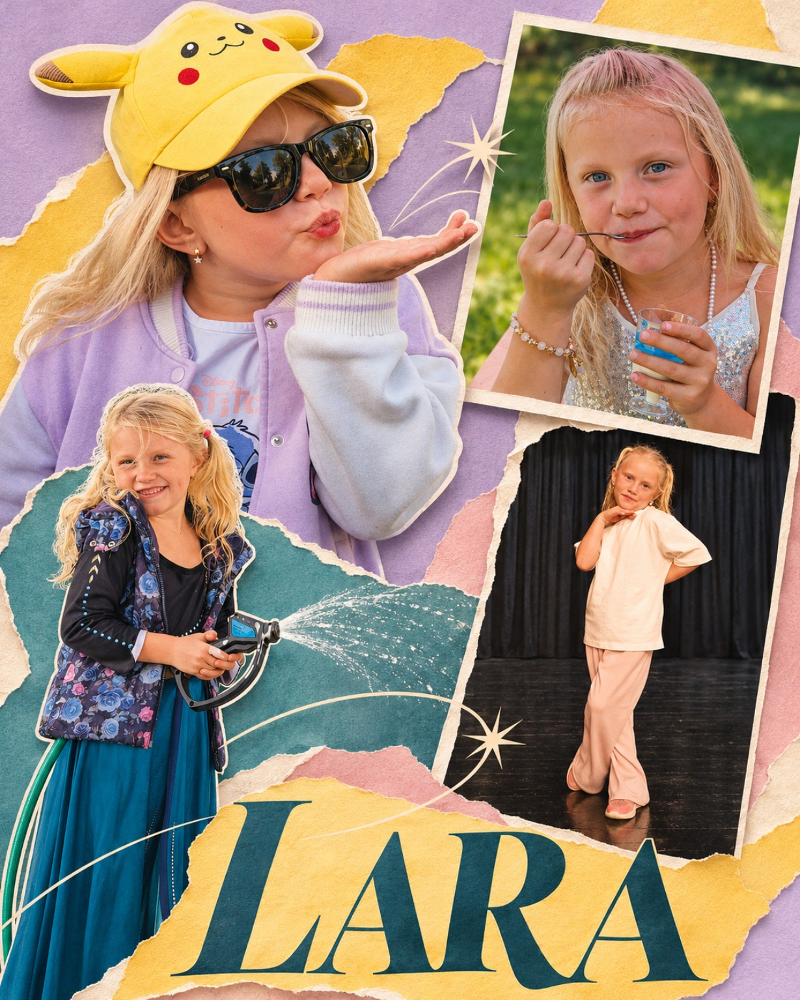

<!DOCTYPE html>
<html lang="pl">
<head>
<meta charset="utf-8"/>
<meta name="viewport" content="width=device-width,initial-scale=1,maximum-scale=1,viewport-fit=cover"/>
<meta name="theme-color" content="#895bde"/>
<meta name="description" content="Królestwo Melodii Lary — pięć poziomów, kolędy i cztery polskie pieśni na prawdziwym keyboardzie"/>
<link rel="manifest" href="./manifest.webmanifest" type="application/manifest+json"/>
<link rel="icon" type="image/png" sizes="192x192" href="./icon-192.png"/>
<link rel="icon" type="image/png" sizes="48x48" href="./favicon.png"/>
<link rel="apple-touch-icon" href="./icon-192.png"/>
<meta name="mobile-web-app-capable" content="yes"/>
<meta name="apple-mobile-web-app-capable" content="yes"/>
<meta name="apple-mobile-web-app-status-bar-style" content="default"/>
<title>Królestwo Melodii Lary 👑🎹</title>
<style>
:root{--ink:#3e285c;--deep:#422479;--violet:#8b5ee8;--pink:#ef75b0;--light:#fff9fc;--sky:#82ccfa;--good:#37b68f;--shade:rgba(86,43,138,.16);font-family:ui-rounded,'Trebuchet MS',system-ui,-apple-system,sans-serif;color:var(--ink);-webkit-tap-highlight-color:transparent}
*{box-sizing:border-box}html,body{height:100%;margin:0}body{overflow:hidden;background:#c6b2ff}button,input,select{font:inherit}button{cursor:pointer;border:0;touch-action:manipulation}button:focus-visible,input:focus-visible{outline:3px solid #5635b0;outline-offset:2px}button:disabled{opacity:.45;cursor:default}
#app{height:100dvh;width:100%;overflow:hidden;position:relative;background:radial-gradient(circle at 84% 0%,#fff7c8 0,transparent 24%),radial-gradient(circle at 20% 16%,#fff4fe 0,transparent 42%),linear-gradient(127deg,#d2eaff,#e5d4fa 57%,#ffd1e2);isolation:isolate}
#app:before{content:'✦   ✿       ✧           ✦       ♡            ✧          ✿';color:rgba(255,255,255,.75);font-size:38px;letter-spacing:38px;position:absolute;top:19%;left:4%;width:100%;pointer-events:none;z-index:-1;white-space:nowrap}
button{transition:transform .13s ease,filter .13s}button:active{transform:scale(.96)}.shell{height:100%;display:flex;flex-direction:column;min-height:0;padding:env(safe-area-inset-top) max(8px,env(safe-area-inset-right)) env(safe-area-inset-bottom) max(8px,env(safe-area-inset-left))}
.topbar{flex:0 0 54px;display:flex;align-items:center;gap:10px;padding:4px 9px;min-height:0}.brand{font-weight:1000;font-size:clamp(17px,2.5vw,25px);color:#613694;text-shadow:0 1px white;white-space:nowrap;overflow:hidden;text-overflow:ellipsis}.topspace{flex:1}.pill{display:inline-flex;align-items:center;gap:7px;border-radius:30px;padding:8px 12px;background:rgba(255,255,255,.7);box-shadow:0 2px 10px #8258a52b;font-weight:900;white-space:nowrap}.smallbtn{min-width:43px;min-height:43px;border-radius:17px;background:#fff8;color:#58368c;padding:9px 12px;font-weight:900;box-shadow:0 3px 0 #6e409036}.btn{border-radius:18px;padding:11px 17px;background:linear-gradient(130deg,#f978b4,#d55dad);color:white;font-weight:1000;font-size:16px;box-shadow:0 5px 0 #b44887,0 6px 10px #9e56a430;min-height:44px;text-shadow:0 1px 1px #9b4470}.btn.blue{background:linear-gradient(130deg,#70bafc,#6779eb);box-shadow:0 5px 0 #536ac8,0 6px 12px #5667bd30}.btn.purple{background:linear-gradient(130deg,#b18df5,#805edc);box-shadow:0 5px 0 #6f4cb7,0 6px 12px #6741ae30}.btn.mint{background:linear-gradient(130deg,#75e4bd,#34bfa6);box-shadow:0 5px 0 #249e8a,0 6px 12px #27947f30}.btn.cream{background:#fff7f1;color:#7751a6;text-shadow:none;box-shadow:0 4px 0 #b99ad9}.btn.slim{font-size:14px;padding:7px 11px;border-radius:14px;min-height:38px}.btn.ghost{background:#fff9;color:#7c4aa1;text-shadow:none;box-shadow:0 2px 0 #aa86cb}.btn.active{outline:3px solid #fff;filter:saturate(1.3)}.tag{font-size:11px;font-weight:900;border-radius:12px;background:#fff9;padding:5px 8px;white-space:nowrap}
.view{flex:1;overflow:hidden;min-height:0}.scroll{height:100%;overflow:auto;scrollbar-width:thin;padding:5px 9px 16px}.panel{border:2px solid rgba(255,255,255,.95);border-radius:24px;background:rgba(255,255,255,.67);box-shadow:0 8px 22px #a26fb337;backdrop-filter:blur(5px)}.homegrid{height:100%;display:grid;grid-template-columns:1.1fr .95fr .95fr .95fr;gap:12px;padding:5px 8px 13px}.homehero{padding:12px 10px;position:relative;overflow:hidden;display:flex;flex-direction:column;justify-content:space-between;background:linear-gradient(155deg,#fff1fbdf,#e6d7ffdd)}.hello{font-size:clamp(19px,2.6vw,28px);font-weight:1000;line-height:1.13;color:#713ca0}.homehero .princess-wrap{position:absolute;bottom:-13px;right:-18px;width:58%;max-height:80%;opacity:.98}.homehero .btn{z-index:2;align-self:flex-start}.homecard{border:2px solid white;position:relative;border-radius:26px;background:linear-gradient(150deg,#ffd4e9,#fca7d0);padding:14px 11px;text-align:left;box-shadow:0 7px 0 #c48cc16b;display:flex;flex-direction:column;justify-content:space-between;color:#5f357c;min-width:0;overflow:hidden}.homecard.blue{background:linear-gradient(145deg,#d5f3ff,#96cfff)}.homecard.purple{background:linear-gradient(145deg,#f5e2ff,#c8b0ff)}.homecard .emoji{font-size:clamp(40px,6.7vw,73px);align-self:center;filter:drop-shadow(0 5px 2px #8d6cc12c);line-height:1.15}.homecard strong{font-size:clamp(15px,2.1vw,22px)}.homecard small{font-weight:700;font-size:12px}
.level-layout{display:grid;grid-template-columns:240px 1fr;gap:12px;height:100%;padding:5px 8px 12px}.levelrail{display:flex;flex-direction:column;gap:7px;overflow:auto;padding:3px}.levelbutton{font-size:14px;line-height:1.2;overflow:hidden;background:#ffffffa3;border:2px solid #fff;border-radius:17px;text-align:left;padding:11px 13px;color:#694292;font-weight:900;min-height:52px;box-shadow:0 3px 0 #ad8bce66}.levelbutton.selected{background:#a57bec;color:white}.levelcards{padding:12px;overflow:auto}.lesson-grid{display:grid;grid-template-columns:repeat(3,minmax(0,1fr));gap:11px}.lesson{border:2px solid #fff;background:linear-gradient(155deg,#fffdfb,#f8eafa);border-radius:20px;min-height:136px;padding:10px;display:flex;flex-direction:column;justify-content:space-between;text-align:left;color:#613988;box-shadow:0 4px 0 #b69bcf80}.lesson .songemoji{font-size:34px}.lesson .songtitle{font-weight:1000;font-size:16px;line-height:1.1}.lesson .sub{font-size:11px;color:#9470aa;font-weight:800}.levelintro{font-weight:900;margin-bottom:10px;font-size:20px;display:flex;align-items:center;justify-content:space-between;gap:5px}
.player-layout{height:100%;display:flex;flex-direction:column;padding:0 8px 7px;gap:7px}.player-content{flex:1;min-height:0;display:grid;grid-template-columns:26% 1fr;gap:9px}.sidepanel{min-height:0;display:flex;flex-direction:column;padding:10px 12px;justify-content:space-between;overflow:auto}.sidepanel h2{font-size:clamp(15px,2vw,19px);margin:0 0 5px}.songsubtitle{font-size:12px;font-weight:900;color:#8561a4}.now-note{border-radius:17px;background:#fff8;padding:7px 9px;text-align:center;display:flex;align-items:center;justify-content:center;gap:12px}.now-note .big-note{font-size:clamp(30px,4vw,43px);font-weight:1000}.now-note .solfege{font-size:13px;color:#805ca4;font-weight:900}.voicehint{font-size:11px;font-weight:900;color:#7549a0;line-height:1.25}.musicarea{border-radius:24px;background:#fffc;box-shadow:inset 0 -5px 10px #c8b8ec31;border:2px solid white;display:flex;flex-direction:column;overflow:hidden;min-height:0;padding:6px 9px 8px;gap:6px}.note-ribbon{flex:0 0 58px;display:flex;gap:5px;justify-content:center;align-items:center;overflow:hidden}.beat-note{min-width:52px;min-height:48px;padding:5px 9px;border-radius:15px;background:#ecddfa;text-align:center;display:flex;flex-direction:column;justify-content:center;opacity:.55;font-weight:1000;color:#744a9a}.beat-note.current{opacity:1;background:#ffbce0;box-shadow:0 0 0 3px #f57cb7b8;transform:scale(1.04)}.beat-note.next{opacity:.88}.beat-note.rest{background:#e8ecfa}.beat-note small{font-size:10px}.musicprogress{height:6px;background:#e1d7f0;border-radius:10px;flex-shrink:0;overflow:hidden}.musicfill{height:100%;background:linear-gradient(90deg,#71c4fc,#e67fbc);width:0%;transition:none}.keybed-wrap{flex:1;min-height:0;display:flex;align-items:stretch;justify-content:center;padding:0 8px}.keybed{width:100%;height:100%;position:relative;display:flex;max-width:900px;min-height:84px;overflow:visible;user-select:none;touch-action:manipulation}.piano-white{height:100%;position:relative;flex:1;border:2px solid #9985a2;border-top:3px solid #927d9c;background:linear-gradient(#fff,#fffdf8 70%,#e9e0ef);border-radius:0 0 11px 11px;margin:0 1px;display:flex;align-items:flex-end;justify-content:center;padding-bottom:6px;z-index:1;box-shadow:inset 0 -6px 8px #d0bed363;color:#64428b;font-size:15px;font-weight:1000}.piano-white.lit{background:linear-gradient(#fff4a0,#ffc0e3 65%,#ea85be);box-shadow:0 0 16px #f984c2,inset 0 -4px 4px #ea83be;border-color:#f483b9}.piano-black{position:absolute;top:0;height:53%;width:8.3%;z-index:3;border:2px solid #29223d;border-radius:0 0 8px 8px;background:linear-gradient(100deg,#524568,#201630 60%,#49345d);color:#fff3;font-size:10px;font-weight:900;display:flex;align-items:end;justify-content:center;padding-bottom:7px;box-shadow:0 4px 1px #493c5d73}.piano-black.lit{background:linear-gradient(#ae8ef8,#744de0);box-shadow:0 0 15px #8d67e8;border-color:#c7b5ff}.piano-white.dim{opacity:.45}.stepbar{display:flex;gap:8px;justify-content:center;align-items:center;flex-wrap:nowrap;min-height:42px;flex-shrink:0}.stepbar .btn{white-space:nowrap}.bpm-label{font-size:12px;font-weight:1000;background:#fff9;border-radius:13px;padding:7px 8px;white-space:nowrap}.statusline{font-weight:800;font-size:12px;text-align:center;color:#79549d}
.wardrobe-layout{height:100%;display:grid;grid-template-columns:32% 1fr;gap:12px;padding:5px 9px 13px}.wardrobe-preview{display:flex;flex-direction:column;align-items:center;justify-content:center;min-height:0;position:relative;overflow:hidden;background:linear-gradient(#f9e3ff,#d5e8ff)}.wardrobe-preview .princess-wrap{height:80%;width:100%;max-width:260px}.custom-options{overflow:auto;padding:12px}.option-row{margin:4px 0 12px}.option-title{font-size:13px;font-weight:1000;margin-bottom:7px}.option-picks{display:flex;gap:8px;flex-wrap:wrap}.choice{min-height:37px;min-width:42px;padding:6px 13px;border:2px solid #fff;background:#f8f1ff;border-radius:14px;color:#70439a;font-weight:900}.choice.active{background:#b591f0;color:white;box-shadow:inset 0 0 0 2px #fff}.swatch{width:37px;height:37px;border-radius:50%;border:3px solid white;box-shadow:0 2px 5px #62428344}.swatch.active{outline:3px solid #7a4fd0;outline-offset:1px}
.garden-layout{height:100%;display:grid;grid-template-columns:1fr 1fr;gap:12px;padding:5px 9px 12px}.garden-scene{position:relative;overflow:hidden;background:linear-gradient(#b4e5ff,#d7f7e1 70%,#a1dd99 70%);display:flex;align-items:center;justify-content:center;font-size:65px}.garden-scene .field{position:absolute;bottom:5%;font-size:clamp(34px,5.5vw,66px);white-space:nowrap}.garden-info{padding:14px;overflow:auto}.garden-info h2{margin:0 0 10px}.badgegrid{display:grid;grid-template-columns:repeat(2,1fr);gap:8px}.award{padding:11px;background:#fff9;border-radius:15px;font-weight:800;font-size:12px}.award.locked{opacity:.48;filter:grayscale(.7)}
.composer-layout{height:100%;display:grid;grid-template-columns:1fr 1.4fr;gap:10px;padding:5px 9px 12px}.composer-info{padding:12px;overflow:auto}.composer-info h2{margin:0 0 4px}.composer-keys{display:flex;flex-direction:column;min-height:0;gap:8px;padding:10px}.composer-track{background:#fff9;border-radius:14px;min-height:54px;padding:8px;font-weight:900;display:flex;gap:5px;align-items:center;overflow-x:auto}.notechip{background:#ecbbf3;border-radius:11px;padding:8px;font-size:12px;white-space:nowrap}.composer-keys .keybed-wrap{max-height:160px}
.favorites{display:grid;grid-template-columns:repeat(4,minmax(0,1fr));gap:8px}.favorite{border:2px solid white;padding:11px 9px;background:#fffc;border-radius:16px;font-size:13px;font-weight:900;min-height:71px;display:flex;flex-direction:column;justify-content:space-between}.favorite small{color:#916caf;font-size:10px}.modal-back{position:fixed;inset:0;background:#36204c99;display:flex;align-items:center;justify-content:center;padding:10px;z-index:20}.modal{width:min(690px,96vw);max-height:min(94dvh,540px);background:linear-gradient(155deg,#fff8fb,#e9e5ff);border:4px solid white;border-radius:27px;padding:16px;overflow:auto;box-shadow:0 20px 50px #2a174d75;text-align:center}.modal h2{margin:0 0 7px;font-size:clamp(20px,3vw,28px);color:#77439c}.modal p{font-weight:800;color:#7b5e97;line-height:1.4}.modal-buttons{display:flex;flex-wrap:wrap;gap:10px;justify-content:center;margin:15px auto 4px}.stageemoji{font-size:48px;margin:5px}.settings-grid{display:grid;grid-template-columns:repeat(2,minmax(0,1fr));gap:8px;text-align:left}.settings-grid label{font-weight:900;font-size:12px;display:flex;flex-direction:column;gap:5px}.settings-grid select,.settings-grid input{background:white;border:2px solid #d5baf0;border-radius:12px;min-height:40px;padding:8px;color:#623a80;max-width:100%}.toast{position:fixed;bottom:12px;left:50%;transform:translateX(-50%);z-index:30;padding:12px 18px;border-radius:18px;background:#593c8e;color:white;font-weight:900;text-align:center;box-shadow:0 5px 25px #664e8180;max-width:90%}.hiddenfile{position:absolute;width:1px;height:1px;opacity:0;pointer-events:none}
@media(max-width:680px){.homegrid{grid-template-columns:repeat(3,1fr)}.homehero{grid-column:span 3;min-height:92px;padding:8px 15px}.homehero .princess-wrap{width:90px;right:35px;bottom:-46px}.homecard{min-height:120px}.homecard .emoji{font-size:39px}.level-layout{grid-template-columns:160px 1fr}.lesson-grid{grid-template-columns:repeat(2,minmax(0,1fr))}.player-content{grid-template-columns:28% 1fr}.sidepanel{padding:5px 7px}.stepbar{gap:4px}.stepbar .btn{font-size:12px;padding:5px 7px;min-height:35px}.note-ribbon{flex-basis:44px}.beat-note{min-height:39px;min-width:39px}.piano-white{font-size:12px}}
@media(orientation:portrait){.shell:has(.player-layout) .player-content{grid-template-columns:1fr;grid-template-rows:95px minmax(180px,1fr)}.shell:has(.player-layout) .sidepanel{flex-direction:row;align-items:center;gap:8px}.shell:has(.player-layout) .now-note{min-width:110px}.shell:has(.player-layout) .voicehint{display:none}.shell:has(.player-layout) .player-layout{overflow:auto}.shell:has(.player-layout) .stepbar{flex-wrap:wrap;padding:6px 0}.homegrid{grid-template-columns:1fr 1fr;overflow:auto}.homehero{grid-column:span 2}.homecard{min-height:140px}.topbar{flex-basis:54px}.brand{font-size:17px}.level-layout{grid-template-columns:1fr;grid-template-rows:65px minmax(200px,1fr)}.levelrail{flex-direction:row;overflow:auto}.levelbutton{min-width:130px}.wardrobe-layout,.garden-layout,.composer-layout{grid-template-columns:1fr;grid-template-rows:38% 1fr}.favorites{grid-template-columns:repeat(2,1fr)}}
@media(prefers-reduced-motion:reduce){button{transition:none}}
/* v0.2: phrase chooser and lyric strip optimized for landscape phones */
.phrase-tools{display:flex;align-items:center;justify-content:center;gap:5px;min-height:29px;flex:0 0 29px}
.microbtn{background:#eee4ff;color:#694292;border:1px solid #cdb3ee;border-radius:10px;min-height:28px;padding:3px 9px;font-size:11px;font-weight:950;white-space:nowrap}
.microbtn.chosen{background:#8b5ee8;color:#fff}.phrase-label{font-size:11px;font-weight:900;color:#8059a8;white-space:nowrap;text-overflow:ellipsis;overflow:hidden}
.lyric-line{background:#fff4d9;color:#76488b;border-radius:11px;font-size:clamp(12px,1.8vw,15px);font-weight:1000;padding:5px 8px;min-height:27px;text-align:center;flex-shrink:0;white-space:nowrap;overflow:hidden;text-overflow:ellipsis}
.musicarea .note-ribbon{flex-basis:46px}.beat-note{min-height:42px;min-width:44px}.beat-note small{font-size:9px}
.choice.mini{font-size:11px;min-height:30px;padding:4px 7px}.lyrics-full{max-height:40vh;overflow:auto;text-align:left;padding:4px 12px;background:#fff7;border-radius:13px}.lyrics-full p{font-size:18px;font-weight:800;margin:8px 0}
@media (max-height:420px){.topbar{flex-basis:48px}.player-layout{gap:4px}.sidepanel{padding:5px 9px}.sidepanel .now-note{padding:4px 6px}.sidepanel h2{margin:0 0 2px}.musicarea{gap:3px;padding:4px 6px 5px}.phrase-tools{min-height:25px;flex-basis:25px}.lyric-line{min-height:23px;padding:3px 7px}.musicarea .note-ribbon{flex-basis:39px}.musicarea .beat-note{min-height:34px}.stepbar{min-height:35px}.stepbar .btn{font-size:12px;padding:5px 7px;min-height:32px}.bpm-label{font-size:10px;padding:4px}.statusline{font-size:11px}.voicehint{font-size:10px}}
@media (max-width:730px){.microbtn{padding:3px 6px;font-size:10px}.phrase-label{font-size:10px}.piano-white{font-size:12px}.musicarea .note-ribbon{gap:3px}.musicarea .beat-note{min-width:35px;padding:3px 5px}}

.homehero{grid-row:span 2}
/* v0.3: touch-first, no Chrome long-press text selection or Google text lookup */
html,body,#app,#app *,.modal-back,.modal-back *{-webkit-user-select:none!important;user-select:none!important;-webkit-touch-callout:none!important;-webkit-tap-highlight-color:transparent}
button, .microbtn,.rangechip{touch-action:manipulation}
input,textarea,select{user-select:text!important;-webkit-user-select:text!important}
.rangestrip{display:flex;flex-shrink:0;align-items:center;gap:5px;overflow-x:auto;min-height:32px;scrollbar-width:thin;padding:2px 0}
.rangechip{font-size:11px;white-space:nowrap;min-height:29px;padding:5px 9px;color:#70439a;font-weight:900;background:#f0e6ff;border:1px solid white;border-radius:12px}
.rangechip.active{color:white;background:#895bde;box-shadow:0 2px 0 #663ca4}
.phrase-tools{min-height:36px;display:flex;align-items:center;gap:5px;flex-shrink:0}
.phrase-tools .phrase-label{font-size:clamp(10px,1.25vw,14px);font-weight:900;color:#754399;flex:1;text-align:center;white-space:nowrap;overflow:hidden;text-overflow:ellipsis}
.microbtn.next-highlight{background:#ffe9a7;color:#6a3c69}
.holiday-banner{display:flex;align-items:center;gap:10px;padding:10px 18px;margin-bottom:10px;font-size:19px;color:#79509b;background:linear-gradient(110deg,#fdfaff,#e3f5ff)}
.holiday-grid{display:grid;grid-template-columns:repeat(3,minmax(0,1fr));gap:10px;padding:0 3px 14px}
.holiday-song{min-height:132px;background:linear-gradient(145deg,#fff9fb,#e6ecff)}
.holiday-song.pending{opacity:.6;filter:grayscale(.25);cursor:default}
.holiday-song .draft-mark{font-size:10px;color:#ad5a92;font-weight:900;background:#fff5;border-radius:9px;padding:4px}
.lyric-line{flex-shrink:0}
@media(max-height:470px){.rangestrip{min-height:28px}.rangechip{min-height:26px;padding:4px 8px}.note-ribbon{flex:0 0 45px}.beat-note{min-height:39px;min-width:42px}.player-layout{gap:4px}.musicarea{gap:4px}.topbar{flex-basis:48px}.stepbar{gap:5px}.stepbar .btn{padding:6px 9px;font-size:12px}.sidepanel{padding:6px 9px}.sidepanel h2{font-size:15px}}
@media(max-width:720px){.holiday-grid{grid-template-columns:repeat(2,minmax(0,1fr))}.phrase-tools .phrase-label{max-width:140px}.homecard strong{font-size:15px}}

/* v0.4: readable pitch labels, particularly lower A3 and flats */
.piano-black{font-size:clamp(8px,1.4vw,12px)}
.piano-white span{font-size:clamp(9px,1.7vw,15px)}
@media (max-height:410px){.rangechip{font-size:10px}.phrase-label{font-size:11px}}

/* v0.5: calm, persistent wardrobe and microphone-led lessons */
.step-methods{display:flex;gap:4px;flex-wrap:wrap}
.step-methods .btn{flex:1;min-width:0;font-size:clamp(10px,1.35vw,12px);padding:5px 6px;white-space:nowrap}
.mic-readout{font-size:clamp(10px,1.2vw,12px);line-height:1.15;font-weight:850;color:#744b93;background:#f5effe;border-radius:10px;padding:5px 6px;min-height:25px}
.mic-readout.listening{background:#dcfff0;color:#235c56}
.mic-readout[data-tone="try"]{background:#fff3d5;color:#795a2d}
.mic-readout[data-tone="good"]{background:#dcfff0;color:#286650}
@media(max-height:415px){.step-methods .btn{font-size:10px;padding:4px}.mic-readout{font-size:10px;padding:3px 5px;min-height:19px}.voicehint{font-size:9px}}

/* v0.6: wybór trybu gry bezpośrednio po „Graj ze mną” */
.practice-choice{width:min(560px,94vw);padding:11px 14px}.practice-choice .stageemoji{font-size:32px;margin:0}.practice-choice h2{font-size:24px;margin:0}.practice-choice p{margin:4px 0 10px;font-size:13px}.practice-choices{display:grid;grid-template-columns:1fr 1fr;gap:10px;margin-bottom:10px}.practice-tile{display:flex;flex-direction:column;align-items:center;justify-content:center;gap:5px;background:linear-gradient(150deg,#ffe3f2,#f8c5e6);border:3px solid white;color:#6d3484;border-radius:20px;padding:10px;min-height:115px;box-shadow:0 4px 0 #b08cb7;text-align:center}.practice-tile.blue{background:linear-gradient(150deg,#d8faff,#a8d8ff)}.practice-emoji{font-size:28px}.practice-tile strong{font-size:16px}.practice-tile small{font-size:12px;font-weight:750;line-height:1.2;max-width:190px}.practice-choice .btn.ghost{margin-top:2px}
@media(max-height:410px){.practice-tile{padding:6px;min-height:90px}.practice-choice .stageemoji{font-size:25px}.practice-choice h2{font-size:20px}.practice-choice p{margin:2px 0 7px}.practice-tile strong{font-size:14px}.practice-tile small{font-size:11px}.practice-emoji{font-size:23px}}

/* v0.7 — śpiewnik czytelny, bez elementów edukacyjnych */
.singbook{width:min(665px,95vw);height:min(94dvh,550px);max-height:94dvh;padding:0;display:flex;flex-direction:column;overflow:hidden;background:linear-gradient(145deg,#fffdfb,#fff1f9 55%,#f2ecff);border:3px solid #fff}
.singbook-head{padding:12px 18px 9px;border-bottom:2px solid #f8d7ec;display:flex;align-items:center;justify-content:center;position:relative;flex:0 0 auto;gap:8px}
.singbook-head h2{margin:0!important;font-size:clamp(19px,3.3vw,28px);line-height:1.1;color:#81419a}
.singbook-bloom{font-size:23px}.singbook-close{position:absolute;right:12px;top:8px;border:0;background:#f0e5fa;border-radius:100%;height:37px;width:37px;font-size:20px;color:#6a4090}
.singbook-pages{overflow-y:auto;overscroll-behavior:contain;padding:9px 18px 26px;scrollbar-width:thin;text-align:center;flex:1;user-select:text;-webkit-user-select:text;touch-action:pan-y}
.singbook-verse{margin:8px auto 21px;max-width:590px;padding:5px 10px 16px;border-bottom:1px dotted #e2c9e7}
.singbook-verse h3{margin:0 0 6px;color:#a262ba;font-size:13px;text-transform:uppercase;letter-spacing:.09em}
.singbook-verse p{margin:0!important;color:#563370!important;font-size:clamp(17px,3.1vw,24px);font-weight:850;line-height:1.48}
@media (max-height:410px){.singbook-head{padding:7px 14px}.singbook-verse{margin:6px auto 12px;padding:2px 8px 9px}.singbook-verse p{font-size:clamp(17px,2.6vw,21px);line-height:1.36}}

.patriotic-banner{background:linear-gradient(110deg,#fff5fa,#ffeced 48%,#fefcfd);border-color:#ffd2dd}
.singbook-edit{border:0;background:#e5f5ff;color:#5265b5;border-radius:999px;font-size:18px;width:34px;height:34px;position:absolute;right:57px;top:8px}
.editbook{width:min(700px,96vw);max-height:96dvh;display:flex;flex-direction:column;gap:6px;overflow:hidden;padding:11px 14px}
.editbook h2{font-size:18px;margin:0}.editbook p{font-size:12px;margin:0}
.editbook textarea{display:block;flex:1;min-height:85px;max-height:48dvh;resize:none;border:2px solid #bf99e5;border-radius:11px;background:#fffdfb;padding:12px;font:750 16px/1.35 system-ui;color:#3a275e;user-select:text;-webkit-user-select:text;touch-action:pan-y}
@media(max-height:410px){.singbook-edit{top:3px}.editbook textarea{max-height:36dvh}}
video:fullscreen{width:100vw;height:100vh;object-fit:contain;background:#000;border:0;border-radius:0}
/* Welcome and original-quality performance library, v0.9.0. */
.welcome{height:100%;width:100%;position:relative;overflow:hidden;background:#d8c5e9;isolation:isolate}
.welcome::before{content:'';position:absolute;inset:-28px;background:center/cover url('./assets/lara-collage.png');filter:blur(24px) saturate(.8);opacity:.65;z-index:-1}
.welcome-collage{display:block;width:100%;height:100%;object-fit:contain}
.welcome-heart{position:absolute;left:50%;top:50%;transform:translate(-50%,-50%);width:72px;height:72px;background:transparent;padding:20px;display:grid;place-items:center;border-radius:50%}
.welcome-heart:active{transform:translate(-50%,-50%) scale(.94)}
.welcome-heart svg{width:32px;height:32px;overflow:visible;filter:drop-shadow(0 0 5px #fff) drop-shadow(0 0 13px #ff6eb8);animation:heart-shimmer 4s linear infinite,heart-pulse 1.8s ease-in-out infinite}
@keyframes heart-shimmer{0%{filter:drop-shadow(0 0 5px #fff) drop-shadow(0 0 13px #ff6eb8);fill:#ff69b5}33%{fill:#ba7aff}66%{fill:#70cfff}100%{fill:#ff69b5}}
@keyframes heart-pulse{50%{transform:scale(1.13)}}
@media(prefers-reduced-motion:reduce){.welcome-heart svg{animation:none;fill:#ef75b0}}
.homehero{grid-row:auto}
.video-library{height:100%;display:flex;flex-direction:column;padding:4px 8px 12px;gap:8px;overflow:auto}
.video-grid{display:grid;grid-template-columns:1fr 1fr;gap:14px;flex:1;min-height:210px}
.video-card{display:grid;grid-template-columns:38% 1fr;gap:12px;min-height:0;overflow:hidden;padding:10px}
.video-poster{width:100%;height:100%;min-height:0;object-fit:contain;border-radius:15px;background:#68517f}
.video-info{display:flex;flex-direction:column;justify-content:center;align-items:flex-start;gap:6px;min-width:0}
.video-info .btn{font-size:14px;min-height:40px;padding:8px 12px}.video-info .btn.slim{font-size:12px;min-height:32px;padding:5px 8px}.video-info h2{font-size:18px;margin:0}.video-info p{font-size:12px;margin:0}.video-status{font-weight:800;font-size:12px;min-height:16px}
.video-progress{width:100%;accent-color:#b26ae5}.video-footer{display:flex;align-items:center;justify-content:space-between;gap:8px;font-size:12px;flex-wrap:wrap}
.video-error{color:#8c2451;font-size:13px;font-weight:800;margin:0}.video-parent{display:flex;gap:7px;flex-wrap:wrap;padding:4px 0}
.video-player{height:100%;display:flex;flex-direction:column;gap:8px;padding:2px 8px 12px}.video-playerbar{display:flex;align-items:center;gap:15px;font-size:13px;font-weight:800}.video-player video{min-height:0;flex:1;width:100%;object-fit:contain;background:#221833;border:2px solid #fff;border-radius:20px}
@media(max-width:680px) and (orientation:landscape){.video-card{gap:6px;padding:7px}.video-info h2{font-size:16px}.video-info .btn{font-size:12px;padding:7px}.video-grid{gap:8px}.homehero .princess-wrap{width:68px;right:-5px;bottom:-20px}.homehero{grid-column:auto;min-height:0}.homecard{min-height:90px}}
@media(orientation:portrait){.video-grid{grid-template-columns:1fr;flex:none}.video-card{min-height:210px}.video-poster{height:200px}.video-playerbar{flex-wrap:wrap}}

</style>
</head>
<body><div id="app"></div><script src="./video-library.js?v=0.9.0-12"></script><script>
(()=>{'use strict';
const VERSION='0.9.0', STORE='krolestwo-lary-save-v1';
// Internal English pitch labels: B is Polish H; note range spans C4–G5.
const NOTES=['G3','G#3','A3','A#3','B3','C','C#','D','D#','E','F','F#','G','G#','A','A#','B','C5','C#5','D5','D#5','E5','F5','F#5','G5'];
const LABELS={'G3':'SOL','G#3':'SOL♯','A3':'LA','A#3':'LA♯','B3':'SI',C:'DO',D:'RE',E:'MI',F:'FA',G:'SOL',A:'LA',B:'SI','C#':'DO♯','D#':'RE♯','F#':'FA♯','G#':'SOL♯','A#':'LA♯',C5:'DO',D5:'RE',E5:'MI',F5:'FA',G5:'SOL','C#5':'DO♯','D#5':'RE♯','F#5':'FA♯'};
const COLORS=['#f88fbe','#a9a3fc','#72b6ff','#9cdfea','#6ed5a0','#f2c777','#f6a2aa','#c0a0ff'];
const raw=(str)=>str.trim().split(/\s+/).filter(Boolean).map(x=>{let [p,d]=x.split(':');return {p:p==='-'?'REST':p,d:d?Number(d):1}});
function makeLesson(data){let beat=0,events=[],phrases=[],sections=[];data.parts.forEach((p,i)=>{const first=events.length,start=beat;for(const n of raw(p.notes)){if(!(NOTES.includes(n.p)||n.p==='REST')||!Number.isFinite(n.d)||n.d<=0)throw Error('Nieprawidłowa nuta '+data.title+': '+n.p);events.push({...n,at:beat});beat+=n.d;}phrases.push({text:p.text,label:p.label,start,end:beat,first,last:events.length});const root=p.label.replace(/ · .*/, '');if(sections.length&&sections.at(-1).label===root){sections.at(-1).last=events.length;sections.at(-1).end=beat;}else sections.push({label:root,first,last:events.length,start,end:beat});});return {...data,notes:events.map(e=>({p:e.p,d:e.d})),events,phrases,sections,total:beat,lyric:phrases.map(p=>p.text).join(' / '),voice:data.voice||'01 PIANO',bpm:data.bpm||78};}

const LESSONS=[{"id":"panie","title":"Panie Janie","family":"Panie Janie","lv":1,"emoji":"🔔","bpm":76,"parts":[{"label":"Zwrotka 1 · początek","text":"Panie Janie, Panie Janie","notes":"C D E C C D E C"},{"label":"Zwrotka 1 · rano","text":"Rano wstań, rano wstań","notes":"E F G:2 E F G:2"},{"label":"Zwrotka 1 · dzwony","text":"Wszystkie dzwony biją, wszystkie dzwony biją","notes":"G:.5 A:.5 G:.5 F:.5 E C G:.5 A:.5 G:.5 F:.5 E C"},{"label":"Zwrotka 1 · finał","text":"Bim, bam, bom, bim, bam, bom","notes":"C G3 C:2 C G3 C:2"},{"label":"Zwrotka 2 · początek","text":"Panie Janie, Panie Janie","notes":"C D E C C D E C"},{"label":"Zwrotka 2 · rano","text":"Rano wstań, rano wstań","notes":"E F G:2 E F G:2"},{"label":"Zwrotka 2 · dzwony","text":"Wszystkie dzwony biją, wszystkie dzwony biją","notes":"G:.5 A:.5 G:.5 F:.5 E C G:.5 A:.5 G:.5 F:.5 E C"},{"label":"Zwrotka 2 · finał","text":"Bim, bam, bom, bim, bam, bom","notes":"C G3 C:2 C G3 C:2"}],"voice":"01 PIANO","note":"Tradycyjna melodia w C-dur, prawidłowe ćwierćnuty i ósemki. Zakończenie wykorzystuje G3 poniżej środkowego C.","source":"Frère Jacques — tradycyjny kanon, standardowe metrum 4/4","songbook":[{"heading":"Zwrotka 1","lines":"Panie Janie, Panie Janie,\nrano wstań, rano wstań!\nWszystkie dzwony biją, wszystkie dzwony biją,\nbim, bam, bom! Bim, bam, bom!"},{"heading":"Zwrotka 2","lines":"Panie Janie, Panie Janie,\nrano wstań, rano wstań!\nWszystkie dzwony biją, wszystkie dzwony biją,\nbim, bam, bom! Bim, bam, bom!"}],"audit":"source"},{"id":"kotek","title":"Wlazł kotek na płotek","family":"Wlazł kotek na płotek","lv":1,"emoji":"🐱","bpm":74,"parts":[{"label":"Zwrotka · część 1","text":"Wlazł kotek na płotek i mruga","notes":"G E E F D D C:.5 E:.5 G"},{"label":"Zwrotka · część 2","text":"Ładna to piosenka, niedługa","notes":"G E E F D D C:.5 E:.5 C"},{"label":"Dalsza część · część 1","text":"Niedługa, niekrótka, lecz w sam raz","notes":"G E E F D D C:.5 E:.5 G"},{"label":"Dalsza część · część 2","text":"Zaśpiewaj koteczku jeszcze raz","notes":"G E E F D D C:.5 E:.5 C"}],"voice":"01 PIANO","note":"Prosty wariant C-dur, trzyczęściowe zakończenia; wolniejsze tempo ćwiczebne. Warianty regionalne mogą się różnić.","songbook":[{"heading":"Zwrotka 1","lines":"Wlazł kotek na płotek i mruga,\nładna to piosenka, niedługa."},{"heading":"Zwrotka 2","lines":"Niedługa, niekrótka, lecz w sam raz,\nzaśpiewaj koteczku jeszcze raz."}],"audit":"practice"},{"id":"kotkidw","title":"Aaa, kotki dwa","family":"Aaa, kotki dwa","lv":2,"emoji":"🐈","bpm":68,"parts":[{"label":"Zwrotka · początek","text":"Aaa, kotki dwa","notes":"E A F A F:2"},{"label":"Zwrotka · dalej","text":"Szarobure obydwa","notes":"E A B G# E:2"},{"label":"Zwrotka · część 3","text":"Nic nie będą robiły","notes":"G C5 A A G C5 A:2"},{"label":"Zwrotka · finał","text":"Tylko ciebie bawiły","notes":"G C5 E5 C5 D5 B G:2"},{"label":"Powtórka · początek","text":"Aaa, kotki dwa","notes":"E A F A F:2"},{"label":"Powtórka · dalej","text":"Szarobure obydwa","notes":"E A B G# E:2"},{"label":"Powtórka · część 3","text":"Nic nie będą robiły","notes":"G C5 A A G C5 A:2"},{"label":"Powtórka · finał","text":"Tylko ciebie bawiły","notes":"G C5 E5 C5 D5 B G:2"}],"voice":"01 PIANO","note":"Tradycyjna kołysanka w prostej aranżacji na jedną rękę.","songbook":[{"heading":"Zwrotka 1","lines":"Aaa, kotki dwa,\nszarobure obydwa.\nNic nie będą robiły,\ntylko ciebie bawiły."},{"heading":"Zwrotka 2","lines":"Aaa, kotki dwa,\nszarobure obydwa.\nNic nie będą robiły,\ntylko ciebie bawiły."}],"audit":"practice"},{"id":"mis","title":"Stary niedźwiedź mocno śpi","family":"Stary niedźwiedź mocno śpi","lv":2,"emoji":"🐻","bpm":72,"parts":[{"label":"Zwrotka · początek","text":"Stary niedźwiedź mocno śpi","notes":"D E E E F D C:2"},{"label":"Zwrotka · powtórka","text":"Stary niedźwiedź mocno śpi","notes":"E G G G C5 A G:2"},{"label":"Zwrotka · ostrożnie","text":"My go nie zbudzimy","notes":"C5:1.5 B C5 D5 C5 B:2"},{"label":"Zwrotka · cichutko","text":"Bo się go boimy","notes":"D5:1.5 C5 B A G E:2"},{"label":"Zwrotka · finał","text":"Jak się zbudzi, to nas zje!","notes":"C E E E F D G:2"},{"label":"Powtórka · początek","text":"Stary niedźwiedź mocno śpi","notes":"D E E E F D C:2"},{"label":"Powtórka · powtórka","text":"Stary niedźwiedź mocno śpi","notes":"E G G G C5 A G:2"},{"label":"Powtórka · ostrożnie","text":"My go nie zbudzimy","notes":"C5:1.5 B C5 D5 C5 B:2"},{"label":"Powtórka · cichutko","text":"Bo się go boimy","notes":"D5:1.5 C5 B A G E:2"},{"label":"Powtórka · finał","text":"Jak się zbudzi, to nas zje!","notes":"C E E E F D G:2"}],"voice":"01 PIANO","songbook":[{"heading":"Zwrotka 1","lines":"Stary niedźwiedź mocno śpi,\nstary niedźwiedź mocno śpi.\nMy się go boimy,\nna palcach chodzimy,\njak się zbudzi, to nas zje!"},{"heading":"Zwrotka 2","lines":"Stary niedźwiedź mocno śpi,\nstary niedźwiedź mocno śpi.\nMy się go boimy,\nna palcach chodzimy,\njak się zbudzi, to nas zje!"}],"audit":"practice"},{"id":"kurki","title":"Trzy kurki","family":"Trzy kurki","lv":2,"emoji":"🐥","bpm":76,"parts":[{"label":"Zwrotka · część 1","text":"Wyszły w pole kurki trzy","notes":"C C G G A A G:2"},{"label":"Zwrotka · część 2","text":"I gęsiego sobie szły","notes":"F F E E D D C:2"},{"label":"Zwrotka · część 3","text":"Pierwsza przodem, w środku druga","notes":"G G F F E E D D"},{"label":"Zwrotka · część 4","text":"Trzecia z tyłu oczkiem mruga","notes":"G G F F E E D D"},{"label":"Zwrotka · część 5","text":"I tak sobie kurki trzy","notes":"C C G G A A G:2"},{"label":"Zwrotka · finał","text":"Raz, dwa! Raz, dwa! W pole szły!","notes":"F F E E D D C:2"},{"label":"Powtórka · część 1","text":"Wyszły w pole kurki trzy","notes":"C C G G A A G:2"},{"label":"Powtórka · część 2","text":"I gęsiego sobie szły","notes":"F F E E D D C:2"},{"label":"Powtórka · część 3","text":"Pierwsza przodem, w środku druga","notes":"G G F F E E D D"},{"label":"Powtórka · część 4","text":"Trzecia z tyłu oczkiem mruga","notes":"G G F F E E D D"},{"label":"Powtórka · część 5","text":"I tak sobie kurki trzy","notes":"C C G G A A G:2"},{"label":"Powtórka · finał","text":"Raz, dwa! Raz, dwa! W pole szły!","notes":"F F E E D D C:2"}],"voice":"01 PIANO","songbook":[{"heading":"Zwrotka 1","lines":"Wyszły w pole kurki trzy\ni gęsiego sobie szły.\nPierwsza przodem, w środku druga,\ntrzecia z tyłu oczkiem mruga.\nI tak sobie kurki trzy\nraz, dwa, raz, dwa, w pole szły."},{"heading":"Zwrotka 2","lines":"Wyszły w pole kurki trzy\ni gęsiego sobie szły.\nPierwsza przodem, w środku druga,\ntrzecia z tyłu oczkiem mruga.\nI tak sobie kurki trzy\nraz, dwa, raz, dwa, w pole szły."}],"audit":"practice"},{"id":"pociag","title":"Jedzie pociąg z daleka","family":"Jedzie pociąg z daleka","lv":3,"emoji":"🚂","bpm":82,"parts":[{"label":"Zwrotka 1 · początek","text":"Jedzie pociąg z daleka","notes":"G C5 E5 D5 C5 B C5:2"},{"label":"Zwrotka 1 · dalej","text":"Ani chwili nie czeka","notes":"G C5 E5 D5 C5 B C5:2"},{"label":"Zwrotka 1 · prośba","text":"Konduktorze łaskawy","notes":"G C5 E5 G5 F5 E5 D5:2"},{"label":"Zwrotka 1 · odpowiedź","text":"Zabierz nas do Warszawy","notes":"G B D5 F5 E5 D5 C5:2"},{"label":"Zwrotka 1 · powtórka","text":"Konduktorze łaskawy","notes":"G C5 E5 G5 F5 E5 D5:2"},{"label":"Zwrotka 1 · finał","text":"Zabierz nas do Warszawy","notes":"G B D5 F5 E5 D5 C5:2"},{"label":"Zwrotka 2 · początek","text":"Konduktorze łaskawy","notes":"G C5 E5 D5 C5 B C5:2"},{"label":"Zwrotka 2 · dalej","text":"Zabierz nas do Warszawy","notes":"G C5 E5 D5 C5 B C5:2"},{"label":"Zwrotka 2 · prośba","text":"Trudno, trudno to będzie","notes":"G C5 E5 G5 F5 E5 D5:2"},{"label":"Zwrotka 2 · odpowiedź","text":"Dużo osób jest wszędzie","notes":"G B D5 F5 E5 D5 C5:2"},{"label":"Zwrotka 2 · powtórka","text":"Trudno, trudno to będzie","notes":"G C5 E5 G5 F5 E5 D5:2"},{"label":"Zwrotka 2 · finał","text":"Dużo osób jest wszędzie","notes":"G B D5 F5 E5 D5 C5:2"},{"label":"Zwrotka 3 · początek","text":"Pięknie pana prosimy","notes":"G C5 E5 D5 C5 B C5:2"},{"label":"Zwrotka 3 · dalej","text":"Jeszcze miejsce widzimy","notes":"G C5 E5 D5 C5 B C5:2"},{"label":"Zwrotka 3 · prośba","text":"A więc prędko wsiadajcie","notes":"G C5 E5 G5 F5 E5 D5:2"},{"label":"Zwrotka 3 · odpowiedź","text":"Do Warszawy ruszajcie","notes":"G B D5 F5 E5 D5 C5:2"},{"label":"Zwrotka 3 · powtórka","text":"A więc prędko wsiadajcie","notes":"G C5 E5 G5 F5 E5 D5:2"},{"label":"Zwrotka 3 · finał","text":"Do Warszawy ruszajcie","notes":"G B D5 F5 E5 D5 C5:2"}],"voice":"01 PIANO","note":"Trzy tradycyjne zwrotki. Poprawiona melodia i oktawy na podstawie tabulatury; rytm pozostaje ćwiczebnym uproszczeniem.","songbook":[{"heading":"Zwrotka 1","lines":"Jedzie pociąg z daleka,\nna nikogo nie czeka.\nKonduktorze łaskawy,\nzabierz nas do Warszawy."},{"heading":"Zwrotka 2","lines":"Konduktorze łaskawy,\nzabierz nas do Warszawy.\nKonduktorze łaskawy,\nzabierz nas do Warszawy."}],"audit":"practice"},{"id":"krakow","title":"Krakowiaczek jeden","family":"Krakowiaczek jeden","lv":3,"emoji":"💃","bpm":96,"parts":[{"label":"Zwrotka 1 · początek","text":"Krakowiaczek jeden","notes":"E:.5 G:.5 B:.5 D5:.5 C5:.5 A -:.5"},{"label":"Zwrotka 1 · dalej","text":"Miał koników siedem","notes":"C5:.5 C5:.5 B:.5 G:.5 F:.5 A -:.5"},{"label":"Zwrotka 1 · część 3","text":"Pojechał na wojnę","notes":"E:.5 G:.5 B:.5 D5:.5 C5:.5 A -:.5"},{"label":"Zwrotka 1 · koniec","text":"Został mu się jeden","notes":"C5:.5 C5:.5 B:.5 G:.5 F F"},{"label":"Zwrotka 2 1 · początek","text":"Krakowiaczek jeden","notes":"E:.5 G:.5 B:.5 D5:.5 C5:.5 A -:.5"},{"label":"Zwrotka 2 1 · dalej","text":"W nowej czapce chodzi","notes":"C5:.5 C5:.5 B:.5 G:.5 F:.5 A -:.5"},{"label":"Zwrotka 2 1 · część 3","text":"Lubi skoczne tańce","notes":"E:.5 G:.5 B:.5 D5:.5 C5:.5 A -:.5"},{"label":"Zwrotka 2 1 · koniec","text":"Gra muzyka, gra!","notes":"C5:.5 C5:.5 B:.5 G:.5 F F"}],"voice":"07 ACCORDION","style":"95 POLKA 1","note":"Ćwiczebne uproszczenie rytmiczne; wariant melodii ludowej.","songbook":[{"heading":"Zwrotka 1","lines":"Krakowiaczek jeden\nmiał koników siedem.\nPojechał na wojnę,\nzostał mu się jeden."},{"heading":"Zwrotka 2","lines":"Krakowiaczek jeden\nw nowej czapce chodzi.\nLubi skoczne tańce,\ngra muzyka, gra!"}],"audit":"practice"},{"id":"stolat","title":"Sto lat","family":"Sto lat","lv":3,"emoji":"🎂","bpm":84,"parts":[{"label":"Zwrotka 1","text":"Sto lat, sto lat, niech żyje, żyje nam","notes":"G E G E G A:.5 G:.5 F:.5 E:.5 F"},{"label":"Zwrotka 2","text":"Sto lat, sto lat, niech żyje, żyje nam","notes":"F D F D F G:.5 F:.5 E:.5 D:.5 E"},{"label":"Refren 1 · jeszcze raz","text":"Jeszcze raz, jeszcze raz, niech żyje, żyje nam","notes":"G:.5 G:.5 E G:.5 G:.5 E G C5:.5 B:.5 A:.5 G#:.5 A"},{"label":"Refren 1 · finał","text":"Niech żyje nam","notes":"B:2 B B C5:3 -"},{"label":"Refren 2 · jeszcze raz","text":"Jeszcze raz, jeszcze raz, niech żyje, żyje nam","notes":"G:.5 G:.5 E G:.5 G:.5 E G C5:.5 B:.5 A:.5 G#:.5 A"},{"label":"Refren 2 · finał","text":"Niech żyje nam","notes":"B:2 B B C5:3 -"}],"voice":"01 PIANO","meter":"2/4","source":"Piotr Tadrzyński, Muzycznelekcje.pl, Sto Lat — nuty 2/4.","note":"Odtworzono rytm w 2/4 i chromatyczne G♯ z widocznego zapisu nutowego; refren wykonywany na bis. 84 BPM do nauki.","songbook":[{"heading":"Zwrotka 1","lines":"Sto lat, sto lat,\nniech żyje, żyje nam!\nSto lat, sto lat,\nniech żyje, żyje nam!"},{"heading":"Refren","lines":"Jeszcze raz, jeszcze raz,\nniech żyje, żyje nam!\nNiech żyje nam!"},{"heading":"Zwrotka 2","lines":"Sto lat, sto lat,\nniech żyje, żyje nam!\nSto lat, sto lat,\nniech żyje, żyje nam!"},{"heading":"Refren","lines":"Jeszcze raz, jeszcze raz,\nniech żyje, żyje nam!\nNiech żyje nam!"}],"audit":"practice"},{"id":"wojtus","title":"Z popielnika na Wojtusia","family":"Z popielnika na Wojtusia","lv":3,"emoji":"✨","bpm":96,"meter":"3/4","voice":"01 PIANO","parts":[{"label":"Zwrotka 1 · takty 1–4","text":"Z popielnika na Wojtusia","notes":"E:2 E F:2 E A:2 E C:2 A3"},{"label":"Zwrotka 1 · takty 5–8","text":"iskiereczka mruga:","notes":"E:2 E F:2 E B3:3 B3:3"},{"label":"Zwrotka 1 · takty 9–12","text":"Chodź, opowiem ci bajeczkę,","notes":"D:2 D E:2 D B:2 A G#:2 F"},{"label":"Zwrotka 1 · takty 13–16","text":"bajka będzie długa.","notes":"E:2 D C:2 B3 A3:3 A3:3"},{"label":"Zwrotka 2 · takty 1–4","text":"Była sobie raz królewna,","notes":"E:2 E F:2 E A:2 E C:2 A3"},{"label":"Zwrotka 2 · takty 5–8","text":"pokochała grajka.","notes":"E:2 E F:2 E B3:3 B3:3"},{"label":"Zwrotka 2 · takty 9–12","text":"Król wyprawił im wesele","notes":"D:2 D E:2 D B:2 A G#:2 F"},{"label":"Zwrotka 2 · takty 13–16","text":"i skończona bajka.","notes":"E:2 D C:2 B3 A3:3 A3:3"},{"label":"Zwrotka 3 · takty 1–4","text":"Była sobie Baba Jaga,","notes":"E:2 E F:2 E A:2 E C:2 A3"},{"label":"Zwrotka 3 · takty 5–8","text":"miała chatkę z masła,","notes":"E:2 E F:2 E B3:3 B3:3"},{"label":"Zwrotka 3 · takty 9–12","text":"a w tej chatce same dziwy!","notes":"D:2 D E:2 D B:2 A G#:2 F"},{"label":"Zwrotka 3 · takty 13–16","text":"Psst... Iskierka zgasła.","notes":"E:2 D C:2 B3 A3:3 A3:3"},{"label":"Powtórka · takty 1–4","text":"Z popielnika na Wojtusia","notes":"E:2 E F:2 E A:2 E C:2 A3"},{"label":"Powtórka · takty 5–8","text":"iskiereczka mruga:","notes":"E:2 E F:2 E B3:3 B3:3"},{"label":"Powtórka · takty 9–12","text":"Chodź, opowiem ci bajeczkę,","notes":"D:2 D E:2 D B:2 A G#:2 F"},{"label":"Powtórka · takty 13–16","text":"bajka będzie długa.","notes":"E:2 D C:2 B3 A3:3 A3:3"},{"label":"Zakończenie · takty 1–4","text":"Już ci Wojtuś nie uwierzy,","notes":"E:2 E F:2 E A:2 E C:2 A3"},{"label":"Zakończenie · takty 5–8","text":"iskiereczko mała.","notes":"E:2 E F:2 E B3:3 B3:3"},{"label":"Zakończenie · takty 9–12","text":"Chwilę błyśniesz, potem zgaśniesz.","notes":"D:2 D E:2 D B:2 A G#:2 F"},{"label":"Zakończenie · takty 13–16","text":"Ot i bajka cała.","notes":"E:2 D C:2 B3 A3:3 A3:3"}],"note":"Melodia, oktawy i wartości rytmiczne z przesłanego PDF: 3/4, ćwierćnuta = 96. Pełne 16 taktów dla każdej z pięciu części śpiewnika.","source":"PDF przekazany przez rodzica, nuty z oktawami i rytmiką; korekta v0.9.0","songbook":[{"heading":"Zwrotka 1","lines":"Z popielnika na Wojtusia\niskiereczka mruga:\nChodź, opowiem ci bajeczkę,\nbajka będzie długa."},{"heading":"Zwrotka 2","lines":"Była sobie raz królewna,\npokochała grajka.\nKról wyprawił im wesele\ni skończona bajka."},{"heading":"Zwrotka 3","lines":"Była sobie Baba Jaga,\nmiała chatkę z masła,\na w tej chatce same dziwy!\nPsst... Iskierka zgasła."},{"heading":"Powtórka","lines":"Z popielnika na Wojtusia\niskiereczka mruga:\nChodź, opowiem ci bajeczkę,\nbajka będzie długa."},{"heading":"Zakończenie","lines":"Już ci Wojtuś nie uwierzy,\niskiereczko mała.\nChwilę błyśniesz,\npotem zgaśniesz.\nOt i bajka cała."}],"lyricsNeedParent":false,"audit":"supplied-score","coverage":"full","key":"a-moll"},{"id":"jablko","title":"Czerwone jabłuszko","family":"Czerwone jabłuszko","lv":4,"emoji":"🍎","bpm":84,"parts":[{"label":"Zwrotka 1 · część 1","text":"Czerwone jabłuszko","notes":"E:.5 G:.5 B B F#:1 A:1 -:1"},{"label":"Zwrotka 1 · część 2","text":"Przekrojone na krzyż","notes":"B:1.5 A:.5 G:.5 F#:.5 E B -"},{"label":"Zwrotka 1 · część 3","text":"Czemu ty, dziewczyno","notes":"E:.5 G:.5 B B F# A -"},{"label":"Zwrotka 1 · zakończenie","text":"Krzywo na mnie patrzysz?","notes":"B:1.5 A:.5 G:.5 F#:.5 G E:2"},{"label":"Zwrotka 2 · część 1","text":"Czerwone jabłuszko","notes":"E:.5 G:.5 B B F#:1 A:1 -:1"},{"label":"Zwrotka 2 · część 2","text":"Przekrojone na krzyż","notes":"B:1.5 A:.5 G:.5 F#:.5 E B -"},{"label":"Zwrotka 2 · część 3","text":"Powtórz tę zwrotkę","notes":"E:.5 G:.5 B B F# A -"},{"label":"Zwrotka 2 · zakończenie","text":"Zaśpiewaj razem!","notes":"B:1.5 A:.5 G:.5 F#:.5 G E:2"}],"voice":"07 ACCORDION","note":"Wariant ludowy, melodia uproszczona.","songbook":[{"heading":"Zwrotka 1","lines":"Czerwone jabłuszko\nprzekrojone na krzyż,\nczemu ty, dziewczyno,\nkrzywo na mnie patrzysz?"},{"heading":"Zwrotka 2","lines":"Czerwone jabłuszko\nprzekrojone na krzyż,\nczemu ty, dziewczyno,\nkrzywo na mnie patrzysz?"}],"audit":"practice"},{"id":"jagody","title":"Czerwone jagody wpadają do wody","family":"Czerwone jagody wpadają do wody","lv":4,"emoji":"🍒","bpm":90,"parts":[{"label":"Melodia · takty 1–4","text":"🎶 Czerwone jagody — takty 1–4 (zapis bez tekstu)","notes":"D A3 F:.5 F:.5 E:.5 D:.5 E A3 G:.5 G:.5 F:.5 E:.5"},{"label":"Melodia · takty 5–8","text":"🎶 Czerwone jagody — takty 5–8 (zapis bez tekstu)","notes":"D A3 E:.5 F:.5 E:.5 D:.5 C#:.5 E:.5 A:.5 A:.5 D D"},{"label":"Melodia · takty 9–12","text":"🎶 Czerwone jagody — takty 9–12 (zapis bez tekstu)","notes":"G G A:.5 A:.5 G:.5 E:.5 F D A:.5 A:.5 G:.5 F:.5"},{"label":"Melodia · takty 13–16","text":"🎶 Czerwone jagody — takty 13–16 (zapis bez tekstu)","notes":"E E G:.5 G:.5 F:.5 E:.5 D:.5 F:.5 A:.5 A:.5 D D"},{"label":"Melodia · takty 17–20","text":"🎶 Czerwone jagody — takty 17–20 (zapis bez tekstu)","notes":"G G A#:.5 A#:.5 A:.5 G:.5 F D A:.5 A:.5 G:.5 F:.5"},{"label":"Melodia · takty 21–24","text":"🎶 Czerwone jagody — takty 21–24 (zapis bez tekstu)","notes":"E E G:.5 G:.5 F:.5 E:.5 D:.5 F:.5 A:.5 A:.5 D D"}],"voice":"07 ACCORDION","style":"95 POLKA 1","source":"Fotografia 24-taktowego zapisu MuseScore dostarczona przez rodzica","note":"Melodia instrumentalna z nadesłanej fotografii (24 takty). Tekst pod nutami nie występuje w źródle; podział na 6 części do nauki, bez sztucznego refrenu. Uwaga: fragmenty wymagają porównania ze znanym Larze nagraniem.","songbook":[{"heading":"Zwrotka 1","lines":"Czerwone jagody\nwpadają do wody.\nPowiadają ludzie,\nże nie mam urody."}],"songbookIncomplete":true,"audit":"source"},{"id":"jagodki","title":"Jesteśmy jagódki","family":"Jesteśmy jagódki","lv":4,"emoji":"🫐","bpm":72,"meter":"2/4","voice":"07 ACCORDION","parts":[{"label":"Zwrotka · takty 1–4","text":"Jesteśmy jagódki, czarne jagódki","notes":"A3:.5 E:.5 E:.5 C:.5 A3 A3 F F:.5 E:.5 D D"},{"label":"Zwrotka · takty 5–8","text":"Mieszkamy w lesie zielonym","notes":"D D:.5 B3:.5 G3 G3:.5 G3:.5 E:2 E -"},{"label":"Zwrotka · takty 9–12","text":"Oczka mamy czarne, buźki granatowe","notes":"E:.5 E:.5 E:.5 C:.5 A3 A3 F:.5 F:.5 F:.5 E:.5 D D"},{"label":"Zwrotka · takty 13–16","text":"A sukienki są zielone i seledynowe","notes":"E:.5 F:.5 E:.5 F:.5 E:.5 F:.5 E:.5 F:.5 E:.5 D:.5 C:.5 B3:.5 A3 A3:.5"},{"label":"Refren · takty 17–20","text":"A kiedy dzień nadchodzi","notes":"A3:.5 A:.5 A:.5 A:.5 G:.5 F F D C B3 B3:.5 G3:.5"},{"label":"Refren · takty 21–24","text":"Idziemy na jagody","notes":"G:.5 G:.5 G:.5 F:.5 E E C B3 A3 A3:.5 A3:.5"},{"label":"Refren · takty 25–28","text":"♪ Jesteśmy jagódki","notes":"E:.5 E:.5 E:.5 D:.5 D D B3 A3 G#3 G#3"},{"label":"Refren · takty 29–32","text":"♪ Zakończenie","notes":"D:.5 E:.5 D:.5 E:.5 D:1.5 E:.5 D:.5 C:.5 B3:.5 A3:.5 A3 -"}],"coverage":"full","note":"Pełna forma z PDF: 32 takty, 2/4, ćwierćnuta = 72. Ostatnia ósemka taktu 16 rozpoczyna refren. Śpiewnik zachowuje dotychczasowy tekst do uzupełnienia przez rodzica.","source":"PDF przekazany przez rodzica, nuty z oktawami i rytmiką; korekta v0.9.0","songbook":[{"heading":"Początek","lines":"Jesteśmy jagódki, czarne jagódki…"},{"heading":"Dalszy tekst","lines":"Rodzic może wkleić własny tekst w śpiewniku (✏️)."}],"lyricsNeedParent":true,"audit":"supplied-score","key":"a-moll"},{"id":"lipka","title":"Stoi lipka zielona","family":"Stoi lipka zielona","lv":4,"emoji":"🌳","bpm":78,"parts":[{"label":"Temat · takty 1–2","text":"Z tamtej strony jeziora (temat)","notes":"C:.5 D:.5 D#:.5 D:.5 F D#:.5 D:.5 C:2 -:2"},{"label":"Temat · takty 3–4","text":"Melodia Lipki — dalej","notes":"D#:.5 G:.5 G:.5 G:.5 F G#:1 G:2 -:2"},{"label":"Powtórzenie · takty 5–6","text":"Stoi lipka, stoi zielona (kolejny motyw)","notes":"D#:1 G:.5 G:.5 F G#:1 D#:.5 D#:.5 G:.5 G:.5 F D"},{"label":"Powtórzenie · takty 7–8","text":"Melodia Lipki — zakończenie","notes":"C:.5 D:.5 D#:.5 D:.5 F D#:.5 D:.5 C:2 -:2"},{"label":"Bis · takty 5–6","text":"Stoi lipka, stoi zielona (kolejny motyw)","notes":"D#:1 G:.5 G:.5 F G#:1 D#:.5 D#:.5 G:.5 G:.5 F D"},{"label":"Bis · takty 7–8","text":"Melodia Lipki — zakończenie","notes":"C:.5 D:.5 D#:.5 D:.5 F D#:.5 D:.5 C:2 -:2"}],"voice":"07 ACCORDION","accidentals":"flats","source":"Fotografia nut MuseScore dostarczona przez rodzica","note":"Zapis dostępny na fotografii zawiera temat i repetycję. To całość DOSTARCZONEGO FRAGMENTU, nie potwierdzona pełna wielozwrotkowa aranżacja. Tonacja c-moll, oznaczenia bemolowe na ekranie.","songbook":[{"heading":"Zwrotka 1","lines":"Z tamtej strony jeziora\nstoi lipka zielona.\nA na tej lipce, na tej zielonieńkiej,\ntrzej ptaszkowie śpiewają."},{"heading":"Zwrotka 2","lines":"Nie byli to ptaszkowie,\ntylko trzej braciszkowie,\nco się spierali o jedną dziewczynę,\nktóry ci ją dostanie."}],"audit":"source"},{"id":"bella","title":"Bella ciao","family":"Bella ciao","lv":5,"emoji":"🌺","bpm":60,"parts":[{"label":"Zwrotka 1 · takty 1–4","text":"Una mattina mi sono alzato","notes":"-:.5 E:.5 A:.5 B:.5 C5:.5 A:1.5 -:.5 E:.5 A:.5 B:.5 C5:.5 A:1.5"},{"label":"Zwrotka 1 · takty 5–8","text":"O bella ciao, bella ciao, bella ciao, ciao, ciao","notes":"-:.5 E:.5 A:.5 B:.5 C5 B:.5 A:.5 C5 B:.5 A:.5 E5 E5"},{"label":"Zwrotka 1 · takty 9–12","text":"Una mattina mi sono alzato","notes":"E5:.5 E5:.5 D5:.5 E5:.5 F5:.5 F5:1.5 -:.5 F5:.5 E5:.5 D5:.5 F5:.5 E5:1.5"},{"label":"Zwrotka 1 · takty 13–16","text":"E ho trovato l'invasor","notes":"-:.5 E5:.5 D5:.5 C5:.5 B E5 B C5 A:2"},{"label":"Zwrotka 2 · takty 1–4","text":"O partigiano, portami via","notes":"-:.5 E:.5 A:.5 B:.5 C5:.5 A:1.5 -:.5 E:.5 A:.5 B:.5 C5:.5 A:1.5"},{"label":"Zwrotka 2 · takty 5–8","text":"O bella ciao, bella ciao, bella ciao, ciao, ciao","notes":"-:.5 E:.5 A:.5 B:.5 C5 B:.5 A:.5 C5 B:.5 A:.5 E5 E5"},{"label":"Zwrotka 2 · takty 9–12","text":"O partigiano, portami via","notes":"E5:.5 E5:.5 D5:.5 E5:.5 F5:.5 F5:1.5 -:.5 F5:.5 E5:.5 D5:.5 F5:.5 E5:1.5"},{"label":"Zwrotka 2 · takty 13–16","text":"Ché mi sento di morir","notes":"-:.5 E5:.5 D5:.5 C5:.5 B E5 B C5 A:2"},{"label":"Zwrotka 3 · takty 1–4","text":"E se io muoio da partigiano","notes":"-:.5 E:.5 A:.5 B:.5 C5:.5 A:1.5 -:.5 E:.5 A:.5 B:.5 C5:.5 A:1.5"},{"label":"Zwrotka 3 · takty 5–8","text":"O bella ciao, bella ciao, bella ciao, ciao, ciao","notes":"-:.5 E:.5 A:.5 B:.5 C5 B:.5 A:.5 C5 B:.5 A:.5 E5 E5"},{"label":"Zwrotka 3 · takty 9–12","text":"E se io muoio da partigiano","notes":"E5:.5 E5:.5 D5:.5 E5:.5 F5:.5 F5:1.5 -:.5 F5:.5 E5:.5 D5:.5 F5:.5 E5:1.5"},{"label":"Zwrotka 3 · takty 13–16","text":"Tu mi devi seppellir","notes":"-:.5 E5:.5 D5:.5 C5:.5 B E5 B C5 A:2"},{"label":"Zwrotka 4 · takty 1–4","text":"E seppellire lassù in montagna","notes":"-:.5 E:.5 A:.5 B:.5 C5:.5 A:1.5 -:.5 E:.5 A:.5 B:.5 C5:.5 A:1.5"},{"label":"Zwrotka 4 · takty 5–8","text":"O bella ciao, bella ciao, bella ciao, ciao, ciao","notes":"-:.5 E:.5 A:.5 B:.5 C5 B:.5 A:.5 C5 B:.5 A:.5 E5 E5"},{"label":"Zwrotka 4 · takty 9–12","text":"E seppellire lassù in montagna","notes":"E5:.5 E5:.5 D5:.5 E5:.5 F5:.5 F5:1.5 -:.5 F5:.5 E5:.5 D5:.5 F5:.5 E5:1.5"},{"label":"Zwrotka 4 · takty 13–16","text":"Sotto l'ombra di un bel fior","notes":"-:.5 E5:.5 D5:.5 C5:.5 B E5 B C5 A:2"},{"label":"Zwrotka 5 · takty 1–4","text":"Tutte le genti che passeranno","notes":"-:.5 E:.5 A:.5 B:.5 C5:.5 A:1.5 -:.5 E:.5 A:.5 B:.5 C5:.5 A:1.5"},{"label":"Zwrotka 5 · takty 5–8","text":"O bella ciao, bella ciao, bella ciao, ciao, ciao","notes":"-:.5 E:.5 A:.5 B:.5 C5 B:.5 A:.5 C5 B:.5 A:.5 E5 E5"},{"label":"Zwrotka 5 · takty 9–12","text":"E le genti che passeranno","notes":"E5:.5 E5:.5 D5:.5 E5:.5 F5:.5 F5:1.5 -:.5 F5:.5 E5:.5 D5:.5 F5:.5 E5:1.5"},{"label":"Zwrotka 5 · takty 13–16","text":"Mi diranno \"che bel fior\"","notes":"-:.5 E5:.5 D5:.5 C5:.5 B E5 B C5 A:2"},{"label":"Zwrotka 6 · takty 1–4","text":"E questo è il fiore del partigiano","notes":"-:.5 E:.5 A:.5 B:.5 C5:.5 A:1.5 -:.5 E:.5 A:.5 B:.5 C5:.5 A:1.5"},{"label":"Zwrotka 6 · takty 5–8","text":"O bella ciao, bella ciao, bella ciao, ciao, ciao","notes":"-:.5 E:.5 A:.5 B:.5 C5 B:.5 A:.5 C5 B:.5 A:.5 E5 E5"},{"label":"Zwrotka 6 · takty 9–12","text":"E quest'è il fiore del partigiano","notes":"E5:.5 E5:.5 D5:.5 E5:.5 F5:.5 F5:1.5 -:.5 F5:.5 E5:.5 D5:.5 F5:.5 E5:1.5"},{"label":"Zwrotka 6 · takty 13–16","text":"Morto per la libertà","notes":"-:.5 E5:.5 D5:.5 C5:.5 B E5 B C5 A:2"},{"label":"Zakończenie · część 1","text":"E quest'è il fiore del partigiano","notes":"E5:.5 E5:.5 D5:.5 E5:.5 F5:.5 F5:1.5 -:.5 F5:.5 E5:.5 D5:.5 F5:.5 E5:1.5"},{"label":"Zakończenie · część 2","text":"Morto per la libertà","notes":"-:.5 E5:.5 D5:.5 C5:.5 B E5 B C5 A:2"}],"voice":"07 ACCORDION","note":"Nuty, oktawy, pauzy i rytm z PDF: 2/4, ćwierćnuta = 60. Sześć zwrotek z tekstem rodzica oraz powtórzenie końcowych ośmiu taktów.","songbook":[{"heading":"Zwrotka 1","lines":"Una mattina mi sono alzato\nO bella ciao, bella ciao, bella ciao, ciao, ciao\nUna mattina mi sono alzato\nE ho trovato l'invasor"},{"heading":"Zwrotka 2","lines":"O partigiano, portami via\nO bella ciao, bella ciao, bella ciao, ciao, ciao\nO partigiano, portami via\nChé mi sento di morir"},{"heading":"Zwrotka 3","lines":"E se io muoio da partigiano\nO bella ciao, bella ciao, bella ciao, ciao, ciao\nE se io muoio da partigiano\nTu mi devi seppellir"},{"heading":"Zwrotka 4","lines":"E seppellire lassù in montagna\nO bella ciao, bella ciao, bella ciao, ciao, ciao\nE seppellire lassù in montagna\nSotto l'ombra di un bel fior"},{"heading":"Zwrotka 5","lines":"Tutte le genti che passeranno\nO bella ciao, bella ciao, bella ciao, ciao, ciao\nE le genti che passeranno\nMi diranno \"che bel fior\""},{"heading":"Zwrotka 6","lines":"E questo è il fiore del partigiano\nO bella ciao, bella ciao, bella ciao, ciao, ciao\nE quest'è il fiore del partigiano\nMorto per la libertà"},{"heading":"Zakończenie","lines":"E quest'è il fiore del partigiano\nMorto per la libertà"}],"audit":"supplied-score","meter":"2/4","key":"a-moll","coverage":"full","source":"PDF przekazany przez rodzica, nuty z oktawami i rytmiką; korekta v0.9.0","lyricsNeedParent":false},{"id":"ogrodek","title":"W moim ogródecku","family":"W moim ogródecku","lv":5,"emoji":"🌷","bpm":128,"parts":[{"label":"Zwrotka 1 · W moim ogródecku","text":"W moim ogródecku rośnie różyczka","notes":"E:.5 A:.5 C5:.5 B:.5 A:.5 G#:.5 A E:.5 A:.5 C5:.5 B:.5 A:.5 G#:.5 A"},{"label":"Zwrotka 1 · Napój mi","text":"Napój mi, Jasiu, mego koniczka","notes":"C5:.5 C5:.5 D5:.5 E5:.5 D5:.5 C5:.5 B D5:.5 D5:.5 C5:.5 B:.5 A:.5 G#:.5 A"},{"label":"Refren · Da-na, oj da-na","text":"Da-na, oj da-na, da-na, da-na, oj da-na, da-na","notes":"E5:.5 E5:.5 D5:.5 C5:.5 D5:.5 E5:.5 C5 D5:.5 D5:.5 C5:.5 B:.5 C5:.5 D5:.5 B"},{"label":"Refren · Napój mi","text":"Napój mi, Jasiu, mego koniczka","notes":"C5:.5 C5:.5 B:.5 A:.5 B:.5 C5:.5 A B:.5 B:.5 A:.5 G#:.5 A A"},{"label":"Zwrotka 2 · W moim ogródecku","text":"Napoiła mu go, w okienku stała","notes":"E:.5 A:.5 C5:.5 B:.5 A:.5 G#:.5 A E:.5 A:.5 C5:.5 B:.5 A:.5 G#:.5 A"},{"label":"Zwrotka 2 · Napój mi","text":"Chusteczką mu białą powiewała","notes":"C5:.5 C5:.5 D5:.5 E5:.5 D5:.5 C5:.5 B D5:.5 D5:.5 C5:.5 B:.5 A:.5 G#:.5 A"},{"label":"Refren 2 · Da-na, oj da-na","text":"Da-na, oj da-na, da-na, da-na, oj da-na, da-na","notes":"E5:.5 E5:.5 D5:.5 C5:.5 D5:.5 E5:.5 C5 D5:.5 D5:.5 C5:.5 B:.5 C5:.5 D5:.5 B"},{"label":"Refren 2 · Napój mi","text":"Napój mi, Jasiu, mego koniczka","notes":"C5:.5 C5:.5 B:.5 A:.5 B:.5 C5:.5 A B:.5 B:.5 A:.5 G#:.5 A A"}],"voice":"07 ACCORDION","style":"95 POLKA 1","source":"PDF dostarczony przez rodzica","note":"Pełny zapis uproszczonej melodii: zwrotka i refren; druga zwrotka śpiewana na tej samej melodii. Tempo z nut 125–135 BPM, w aplikacji można zwolnić.","songbook":[{"heading":"Zwrotka 1","lines":"W moim ogródecku rośnie różyczka,\nnapój mi, Jasiu, mego koniczka."},{"heading":"Refren","lines":"Da-na, oj da-na, da-na, da-na,\noj da-na, da-na.\nNapój mi, Jasiu, mego koniczka."},{"heading":"Zwrotka 2","lines":"Napoiła mu go, w okienku stała,\nchusteczką mu białą powiewała."},{"heading":"Refren","lines":"Da-na, oj da-na, da-na, da-na,\noj da-na, da-na.\nNapój mi, Jasiu, mego koniczka."}],"audit":"source"}].map(makeLesson);
const CHRISTMAS=[{"id":"xmas-pojdz","title":"Pójdźmy wszyscy do stajenki","family":"Pójdźmy wszyscy do stajenki","lv":0,"emoji":"🎄","bpm":82,"parts":[{"label":"Zwrotka 1 · część 1","text":"Pójdźmy wszyscy do stajenki","notes":"G A G A G C5 E5 C5"},{"label":"Zwrotka 1 · część 2","text":"Do Jezusa i Panienki","notes":"G A G A G C5 E5 C5"},{"label":"Zwrotka 1 · część 3","text":"Powitajmy Maleńkiego","notes":"F5 E5 D5 D5 E5 D5 C5 C5 B B A B C5 D5 E5 E5"},{"label":"Zwrotka 1 · zakończenie","text":"I Maryję Matkę Jego","notes":"F5 E5 D5 D5 E5 D5 C5 C5 B B A B C5 C5 C5:2 C5:2"},{"label":"Zwrotka 2 · część 1","text":"Witaj, Jezu ukochany","notes":"G A G A G C5 E5 C5"},{"label":"Zwrotka 2 · część 2","text":"Od patriarchów czekany","notes":"G A G A G C5 E5 C5"},{"label":"Zwrotka 2 · część 3","text":"Od proroków ogłoszony","notes":"F5 E5 D5 D5 E5 D5 C5 C5 B B A B C5 D5 E5 E5"},{"label":"Zwrotka 2 · zakończenie","text":"Od narodów upragniony","notes":"F5 E5 D5 D5 E5 D5 C5 C5 B B A B C5 C5 C5:2 C5:2"}],"voice":"01 PIANO","note":"Uproszczona melodia szkolna, dwukrotnie odtwarzana jak kolejne zwrotki.","songbook":[{"heading":"Zwrotka 1","lines":"Pójdźmy wszyscy do stajenki,\ndo Jezusa i Panienki.\nPowitajmy Maleńkiego\ni Maryję, Matkę Jego."},{"heading":"Zwrotka 2","lines":"Witaj, Jezu ukochany,\nod patriarchów czekany.\nOd proroków ogłoszony,\nod narodów upragniony."}],"audit":"practice"},{"id":"xmas-przyb","title":"Przybieżeli do Betlejem","family":"Przybieżeli do Betlejem","lv":0,"emoji":"🐑","bpm":92,"parts":[{"label":"Zwrotka 1 · początek","text":"Przybieżeli do Betlejem pasterze","notes":"F:.5 E:.5 F:.5 G:.5 A:.5 G:.5 A:.5 A#:.5 C5 D5 C5:2"},{"label":"Zwrotka 1 · zakończenie","text":"Grając skocznie Dzieciąteczku na lirze","notes":"F:.5 E:.5 F:.5 G:.5 A:.5 G:.5 A:.5 A#:.5 C5 D5 C5:2"},{"label":"Refren 1 · Chwała","text":"Chwała na wysokości","notes":"F5 C5:.5 C5:.5 D5:.5 C5:.5 A#:.5 A:.5"},{"label":"Refren 1 · powtórzenie","text":"Chwała na wysokości","notes":"A# A#:.5 A#:.5 C5:.5 A#:.5 A:.5 G:.5"},{"label":"Refren 1 · pokój","text":"A pokój na ziemi","notes":"A D5 C5:2 A G F:2"},{"label":"Zwrotka 2 · początek","text":"Oddawali swe ukłony w pokorze","notes":"F:.5 E:.5 F:.5 G:.5 A:.5 G:.5 A:.5 A#:.5 C5 D5 C5:2"},{"label":"Zwrotka 2 · zakończenie","text":"Tobie z serca ochotnego, o Boże!","notes":"F:.5 E:.5 F:.5 G:.5 A:.5 G:.5 A:.5 A#:.5 C5 D5 C5:2"},{"label":"Refren 2 · Chwała","text":"Chwała na wysokości","notes":"F5 C5:.5 C5:.5 D5:.5 C5:.5 A#:.5 A:.5"},{"label":"Refren 2 · powtórzenie","text":"Chwała na wysokości","notes":"A# A#:.5 A#:.5 C5:.5 A#:.5 A:.5 G:.5"},{"label":"Refren 2 · pokój","text":"A pokój na ziemi","notes":"A D5 C5:2 A G F:2"}],"voice":"07 ACCORDION","note":"Melodia odtworzona od nowa z partytury 2/4 w F-dur (B♭ oznaczane jako A♯). Tempo 92 BPM jest wolniejsze od źródłowych 120 BPM. Refren po obu zwrotkach.","meter":"2/4","source":"Franciszek Barański (1927), W dzień Bożego Narodzenia, s. 9; zapis 2/4, F-dur.","accidentals":"flats","songbook":[{"heading":"Zwrotka 1","lines":"Przybieżeli do Betlejem pasterze,\ngrając skocznie Dzieciąteczku na lirze."},{"heading":"Refren","lines":"Chwała na wysokości,\nchwała na wysokości,\na pokój na ziemi!"},{"heading":"Zwrotka 2","lines":"Oddawali swe ukłony w pokorze,\nTobie z serca ochotnego, o Boże!"},{"heading":"Refren","lines":"Chwała na wysokości,\nchwała na wysokości,\na pokój na ziemi!"}],"audit":"source"},{"id":"xmas-dzis","title":"Dzisiaj w Betlejem","family":"Dzisiaj w Betlejem","lv":0,"emoji":"⭐","bpm":102,"parts":[{"label":"Zwrotka 1 · linijka 1","text":"Dzisiaj w Betlejem, dzisiaj w Betlejem","notes":"G G:.5 D:.5 G:.5 A:.5 B B:.5 A:.5 B:.5 C5:.5"},{"label":"Zwrotka 1 · linijka 2","text":"Wesoła nowina","notes":"D5:.5 E5:.5 D5 C5 B A -"},{"label":"Zwrotka 1 · linijka 3","text":"Że Panna czysta, że Panna czysta","notes":"G G:.5 D:.5 G:.5 A:.5 B B:.5 A:.5 B:.5 C5:.5"},{"label":"Zwrotka 1 · linijka 4","text":"Porodziła Syna","notes":"D5:.5 E5:.5 D5 C5 B A -"},{"label":"Refren 1 · linijka 1","text":"Chrystus się rodzi","notes":"D5 D5:.5 C5:.5 B:.5 A:.5"},{"label":"Refren 1 · linijka 2","text":"Pan oswobodzi","notes":"G G:.5 D:.5 G:.5 B:.5"},{"label":"Refren 1 · linijka 3","text":"Anieli grają","notes":"D5 D5:.5 C5:.5 B:.5 A:.5"},{"label":"Refren 1 · linijka 4","text":"Króle witają","notes":"G G:.5 D:.5 G:.5 B:.5"},{"label":"Refren 1 · linijka 5","text":"Pasterze śpiewają","notes":"D5:.5 E5:.5 D5:.5 C5:.5 B:.5 C5:.5"},{"label":"Refren 1 · linijka 6","text":"Bydlęta klękają","notes":"D5:.5 E5:.5 D5:.5 C5:.5 B:.5 C5:.5"},{"label":"Refren 1 · linijka 7","text":"Cuda, cuda","notes":"D5:.5 D5:.5 E5 D5"},{"label":"Refren 1 · linijka 8","text":"Ogłaszają","notes":"C5 B A"},{"label":"Refren 1 · linijka 9","text":"♪","notes":"G - -"},{"label":"Zwrotka 2 · linijka 1","text":"Maryja Panna, Maryja Panna","notes":"G G:.5 D:.5 G:.5 A:.5 B B:.5 A:.5 B:.5 C5:.5"},{"label":"Zwrotka 2 · linijka 2","text":"Dzieciątko piastuje","notes":"D5:.5 E5:.5 D5 C5 B A -"},{"label":"Zwrotka 2 · linijka 3","text":"I Józef święty, i Józef święty","notes":"G G:.5 D:.5 G:.5 A:.5 B B:.5 A:.5 B:.5 C5:.5"},{"label":"Zwrotka 2 · linijka 4","text":"Ono pielęgnuje","notes":"D5:.5 E5:.5 D5 C5 B A -"},{"label":"Refren 2 · linijka 1","text":"Chrystus się rodzi","notes":"D5 D5:.5 C5:.5 B:.5 A:.5"},{"label":"Refren 2 · linijka 2","text":"Pan oswobodzi","notes":"G G:.5 D:.5 G:.5 B:.5"},{"label":"Refren 2 · linijka 3","text":"Anieli grają","notes":"D5 D5:.5 C5:.5 B:.5 A:.5"},{"label":"Refren 2 · linijka 4","text":"Króle witają","notes":"G G:.5 D:.5 G:.5 B:.5"},{"label":"Refren 2 · linijka 5","text":"Pasterze śpiewają","notes":"D5:.5 E5:.5 D5:.5 C5:.5 B:.5 C5:.5"},{"label":"Refren 2 · linijka 6","text":"Bydlęta klękają","notes":"D5:.5 E5:.5 D5:.5 C5:.5 B:.5 C5:.5"},{"label":"Refren 2 · linijka 7","text":"Cuda, cuda","notes":"D5:.5 D5:.5 E5 D5"},{"label":"Refren 2 · linijka 8","text":"Ogłaszają","notes":"C5 B A"},{"label":"Refren 2 · linijka 9","text":"♪","notes":"G - -"}],"voice":"07 ACCORDION","note":"Pełne zwrotka 1 + refren + zwrotka 2 + refren. Melodia G-dur w 3/4, zweryfikowana nuta po nucie z partyturą Barańskiego (1927); 102 BPM jako tempo nauki wobec 140 w źródle.","meter":"3/4","source":"Franciszek Barański (1927), W dzień Bożego Narodzenia, s. 25; G-dur, 3/4.","songbook":[{"heading":"Zwrotka 1","lines":"Dzisiaj w Betlejem, dzisiaj w Betlejem\nwesoła nowina,\nże Panna czysta, że Panna czysta\nporodziła Syna."},{"heading":"Refren","lines":"Chrystus się rodzi, Pan oswobodzi,\nanieli grają, króle witają.\nPasterze śpiewają, bydlęta klękają,\ncuda, cuda ogłaszają!"},{"heading":"Zwrotka 2","lines":"Maryja Panna, Maryja Panna\nDzieciątko piastuje,\ni Józef święty, i Józef święty\nono pielęgnuje."},{"heading":"Refren","lines":"Chrystus się rodzi, Pan oswobodzi,\nanieli grają, króle witają.\nPasterze śpiewają, bydlęta klękają,\ncuda, cuda ogłaszają!"}],"audit":"source"},{"id":"xmas-aniol","title":"Anioł pasterzom mówił","family":"Anioł pasterzom mówił","lv":0,"emoji":"🪽","bpm":72,"parts":[{"label":"Zwrotka 1 · początek","text":"Anioł pasterzom mówił","notes":"C:1.5 C D:1.5 D E:1.5 D C:2"},{"label":"Zwrotka 1 · dalej","text":"Chrystus się wam narodził","notes":"G:1.5 G A:1.5 A G:1.5 F# G:2"},{"label":"Zwrotka 1 · część 3","text":"W Betlejem, nie bardzo podłym mieście","notes":"G:1.5 G A:1.5 G:1.5 G F:1.5 F E:1.5 E D:2"},{"label":"Zwrotka 1 · część 4","text":"Narodził się w ubóstwie","notes":"G:1.5 G F:1.5 F E:1.5 E D:2"},{"label":"Zwrotka 1 · finał","text":"Pan wszego stworzenia","notes":"G F E D C:4"},{"label":"Zwrotka 2 · początek","text":"Chcąc się dowiedzieć tego","notes":"C:1.5 C D:1.5 D E:1.5 D C:2"},{"label":"Zwrotka 2 · dalej","text":"Poselstwa wesołego","notes":"G:1.5 G A:1.5 A G:1.5 F# G:2"},{"label":"Zwrotka 2 · część 3","text":"Bieżeli do Betlejem skwapliwie","notes":"G:1.5 G A:1.5 G:1.5 G F:1.5 F E:1.5 E D:2"},{"label":"Zwrotka 2 · część 4","text":"Znaleźli Dziecię w żłobie","notes":"G:1.5 G F:1.5 F E:1.5 E D:2"},{"label":"Zwrotka 2 · finał","text":"Maryję z Józefem","notes":"G F E D C:4"}],"voice":"01 PIANO","note":"Fragment zakończenia melodii ma wstępny zapis i wymaga porównania z partyturą.","songbook":[{"heading":"Zwrotka 1","lines":"Anioł pasterzom mówił:\nChrystus się wam narodził\nw Betlejem, nie bardzo podłym mieście,\nnarodził się w ubóstwie\nPan wszego stworzenia."},{"heading":"Zwrotka 2","lines":"Chcąc się dowiedzieć tego\nposelstwa wesołego,\nbieżeli do Betlejem skwapliwie,\nznaleźli Dziecię w żłobie,\nMaryję z Józefem."}],"audit":"practice"},{"id":"xmas-cicha","title":"Cicha noc","family":"Cicha noc","lv":0,"emoji":"🌙","bpm":70,"parts":[{"label":"Zwrotka 1 · część 1","text":"Cicha noc, święta noc","notes":"G A G E:2 G A G E:2"},{"label":"Zwrotka 1 · część 2","text":"Pokój niesie ludziom wszem","notes":"D5:2 D5 B:2 C5:2 C5 G:2"},{"label":"Zwrotka 1 · część 3","text":"A u żłóbka Matka Święta","notes":"A A C5 B A G A G E:2"},{"label":"Zwrotka 1 · część 4","text":"Czuwa sama uśmiechnięta","notes":"A A C5 B A G A G E:2"},{"label":"Zwrotka 1 · finał","text":"Nad Dzieciątka snem","notes":"D5:2 D5 F5 D5 B C5:2 E5:2 C5 G E:4"},{"label":"Zwrotka 2 · część 1","text":"Cicha noc, święta noc","notes":"G A G E:2 G A G E:2"},{"label":"Zwrotka 2 · część 2","text":"Pastuszkowie od swych trzód","notes":"D5:2 D5 B:2 C5:2 C5 G:2"},{"label":"Zwrotka 2 · część 3","text":"Biegną wielce zadziwieni","notes":"A A C5 B A G A G E:2"},{"label":"Zwrotka 2 · część 4","text":"Za anielskim głosem pieni","notes":"A A C5 B A G A G E:2"},{"label":"Zwrotka 2 · finał","text":"Gdzie się spełnił cud","notes":"D5:2 D5 F5 D5 B C5:2 E5:2 C5 G E:4"}],"voice":"01 PIANO","note":"Melodia tradycyjna, dotychczasowe rytmy są ćwiczebnym uproszczeniem, nie transkrypcją wzorcowego metrum 6/8. Pozostawiona do porównania z nagraniem.","songbook":[{"heading":"Zwrotka 1","lines":"Cicha noc, święta noc,\npokój niesie ludziom wszem,\na u żłóbka Matka Święta\nczuwa sama uśmiechnięta\nnad Dzieciątka snem."},{"heading":"Zwrotka 2","lines":"Cicha noc, święta noc,\npastuszkowie od swych trzód\nbiegną wielce zadziwieni\nza anielskim głosem pieni,\ngdzie się spełnił cud."}],"audit":"practice"},{"id":"xmas-medrcy","title":"Mędrcy świata, monarchowie","family":"Mędrcy świata, monarchowie","lv":0,"emoji":"👑","bpm":78,"parts":[{"label":"Zwrotka · takty 1–2","text":"Mędrcy świata / Monarchowie","notes":"E:1.5 F:.5 G G A A G G"},{"label":"Zwrotka · takty 3–4","text":"Gdzie spiesznie dążycie? / Dokąd?","notes":"F:1.5 E:.5 F A G:1.5 F:.5 E:2"},{"label":"Zwrotka · takty 5–6","text":"Powiedzcież nam / Trzej królowie","notes":"E:1.5 F:.5 G G A C5 B A"},{"label":"Zwrotka · takty 7–8","text":"Chcecie widzieć / Dziecię?","notes":"G:1.5 E:.5 F:1.5 D:.5 F:2 E:2"},{"label":"Zwrotka · takty 9–10","text":"Ono w żłobie / Nie ma tronu","notes":"D:1.5 E:.5 F:.5 G:.5 A:.5 B:.5 C5 D5 C5 G"},{"label":"Zwrotka · takty 11–12","text":"I berła nie / Dzierży","notes":"A D5 G C5 G:2 F:2"},{"label":"Zwrotka · takty 13–14","text":"A proroctwo / Jego zgonu","notes":"G:1.5 A:.5 B B A C5 B A"},{"label":"Zwrotka · takty 15–16","text":"Już się w świecie / Szerzy","notes":"G:1.5 E:.5 F:1.5 D:.5 F:2 E:2"},{"label":"Bis · takty 9–10","text":"Ono w żłobie / Nie ma tronu","notes":"D:1.5 E:.5 F:.5 G:.5 A:.5 B:.5 C5 D5 C5 G"},{"label":"Bis · takty 11–12","text":"I berła nie / Dzierży","notes":"A D5 G C5 G:2 F:2"},{"label":"Bis · takty 13–14","text":"A proroctwo / Jego zgonu","notes":"G:1.5 A:.5 B B A C5 B A"},{"label":"Bis · takty 15–16","text":"Już się w świecie / Szerzy","notes":"G:1.5 E:.5 F:1.5 D:.5 F:2 E:2"}],"voice":"01 PIANO","source":"Fotografia partytury MuseScore przesłana przez rodzica","note":"Zapis melodii 16 taktów + powtórzenie 9–16. Puste takty od 17. w arkuszu nie są odtwarzane. Opracowano głos melodyczny bez akompaniamentu fortepianowego.","songbook":[{"heading":"Zwrotka 1","lines":"Mędrcy świata, monarchowie,\ngdzie spiesznie dążycie?\nPowiedzcież nam, trzej królowie,\nchcecie widzieć Dziecię?\nOno w żłobie, nie ma tronu\ni berła nie dzierży,\na proroctwo Jego zgonu\njuż się w świecie szerzy."},{"heading":"Zwrotka 2","lines":"Mędrcy świata, monarchowie,\ngdzie spiesznie dążycie?\nPowiedzcież nam, trzej królowie,\nchcecie widzieć Dziecię?"}],"audit":"practice"}].map(makeLesson);
const ALL_SONGS=[...LESSONS,...CHRISTMAS];
const PATRIOTIC=[{"id":"pol-mazurek","title":"Mazurek Dąbrowskiego","emoji":"🇵🇱","bpm":116,"meter":"3/4","key":"F-dur","voice":"01 PIANO","source":"PDF str. 1; Dz.U. 2025 poz. 299 jako punkt porównawczy","note":"Melodia przepisana z dostarczonego PDF. Uwaga: niektóre takty w PDF mają sumy rytmiczne niespójne z metrum 3/4; nie jest to pełna weryfikacja z urzędowym zapisem.","parts":[{"label":"Zwrotka 1 · część 1","text":"Jeszcze Polska...","notes":"A:1.5 A#:0.5 C5:1 C5:1 C5:1.5 A:0.25 D5:0.25 C5:0.5 A#:0.5 A:0.5"},{"label":"Zwrotka 1 · część 2","text":"Kiedy my żyjemy","notes":"G:1.5 G:0.5 C5:1.5 A#:0.5 A#:1 A:1 REST:1"},{"label":"Zwrotka 1 · część 3","text":"Co nam obca przemoc wzięła","notes":"A:1.5 A#:0.5 C5:1 C5:1 C5:1.5 A:0.25 D5:0.25 C5:0.5 A#:0.5 A:0.5"},{"label":"Zwrotka 1 · część 4","text":"Szablą odbierzemy","notes":"G:1.5 G:0.5 C5:1.5 E:0.5 G:1 F:1 REST:1"},{"label":"Refren 1 · część 1","text":"Marsz, marsz Dąbrowski","notes":"G:1 G:1.5 A#:0.5 A#:1 A:2"},{"label":"Refren 1 · część 2","text":"Z ziemi włoskiej do Polski","notes":"A#:1.5 A#:0.5 A#:1 A#:0.5 D5:0.5 D5:1 C5:2"},{"label":"Refren 1 · część 3","text":"Za twoim przewodem","notes":"A:0.5 C5:0.5 F5:1.5 C5:0.5 E5:1 D5:2"},{"label":"Refren 1 · część 4","text":"Złączym się z narodem","notes":"C5:0.5 C5:0.5 A#:1.5 E:0.5 G:1 F:1 REST:1"},{"label":"Zwrotka 2 · część 1","text":"Przejdziem Wisłę, przejdziem Wartę","notes":"A:1.5 A#:0.5 C5:1 C5:1 C5:1.5 A:0.25 D5:0.25 C5:0.5 A#:0.5 A:0.5"},{"label":"Zwrotka 2 · część 2","text":"Będziem Polakami","notes":"G:1.5 G:0.5 C5:1.5 A#:0.5 A#:1 A:1 REST:1"},{"label":"Zwrotka 2 · część 3","text":"Dał nam przykład Bonaparte","notes":"A:1.5 A#:0.5 C5:1 C5:1 C5:1.5 A:0.25 D5:0.25 C5:0.5 A#:0.5 A:0.5"},{"label":"Zwrotka 2 · część 4","text":"Jak zwyciężać mamy","notes":"G:1.5 G:0.5 C5:1.5 E:0.5 G:1 F:1 REST:1"},{"label":"Refren 2 · część 1","text":"Marsz, marsz Dąbrowski","notes":"G:1 G:1.5 A#:0.5 A#:1 A:2"},{"label":"Refren 2 · część 2","text":"Z ziemi włoskiej do Polski","notes":"A#:1.5 A#:0.5 A#:1 A#:0.5 D5:0.5 D5:1 C5:2"},{"label":"Refren 2 · część 3","text":"Za twoim przewodem","notes":"A:0.5 C5:0.5 F5:1.5 C5:0.5 E5:1 D5:2"},{"label":"Refren 2 · część 4","text":"Złączym się z narodem","notes":"C5:0.5 C5:0.5 A#:1.5 E:0.5 G:1 F:1 REST:1"}],"songbook":[{"heading":"Zwrotka 1","lines":"Jeszcze Polska nie zginęła,\nkiedy my żyjemy.\nCo nam obca przemoc wzięła,\nszablą odbierzemy."},{"heading":"Refren","lines":"Marsz, marsz, Dąbrowski,\nz ziemi włoskiej do Polski!\nZa twoim przewodem\nzłączym się z narodem."},{"heading":"Zwrotka 2","lines":"Przejdziem Wisłę, przejdziem Wartę,\nbędziem Polakami.\nDał nam przykład Bonaparte,\njak zwyciężać mamy."},{"heading":"Refren","lines":"Marsz, marsz, Dąbrowski,\nz ziemi włoskiej do Polski!\nZa twoim przewodem\nzłączym się z narodem."},{"heading":"Zwrotka 3","lines":"Jak Czarniecki do Poznania\npo szwedzkim zaborze,\ndla ojczyzny ratowania\nwrócim się przez morze."},{"heading":"Refren","lines":"Marsz, marsz, Dąbrowski,\nz ziemi włoskiej do Polski!\nZa twoim przewodem\nzłączym się z narodem."},{"heading":"Zwrotka 4","lines":"Już tam ojciec do swej Basi\nmówi zapłakany:\n„Słuchaj jeno, pono nasi\nbiją w tarabany”."},{"heading":"Refren","lines":"Marsz, marsz, Dąbrowski,\nz ziemi włoskiej do Polski!\nZa twoim przewodem\nzłączym się z narodem."}],"coverage":"full","origin":"user-pdf","audit":"source","accidentals":"flats","lyricsSourceUrl":"https://www.katowice.uw.gov.pl/aktualnosci/niepodlegla-do-hymnu-juz-po-raz-piaty/file/464","lyricsSourceName":"Urzędowy wzorzec hymnu / Śląski Urząd Wojewódzki","lyricsReview":"Zweryfikowany tekst pieśni"},{"id":"pol-rota","title":"Rota","emoji":"🎼","bpm":80,"meter":"4/4","key":"f-moll","voice":"01 PIANO","source":"PDF str. 2; edukacyjny wariant ZPE wskazany w PDF","note":"Melodia i wartości rytmiczne z dostarczonego zapisu. Tempo ćwiczebne, nie urzędowe.","parts":[{"label":"Zwrotka 1 · część 1","text":"Nie rzucim ziemi","notes":"C:1 F:0.5 G:0.5 G#:1 F:1 G:1 E:1 F:1 REST:1"},{"label":"Zwrotka 1 · część 2","text":"Skąd nasz ród","notes":"C:1 F:0.5 G:0.5 G#:1 A#:1 C5:2 A#:1 REST:1"},{"label":"Zwrotka 1 · część 3","text":"Nie damy pogrześć mowy","notes":"D#:1 G#:0.5 A#:0.5 C5:1 A#:1 G#:1 G:1 F:1 REST:1"},{"label":"Zwrotka 1 · część 4","text":"Polski my naród","notes":"F:1 A#:0.5 C5:0.5 C#5:1 A#:1 G#:2 G:1 REST:1"},{"label":"Zwrotka 1 · część 5","text":"Polski lud","notes":"C:1 F:0.5 G:0.5 G#:1 F:1 G:1 E:1 F:1 REST:1"},{"label":"Zwrotka 1 · część 6","text":"Królewski szczep Piastowy","notes":"F:1 F:0.5 F:0.5 A#:1 C5:1 C#5:2 REST:2"},{"label":"Zwrotka 1 · część 7","text":"Tak nam dopomóż Bóg","notes":"C5:1 G:0.5 A#:0.5 G#:1 G:1 F:2 REST:2"},{"label":"Zwrotka 2 · część 1","text":"Do krwi ostatniej","notes":"C:1 F:0.5 G:0.5 G#:1 F:1 G:1 E:1 F:1 REST:1"},{"label":"Zwrotka 2 · część 2","text":"Kropli z żył","notes":"C:1 F:0.5 G:0.5 G#:1 A#:1 C5:2 A#:1 REST:1"},{"label":"Zwrotka 2 · część 3","text":"Bronić będziemy ducha","notes":"D#:1 G#:0.5 A#:0.5 C5:1 A#:1 G#:1 G:1 F:1 REST:1"},{"label":"Zwrotka 2 · część 4","text":"Aż się rozpadnie","notes":"F:1 A#:0.5 C5:0.5 C#5:1 A#:1 G#:2 G:1 REST:1"},{"label":"Zwrotka 2 · część 5","text":"W proch i pył","notes":"C:1 F:0.5 G:0.5 G#:1 F:1 G:1 E:1 F:1 REST:1"},{"label":"Zwrotka 2 · część 6","text":"Krzyżacka zawierucha","notes":"F:1 F:0.5 F:0.5 A#:1 C5:1 C#5:2 REST:2"},{"label":"Zwrotka 2 · część 7","text":"Tak nam dopomóż Bóg","notes":"C5:1 G:0.5 A#:0.5 G#:1 G:1 F:2 REST:2"}],"songbook":[{"heading":"Zwrotka 1","lines":"Nie rzucim ziemi, skąd nasz ród,\nnie damy pogrześć mowy!\nPolski my naród, polski lud,\nkrólewski szczep piastowy.\nNie damy, by nas zniemczył wróg."},{"heading":"Przyśpiew","lines":"Tak nam dopomóż Bóg!\nTak nam dopomóż Bóg!"},{"heading":"Zwrotka 2","lines":"Do krwi ostatniej kropli z żył\nbronić będziemy ducha,\naż się rozpadnie w proch i w pył\nkrzyżacka zawierucha.\nTwierdzą nam będzie każdy próg."},{"heading":"Przyśpiew","lines":"Tak nam dopomóż Bóg!\nTak nam dopomóż Bóg!"},{"heading":"Zwrotka 3","lines":"Nie będzie Niemiec pluł nam w twarz,\nni dzieci nam germanił.\nOrężny wstanie hufiec nasz,\nduch będzie nam hetmanił.\nPójdziem, gdy zabrzmi złoty róg."},{"heading":"Przyśpiew","lines":"Tak nam dopomóż Bóg!\nTak nam dopomóż Bóg!"}],"coverage":"full","origin":"user-pdf","audit":"source","accidentals":"flats","lyricsSourceUrl":"https://pl.wikisource.org/wiki/Rota_(Konopnicka)","lyricsSourceName":"Maria Konopnicka / wydanie krytyczne 1915","lyricsReview":"Zweryfikowany tekst pieśni"},{"id":"pol-piechota","title":"Szara piechota","emoji":"🥁","bpm":115,"meter":"4/4","key":"c-moll","voice":"07 ACCORDION","source":"PDF str. 3, wersja jednogłosowa c-moll","note":"Melodia przepisana z dostarczonej partytury. Pauzy i rytm ze źródła; część taktów nie sumuje się do 4/4.","parts":[{"label":"Zwrotka 1 · część 1","text":"Nie noszą lampasów, lecz szary ich strój,","notes":"REST:2 REST:1 G3:0.5 C:1 C:0.5 D:0.5 D#:1 F:0.5 G:0.5"},{"label":"Zwrotka 1 · część 2","text":"nie noszą ni srebra, ni złota.","notes":"G:1 G:0.5 G#:0.5 G:1 REST:1 G:0.5 G#:1 G#:0.5 A#:0.5 A#:1 G#:0.5 G:0.25"},{"label":"Zwrotka 1 · część 3","text":"Lecz w pierwszym szeregu podąża na bój","notes":"G:2 G:1 REST:1 G:0.5 F:1 F:0.5 G:0.5 G#:1 G:0.5 F:0.5"},{"label":"Zwrotka 1 · część 4","text":"piechota, ta szara piechota.","notes":"D#:1 D#:0.5 D:0.5 C:1 REST:1 G:0.5 D:1 D:0.5 D:0.5 G:0.5 F:0.5 D#:0.5 D:0.5"},{"label":"Zwrotka 1 · część 5","text":"Lecz w pierwszym szeregu podąża na bój","notes":"C:2 G:1 REST:1 G:0.5 F:1 F:0.5 G:0.5 G#:1 G:0.5 F:0.5"},{"label":"Zwrotka 1 · część 6","text":"piechota, ta szara piechota.","notes":"D#:1 D#:0.5 D:0.5 C:1 REST:1 G:0.5 D:1 D:0.5 D:0.5 G:0.5 F:0.5 D#:0.5 D:0.5"},{"label":"Refren 1 · część 1","text":"Maszerują strzelcy, maszerują,","notes":"C:2 C:1 REST:1 C:1 D:1 D#:1 F:1 G:1 G:1"},{"label":"Refren 1 · część 2","text":"karabiny błyszczą, szary strój.","notes":"G#:1 C5:1 G:1 G:1 F:0.5 D#:0.5 D:0.5 D#:0.5 F:1 G:1"},{"label":"Refren 1 · część 3","text":"A przed nimi drzewce salutują,","notes":"D#:1 D:1 C:1 REST:1 C:1 D:1 D#:1 F:1 G:1 G:1"},{"label":"Refren 1 · część 4","text":"bo za naszą Polskę idą w bój!","notes":"G#:1 C5:1 G:1 G:1 F:0.5 D#:0.5 D:0.5 D#:0.5 F:1 G:1"},{"label":"Refren 1 · część 5","text":"bo za naszą Polskę idą w bój!","notes":"D#:1 D:1 C:1 REST:1"},{"label":"Zwrotka 2 · część 1","text":"Idą, a w słońcu kołysze się stal,","notes":"REST:2 REST:1 G3:0.5 C:1 C:0.5 D:0.5 D#:1 F:0.5 G:0.5"},{"label":"Zwrotka 2 · część 2","text":"dziewczęta zerkają zza płota.","notes":"G:1 G:0.5 G#:0.5 G:1 REST:1 G:0.5 G#:1 G#:0.5 A#:0.5 A#:1 G#:0.5 G:0.25"},{"label":"Zwrotka 2 · część 3","text":"A oczy ich dumnie utkwione są w dal,","notes":"G:2 G:1 REST:1 G:0.5 F:1 F:0.5 G:0.5 G#:1 G:0.5 F:0.5"},{"label":"Zwrotka 2 · część 4","text":"piechota, ta szara piechota.","notes":"D#:1 D#:0.5 D:0.5 C:1 REST:1 G:0.5 D:1 D:0.5 D:0.5 G:0.5 F:0.5 D#:0.5 D:0.5"},{"label":"Zwrotka 2 · część 5","text":"A oczy ich dumnie utkwione są w dal,","notes":"C:2 G:1 REST:1 G:0.5 F:1 F:0.5 G:0.5 G#:1 G:0.5 F:0.5"},{"label":"Zwrotka 2 · część 6","text":"piechota, ta szara piechota.","notes":"D#:1 D#:0.5 D:0.5 C:1 REST:1 G:0.5 D:1 D:0.5 D:0.5 G:0.5 F:0.5 D#:0.5 D:0.5"},{"label":"Refren 2 · część 1","text":"Maszerują strzelcy, maszerują,","notes":"C:2 C:1 REST:1 C:1 D:1 D#:1 F:1 G:1 G:1"},{"label":"Refren 2 · część 2","text":"karabiny błyszczą, szary strój.","notes":"G#:1 C5:1 G:1 G:1 F:0.5 D#:0.5 D:0.5 D#:0.5 F:1 G:1"},{"label":"Refren 2 · część 3","text":"A przed nimi drzewce salutują,","notes":"D#:1 D:1 C:1 REST:1 C:1 D:1 D#:1 F:1 G:1 G:1"},{"label":"Refren 2 · część 4","text":"bo za naszą Polskę idą w bój!","notes":"G#:1 C5:1 G:1 G:1 F:0.5 D#:0.5 D:0.5 D#:0.5 F:1 G:1"},{"label":"Refren 2 · część 5","text":"bo za naszą Polskę idą w bój!","notes":"D#:1 D:1 C:1 REST:1"}],"songbook":[{"heading":"Zwrotka 1","lines":"Nie noszą lampasów, lecz szary ich strój,\nnie noszą ni srebra, ni złota.\nLecz w pierwszym szeregu podąża na bój\npiechota, ta szara piechota."},{"heading":"Refren","lines":"Maszerują strzelcy, maszerują,\nkarabiny błyszczą, szary strój.\nA przed nimi drzewce salutują,\nbo za naszą Polskę idą w bój!"},{"heading":"Zwrotka 2","lines":"Idą, a w słońcu kołysze się stal,\ndziewczęta zerkają zza płota.\nA oczy ich dumnie utkwione są w dal,\npiechota, ta szara piechota."},{"heading":"Refren","lines":"Maszerują strzelcy, maszerują,\nkarabiny błyszczą, szary strój.\nA przed nimi drzewce salutują,\nbo za naszą Polskę idą w bój!"},{"heading":"Zwrotka 3","lines":"Nie grają im surmy, nie huczy im róg,\na śmierć im pod stopy się miota.\nLecz w pierwszym szeregu podąża na bój\npiechota, ta szara piechota."},{"heading":"Refren","lines":"Maszerują strzelcy, maszerują,\nkarabiny błyszczą, szary strój.\nA przed nimi drzewce salutują,\nbo za naszą Polskę idą w bój!"}],"coverage":"full","origin":"user-pdf","audit":"source","accidentals":"flats","lyricsSourceUrl":"https://spiewajmypolske.pl/utwory/piechota/","lyricsSourceName":"Piechota / Śpiewajmy Polskę, Gorlickie Centrum Kultury","lyricsReview":"Zweryfikowany tekst pieśni"},{"id":"pol-roze","title":"Rozkwitały pąki białych róż","emoji":"🌹","bpm":90,"meter":"4/4","key":"a-moll","voice":"07 ACCORDION","source":"PDF str. 4, wersja jednogłosowa a-moll","note":"Jednogłosowa melodia zwrotki z PDF-a (str. 4), powtórzona do 8 zwrotek śpiewnika. Pieśń nie ma osobnego refrenu. Rytm z przesłanego uproszczonego zapisu wymaga dalszej weryfikacji.","parts":[{"label":"Zwrotka 1 · część 1","text":"Rozkwitały pąki białych róż,","notes":"E:1 E:1 E:1 E:1 E:1.5 D:0.25 C:0.5 B3:0.5 A3:0.5 REST:1"},{"label":"Zwrotka 1 · część 2","text":"Rozkwitały pąki białych róż,","notes":"A:1.5 G#:0.5 A:1.5 F:0.5 E:1.5 D#:0.25 E:0.5 F:0.5 E:1 REST:1"},{"label":"Zwrotka 1 · część 3","text":"Wróć, Jasieńku, z tej wojenki już,","notes":"G:1.5 D:0.5 G:1.5 F:0.5 E:1.5 D#:0.25 E:0.5 F:0.5 E:1 REST:1"},{"label":"Zwrotka 1 · część 4","text":"Wróć, ucałuj, jak za dawnych lat,","notes":"B3:1.5 B3:0.25 B3:0.5 B3:0.5 E:1 D:1 C:0.5 B3:0.5 C:0.5 D:0.5 E:1 G#:1"},{"label":"Zwrotka 1 · część 5","text":"Dam ci za to róży najpiękniejszy kwiat.","notes":"A:1.5 G#:0.5 A:1 E:1 E:1.5 D#:0.25 E:0.5 F:0.5 E:1 REST:1"},{"label":"Zwrotka 1 · część 6","text":"Dam ci za to róży najpiękniejszy kwiat.","notes":"B3:1.5 B3:0.25 B3:0.5 B3:0.5 E:1 G#:1 B:1.5 A:0.25 A:0.5 G#:0.5 A:1 REST:1"},{"label":"Zwrotka 2 · część 1","text":"Kładłam ja ci idącemu w bój,","notes":"E:1 E:1 E:1 E:1 E:1.5 D:0.25 C:0.5 B3:0.5 A3:0.5 REST:1"},{"label":"Zwrotka 2 · część 2","text":"Kładłam ja ci idącemu w bój,","notes":"A:1.5 G#:0.5 A:1.5 F:0.5 E:1.5 D#:0.25 E:0.5 F:0.5 E:1 REST:1"},{"label":"Zwrotka 2 · część 3","text":"Białą różę na karabin twój,","notes":"G:1.5 D:0.5 G:1.5 F:0.5 E:1.5 D#:0.25 E:0.5 F:0.5 E:1 REST:1"},{"label":"Zwrotka 2 · część 4","text":"Nimeś odszedł, mój Jasieńku, stąd,","notes":"B3:1.5 B3:0.25 B3:0.5 B3:0.5 E:1 D:1 C:0.5 B3:0.5 C:0.5 D:0.5 E:1 G#:1"},{"label":"Zwrotka 2 · część 5","text":"Nimeś próg przestąpił, kwiat na ziemi zwiądł.","notes":"A:1.5 G#:0.5 A:1 E:1 E:1.5 D#:0.25 E:0.5 F:0.5 E:1 REST:1"},{"label":"Zwrotka 2 · część 6","text":"Nimeś próg przestąpił, kwiat na ziemi zwiądł.","notes":"B3:1.5 B3:0.25 B3:0.5 B3:0.5 E:1 G#:1 B:1.5 A:0.25 A:0.5 G#:0.5 A:1 REST:1"},{"label":"Zwrotka 3 · część 1","text":"Ponad stepem nieprzejrzana mgła,","notes":"E:1 E:1 E:1 E:1 E:1.5 D:0.25 C:0.5 B3:0.5 A3:0.5 REST:1"},{"label":"Zwrotka 3 · część 2","text":"Ponad stepem nieprzejrzana mgła,","notes":"A:1.5 G#:0.5 A:1.5 F:0.5 E:1.5 D#:0.25 E:0.5 F:0.5 E:1 REST:1"},{"label":"Zwrotka 3 · część 3","text":"Wiatr w burzanach cichuteńko łka.","notes":"G:1.5 D:0.5 G:1.5 F:0.5 E:1.5 D#:0.25 E:0.5 F:0.5 E:1 REST:1"},{"label":"Zwrotka 3 · część 4","text":"Przyszła zima, opadł róży kwiat,","notes":"B3:1.5 B3:0.25 B3:0.5 B3:0.5 E:1 D:1 C:0.5 B3:0.5 C:0.5 D:0.5 E:1 G#:1"},{"label":"Zwrotka 3 · część 5","text":"Poszedł w świat Jasieńko, zginął za nim ślad.","notes":"A:1.5 G#:0.5 A:1 E:1 E:1.5 D#:0.25 E:0.5 F:0.5 E:1 REST:1"},{"label":"Zwrotka 3 · część 6","text":"Poszedł w świat Jasieńko, zginął za nim ślad.","notes":"B3:1.5 B3:0.25 B3:0.5 B3:0.5 E:1 G#:1 B:1.5 A:0.25 A:0.5 G#:0.5 A:1 REST:1"},{"label":"Zwrotka 4 · część 1","text":"Już przekwitły pąki białych róż","notes":"E:1 E:1 E:1 E:1 E:1.5 D:0.25 C:0.5 B3:0.5 A3:0.5 REST:1"},{"label":"Zwrotka 4 · część 2","text":"Już przekwitły pąki białych róż","notes":"A:1.5 G#:0.5 A:1.5 F:0.5 E:1.5 D#:0.25 E:0.5 F:0.5 E:1 REST:1"},{"label":"Zwrotka 4 · część 3","text":"przeszło lato jesień zima już","notes":"G:1.5 D:0.5 G:1.5 F:0.5 E:1.5 D#:0.25 E:0.5 F:0.5 E:1 REST:1"},{"label":"Zwrotka 4 · część 4","text":"Cóż ci teraz dam, Jasieńku, hej,","notes":"B3:1.5 B3:0.25 B3:0.5 B3:0.5 E:1 D:1 C:0.5 B3:0.5 C:0.5 D:0.5 E:1 G#:1"},{"label":"Zwrotka 4 · część 5","text":"Gdy z wojenki wrócisz do dziewczyny swej.","notes":"A:1.5 G#:0.5 A:1 E:1 E:1.5 D#:0.25 E:0.5 F:0.5 E:1 REST:1"},{"label":"Zwrotka 4 · część 6","text":"Gdy z wojenki wrócisz do dziewczyny swej.","notes":"B3:1.5 B3:0.25 B3:0.5 B3:0.5 E:1 G#:1 B:1.5 A:0.25 A:0.5 G#:0.5 A:1 REST:1"},{"label":"Zwrotka 5 · część 1","text":"Hej dziewczyno ułan w boju padł","notes":"E:1 E:1 E:1 E:1 E:1.5 D:0.25 C:0.5 B3:0.5 A3:0.5 REST:1"},{"label":"Zwrotka 5 · część 2","text":"Hej dziewczyno ułan w boju padł","notes":"A:1.5 G#:0.5 A:1.5 F:0.5 E:1.5 D#:0.25 E:0.5 F:0.5 E:1 REST:1"},{"label":"Zwrotka 5 · część 3","text":"choć mu dałaś białej róży kwiat","notes":"G:1.5 D:0.5 G:1.5 F:0.5 E:1.5 D#:0.25 E:0.5 F:0.5 E:1 REST:1"},{"label":"Zwrotka 5 · część 4","text":"czy nieszczery był twej dłoni dar","notes":"B3:1.5 B3:0.25 B3:0.5 B3:0.5 E:1 D:1 C:0.5 B3:0.5 C:0.5 D:0.5 E:1 G#:1"},{"label":"Zwrotka 5 · część 5","text":"czy też może wygasł twego serca żar.","notes":"A:1.5 G#:0.5 A:1 E:1 E:1.5 D#:0.25 E:0.5 F:0.5 E:1 REST:1"},{"label":"Zwrotka 5 · część 6","text":"czy też może wygasł twego serca żar.","notes":"B3:1.5 B3:0.25 B3:0.5 B3:0.5 E:1 G#:1 B:1.5 A:0.25 A:0.5 G#:0.5 A:1 REST:1"},{"label":"Zwrotka 6 · część 1","text":"W pustym polu zimny wicher dmie","notes":"E:1 E:1 E:1 E:1 E:1.5 D:0.25 C:0.5 B3:0.5 A3:0.5 REST:1"},{"label":"Zwrotka 6 · część 2","text":"W pustym polu zimny wicher dmie","notes":"A:1.5 G#:0.5 A:1.5 F:0.5 E:1.5 D#:0.25 E:0.5 F:0.5 E:1 REST:1"},{"label":"Zwrotka 6 · część 3","text":"już nie wróci twój Jasieńko , nie","notes":"G:1.5 D:0.5 G:1.5 F:0.5 E:1.5 D#:0.25 E:0.5 F:0.5 E:1 REST:1"},{"label":"Zwrotka 6 · część 4","text":"śmierć okrutna zbiera krwawy lud","notes":"B3:1.5 B3:0.25 B3:0.5 B3:0.5 E:1 D:1 C:0.5 B3:0.5 C:0.5 D:0.5 E:1 G#:1"},{"label":"Zwrotka 6 · część 5","text":"zakopali Jasia twego w ciemny grób.","notes":"A:1.5 G#:0.5 A:1 E:1 E:1.5 D#:0.25 E:0.5 F:0.5 E:1 REST:1"},{"label":"Zwrotka 6 · część 6","text":"zakopali Jasia twego w ciemny grób.","notes":"B3:1.5 B3:0.25 B3:0.5 B3:0.5 E:1 G#:1 B:1.5 A:0.25 A:0.5 G#:0.5 A:1 REST:1"},{"label":"Zwrotka 7 · część 1","text":"Jasieńkowi nic nie trzeba już,","notes":"E:1 E:1 E:1 E:1 E:1.5 D:0.25 C:0.5 B3:0.5 A3:0.5 REST:1"},{"label":"Zwrotka 7 · część 2","text":"Jasieńkowi nic nie trzeba już,","notes":"A:1.5 G#:0.5 A:1.5 F:0.5 E:1.5 D#:0.25 E:0.5 F:0.5 E:1 REST:1"},{"label":"Zwrotka 7 · część 3","text":"Bo mu kwitną pąki białych róż,","notes":"G:1.5 D:0.5 G:1.5 F:0.5 E:1.5 D#:0.25 E:0.5 F:0.5 E:1 REST:1"},{"label":"Zwrotka 7 · część 4","text":"Tam pod jarem, gdzie w wojence padł,","notes":"B3:1.5 B3:0.25 B3:0.5 B3:0.5 E:1 D:1 C:0.5 B3:0.5 C:0.5 D:0.5 E:1 G#:1"},{"label":"Zwrotka 7 · część 5","text":"wyrósł na mogile białej róży kwiat.","notes":"A:1.5 G#:0.5 A:1 E:1 E:1.5 D#:0.25 E:0.5 F:0.5 E:1 REST:1"},{"label":"Zwrotka 7 · część 6","text":"wyrósł na mogile białej róży kwiat.","notes":"B3:1.5 B3:0.25 B3:0.5 B3:0.5 E:1 G#:1 B:1.5 A:0.25 A:0.5 G#:0.5 A:1 REST:1"},{"label":"Zwrotka 8 · część 1","text":"Nie rozpaczaj, lube dziewczę, nie,","notes":"E:1 E:1 E:1 E:1 E:1.5 D:0.25 C:0.5 B3:0.5 A3:0.5 REST:1"},{"label":"Zwrotka 8 · część 2","text":"Nie rozpaczaj, lube dziewczę, nie,","notes":"A:1.5 G#:0.5 A:1.5 F:0.5 E:1.5 D#:0.25 E:0.5 F:0.5 E:1 REST:1"},{"label":"Zwrotka 8 · część 3","text":"W polskiej ziemi nie będzie mu źle.","notes":"G:1.5 D:0.5 G:1.5 F:0.5 E:1.5 D#:0.25 E:0.5 F:0.5 E:1 REST:1"},{"label":"Zwrotka 8 · część 4","text":"Policzony będzie trud i znój,","notes":"B3:1.5 B3:0.25 B3:0.5 B3:0.5 E:1 D:1 C:0.5 B3:0.5 C:0.5 D:0.5 E:1 G#:1"},{"label":"Zwrotka 8 · część 5","text":"Za Ojczyznę poległ ukochany twój.","notes":"A:1.5 G#:0.5 A:1 E:1 E:1.5 D#:0.25 E:0.5 F:0.5 E:1 REST:1"},{"label":"Zwrotka 8 · część 6","text":"Za Ojczyznę poległ ukochany twój.","notes":"B3:1.5 B3:0.25 B3:0.5 B3:0.5 E:1 G#:1 B:1.5 A:0.25 A:0.5 G#:0.5 A:1 REST:1"}],"songbook":[{"heading":"Zwrotka 1","lines":"Rozkwitały pąki białych róż,\nWróć, Jasieńku, z tej wojenki już,\nWróć, ucałuj, jak za dawnych lat,\nDam ci za to róży najpiękniejszy kwiat."},{"heading":"Zwrotka 2","lines":"Kładłam ja ci idącemu w bój,\nBiałą różę na karabin twój,\nNimeś odszedł, mój Jasieńku, stąd,\nNimeś próg przestąpił, kwiat na ziemi zwiądł."},{"heading":"Zwrotka 3","lines":"Ponad stepem nieprzejrzana mgła,\nWiatr w burzanach cichuteńko łka.\nPrzyszła zima, opadł róży kwiat,\nPoszedł w świat Jasieńko, zginął za nim ślad."},{"heading":"Zwrotka 4","lines":"Już przekwitły pąki białych róż\nprzeszło lato jesień zima już\nCóż ci teraz dam, Jasieńku, hej,\nGdy z wojenki wrócisz do dziewczyny swej."},{"heading":"Zwrotka 5","lines":"Hej dziewczyno ułan w boju padł\nchoć mu dałaś białej róży kwiat\nczy nieszczery był twej dłoni dar\nczy też może wygasł twego serca żar."},{"heading":"Zwrotka 6","lines":"W pustym polu zimny wicher dmie\njuż nie wróci twój Jasieńko , nie\nśmierć okrutna zbiera krwawy lud\nzakopali Jasia twego w ciemny grób."},{"heading":"Zwrotka 7","lines":"Jasieńkowi nic nie trzeba już,\nBo mu kwitną pąki białych róż,\nTam pod jarem, gdzie w wojence padł,\nwyrósł na mogile białej róży kwiat."},{"heading":"Zwrotka 8","lines":"Nie rozpaczaj, lube dziewczę, nie,\nW polskiej ziemi nie będzie mu źle.\nPoliczony będzie trud i znój,\nZa Ojczyznę poległ ukochany twój."}],"coverage":"full","origin":"user-pdf","audit":"source","accidentals":null,"lyricsSourceName":"Tekst przekazany przez rodzica (8 zwrotek)","lyricsReview":"Wszystkie 8 zwrotek w brzmieniu dostarczonym przez rodzica; bez dopisywania refrenu."}].map(makeLesson);
ALL_SONGS.push(...PATRIOTIC);
const CHRISTMAS_PENDING=[];
const FAVES=['Czerwone jabłuszko','Czerwone jagody wpadają do wody','Stoi lipka zielona','Był sobie król','W moim ogródecku','Ech, poleczko','Bella ciao','Tarantella','Jedzie pociąg z daleka','My jesteśmy krasnoludki','Jesteśmy jagódki','Panie Janie','Z popielnika na Wojtusia','Szczotka, pasta — myję zęby','Była sobie żabka mała','Wlazł kotek na płotek','Pieski małe dwa','Trzy kurki','Stary niedźwiedź mocno śpi','Sto lat','Krakowiaczek jeden'];
const INITIAL={gems:0,done:[],shows:[],avatar:{hair:'#754034',dress:'#ee6aaa',style:'long',shoes:'#7154b9',accessory:'crown',dressModel:'princess',shoeModel:'ballet'},custom:[],songbooks:{},preferences:{solfege:true,polishB:false}};
let micActive=false,micPending=false,micStream=null,micCtx=null,micSource=null,micAnalyser=null,micTimer=null,micRunId=0,micCandidate='',micHits=0,micStableAt=0,micLastAdvance=0,micRelease=false,micSilentFrames=0,micRestAt=0,micDetected='',micMessage='';
let appInstallEvent=null;
let save=load(),screen='welcome',selectedLevel=1,selectedSong=LESSONS[0],modal=null,mode='demo',playing=false,bpm=selectedSong.bpm,beat=0,lastTick=0,nextEvent=0,raf=0,sessionCounter=0,stepIndex=0,work=[],audio=null,master=null,voices=[],wakeLock=null,toastTimeout=null,navStack=[],rangeChoice='n4',loopPhrase=false,showLyricLine=true;
function load(){try{const obj=JSON.parse(localStorage.getItem(STORE)||'null');if(!obj||typeof obj!=='object')return structuredClone(INITIAL);return {...structuredClone(INITIAL),...obj,avatar:{...INITIAL.avatar,...obj.avatar},preferences:{...INITIAL.preferences,...obj.preferences},done:Array.isArray(obj.done)?[...new Set(obj.done.map(migrateSongId))]:[],shows:Array.isArray(obj.shows)?[...new Set(obj.shows.map(migrateSongId))]:[],custom:Array.isArray(obj.custom)?obj.custom:[],songbooks:obj.songbooks&&typeof obj.songbooks==='object'&&!Array.isArray(obj.songbooks)?obj.songbooks:{}}}catch(e){return structuredClone(INITIAL)}}
function persist(){try{localStorage.setItem(STORE,JSON.stringify(save))}catch(e){notify('Nie udało się zapisać postępu — użyj eksportu w ustawieniach.')}}
function esc(x){return String(x??'').replace(/[&<>"']/g,c=>({'&':'&amp;','<':'&lt;','>':'&gt;','"':'&quot;',"'":'&#39;'}[c]))}
function noteLabel(p){if(p==='REST')return '—';if(p.endsWith('5'))return noteLabel(p.slice(0,-1))+'↑';if(p.endsWith('3'))return noteLabel(p.slice(0,-1))+'↓';if(selectedSong?.accidentals==='flats'&&({'D#':'E♭','G#':'A♭','A#':'B♭'})[p])return ({'D#':'E♭','G#':'A♭','A#':'B♭'})[p];if(p==='B'&&save.preferences.polishB)return 'H';if(p==='A#'&&save.preferences.polishB)return 'B♭';return p.replace('#','♯')}
function noteSol(p){return LABELS[p]||'PAUZA'}
function idx(p){return NOTES.indexOf(p)}
function noteColor(p){return COLORS[Math.max(0,Math.min(7,idx(p)%8))]}
function avatarSvg(opts={}){const a={...save.avatar,...opts};let hair=esc(a.hair),dress=esc(a.dress),shoes=esc(a.shoes);
const hairShape={long:`<path d="M62 74Q40 128 59 169L86 151H112L141 169Q156 123 136 75Z" fill="${hair}"/>`,braids:`<path d="M69 87Q36 91 45 122L39 151Q57 163 67 144Z" fill="${hair}"/><path d="M132 87Q163 95 153 123L158 151Q140 163 133 144Z" fill="${hair}"/><path d="M38 130L52 144 37 150M147 143L160 149 152 132" fill="none" stroke="#ffdf8b" stroke-width="5"/>`,bun:`<circle cx="101" cy="43" r="26" fill="${hair}"/><path d="M61 78Q52 44 100 44Q144 44 140 79Z" fill="${hair}"/>`,curly:`<g fill="${hair}"><circle cx="55" cy="91" r="17"/><circle cx="65" cy="61" r="17"/><circle cx="94" cy="49" r="19"/><circle cx="123" cy="55" r="18"/><circle cx="142" cy="91" r="17"/><circle cx="56" cy="119" r="13"/><circle cx="141" cy="126" r="13"/></g>`,ponytail:`<path d="M125 61Q168 45 155 84Q192 135 145 147Q166 119 136 92Z" fill="${hair}"/><circle cx="149" cy="79" r="9" fill="#ff85bb"/>`,bob:`<path d="M59 72Q54 44 99 44Q147 44 140 77L140 127H124L119 115H80L75 127H60Z" fill="${hair}"/>`,twintails:`<path d="M67 91Q25 91 38 132L39 163Q69 144 68 104Z" fill="${hair}"/><path d="M133 91Q176 91 160 132L158 163Q128 144 133 104Z" fill="${hair}"/><circle cx="52" cy="101" r="9" fill="#f6a2d3"/><circle cx="148" cy="101" r="9" fill="#f6a2d3"/>`,bangs:`<path d="M57 75Q53 43 100 44Q148 43 140 80L128 96Q112 82 103 89L93 100Q80 85 60 95Z" fill="${hair}"/>`}[a.style]||'';
const dresses={princess:`<path d="M84 143L115 143Q129 161 145 191L162 236Q99 258 38 236L54 193Q70 162 84 143Z" fill="${dress}" stroke="#fff" stroke-width="4"/><path d="M78 167Q100 178 123 167" stroke="#fff9" stroke-width="6" fill="none"/>`,ballgown:`<path d="M88 144H112L122 168Q148 176 171 235Q104 267 28 235Q54 178 80 168Z" fill="${dress}" stroke="#fff" stroke-width="4"/><path d="M45 233Q106 212 151 234M64 203Q103 214 138 201" fill="none" stroke="#fff8" stroke-width="5"/>`,layered:`<path d="M85 146H115Q139 180 151 239Q104 263 45 238Q62 184 85 146Z" fill="${dress}" stroke="#fff" stroke-width="4"/><path d="M53 211Q101 234 145 209M47 234Q104 258 154 234" fill="none" stroke="#ffe6fb" stroke-width="14"/>`,tutu:`<path d="M83 146H116L124 175L151 198Q99 226 49 199L77 175Z" fill="${dress}" stroke="#fff" stroke-width="5"/><path d="M68 198L63 229M127 198L132 229" stroke="#f4c49d" stroke-width="13" stroke-linecap="round"/>`,royal:`<path d="M84 145H116L132 180L165 239Q101 261 35 239L65 180Z" fill="${dress}" stroke="#fbe0a3" stroke-width="6"/><path d="M101 153V241M64 210L138 210" stroke="#ffe17b" stroke-width="6"/><circle cx="101" cy="201" r="8" fill="#fff"/>`,short:`<path d="M82 147H118L135 189Q101 209 63 189Z" fill="${dress}" stroke="#fff" stroke-width="5"/><path d="M79 193L74 229M121 193L125 229" stroke="#f4c49d" stroke-width="12" stroke-linecap="round"/>`};
const shoeParts={ballet:`<path d="M58 235Q52 251 72 254H94L90 241Q76 247 58 235M110 241L107 254H132Q149 251 136 234Q122 246 110 241" fill="${shoes}"/>`,boots:`<path d="M64 209L92 209L96 244Q109 256 91 257H59Q47 255 57 244Z" fill="${shoes}"/><path d="M110 209H136V244Q151 253 136 258H105Q95 254 108 241Z" fill="${shoes}"/><path d="M65 225H93M111 225H135" stroke="#fff8" stroke-width="4"/>`,highboots:`<path d="M64 181H95L95 244Q106 258 89 258H58Q47 254 61 242Z" fill="${shoes}"/><path d="M107 181H138V243Q155 257 136 259H106Q97 255 106 243Z" fill="${shoes}"/><path d="M69 196H92M112 196H135" stroke="#fff9" stroke-width="5"/>`,heels:`<path d="M61 241L92 241L94 251Q80 259 55 252L56 247Z" fill="${shoes}"/><path d="M108 241H134L141 252Q122 259 105 252Z" fill="${shoes}"/><path d="M61 252V261M131 251V261" stroke="#30253d" stroke-width="4"/>`,sneakers:`<path d="M61 241H94Q107 248 93 255H53Q46 250 61 241Z" fill="${shoes}" stroke="white" stroke-width="4"/><path d="M110 241H137Q152 252 135 255H108Q99 250 110 241Z" fill="${shoes}" stroke="white" stroke-width="4"/>`,sandals:`<path d="M58 246H94M107 246H141" stroke="${shoes}" stroke-width="9" stroke-linecap="round"/><path d="M61 235L89 246M134 235L111 246" stroke="${shoes}" stroke-width="5"/>`};
const headwear={crown:`<path d="M67 39L77 17L94 30L110 13L121 35L135 24L130 48Q99 55 69 49Z" fill="#ffdc71" stroke="#dca92d" stroke-width="3"/>`,tiara:`<path d="M65 49Q99 29 135 49" fill="none" stroke="#f5d07b" stroke-width="6"/><path d="M100 21L109 38 100 50 91 38Z" fill="#a9d5ff"/>`,bow:`<path d="M124 53Q153 30 153 53L128 63Q145 79 122 75L116 56Z" fill="#f878b2"/>`,flower:`<g transform="translate(135 54)"><g fill="#ff9acb"><circle cx="0" cy="-12" r="8"/><circle cx="12" cy="0" r="8"/><circle cx="0" cy="12" r="8"/><circle cx="-12" cy="0" r="8"/></g><circle r="7" fill="#ffe76e"/></g>`,star:`<path d="M140 27L146 41L161 43L150 53L153 69L140 61L126 69L130 53L119 43L134 41Z" fill="#ffde65"/>`,headband:`<path d="M61 83Q61 37 100 36Q140 36 141 83" fill="none" stroke="#ff8fc2" stroke-width="10"/><circle cx="99" cy="36" r="9" fill="white"/>`,clip:`<path d="M60 70L77 62L88 81L68 88Z" fill="#6de8dc"/><circle cx="74" cy="74" r="5" fill="#fff"/>`,bunny:`<ellipse cx="79" cy="17" rx="11" ry="25" fill="#ffe3f6" stroke="#fb80bb" stroke-width="4"/><ellipse cx="114" cy="17" rx="11" ry="25" fill="#ffe3f6" stroke="#fb80bb" stroke-width="4"/>`};
return `<svg aria-label="Księżniczka Lary" viewBox="0 0 200 265" style="height:100%;width:100%;max-width:260px;filter:drop-shadow(0 6px 5px #6553b04a)"><ellipse cx="101" cy="257" rx="64" ry="8" fill="#a079bb44"/><g>${hairShape}<path d="M70 149Q55 175 53 201M133 149Q149 176 149 201" stroke="#f4c49d" stroke-width="12" fill="none" stroke-linecap="round"/>${dresses[a.dressModel]||dresses.princess}${shoeParts[a.shoeModel]||shoeParts.ballet}<rect x="87" y="118" width="26" height="27" rx="11" fill="#f3c89e"/><ellipse cx="100" cy="91" rx="40" ry="43" fill="#f6d3b2"/><path d="M62 91Q51 37 95 38Q139 33 141 87Q125 64 118 65Q86 83 62 91" fill="${hair}"/><path d="M81 98Q86 94 91 99M109 99Q114 94 120 98" stroke="#573d64" stroke-width="3" fill="none" stroke-linecap="round"/><circle cx="81" cy="111" r="6" fill="#f39db3" opacity=".6"/><circle cx="121" cy="111" r="6" fill="#f39db3" opacity=".6"/><path d="M95 117Q101 123 108 117" stroke="#bf7184" stroke-width="3" fill="none" stroke-linecap="round"/>${headwear[a.accessory]||headwear.crown}<g fill="#ffffff99"><circle cx="91" cy="174" r="3"/><circle cx="117" cy="190" r="4"/></g></g></svg>`}

function header(back=true,title='👑 Królestwo Melodii'){return `<header class="topbar">${back?`<button class="smallbtn" data-action="back" aria-label="Wróć o jedną sekcję">←</button>`:''}<span class="brand">${esc(title)}</span><div class="topspace"></div><span class="pill">💎 <span id="gems">${save.gems}</span></span><button class="smallbtn" data-action="wardrobe" aria-label="Ubierz księżniczkę">👑</button><button class="smallbtn" data-action="settings" aria-label="Ustawienia rodzica">⚙️</button></header>`}
function show(s,push=true){stopListening();stop();stopVideo();if(push&&s!==screen&&screen!=='welcome')navStack.push({screen,level:selectedLevel,song:selectedSong.id});screen=s;modal=null;render()}
function back(){if(modal){modal=null;render();return;}const prev=navStack.pop();if(!prev){show('home',false);return;}selectedLevel=prev.level;selectedSong=ALL_SONGS.find(l=>l.id===prev.song)||LESSONS[0];show(prev.screen,false)}
function render(){if(screen==='welcome'){document.getElementById('app').innerHTML=welcomeView();attach();setAppOrientation('portrait');return;}let body='';switch(screen){case 'videos':body=videosView();break;case 'home':body=homeView();break;case 'levels':body=levelsView();break;case 'player':body=playerView();break;case 'wardrobe':body=wardrobeView();break;case 'garden':body=gardenView();break;case 'composer':body=composerView();break;case 'faves':body=favesView();break;case 'christmas':body=christmasView();break;case 'patriotic':body=patrioticView();break;default:body=homeView()}
document.getElementById('app').innerHTML=`<div class="shell">${header(screen!=='home',screen==='player'?'🎼 '+selectedSong.title:screen==='levels'?'🎹 Muzyczne przygody':screen==='wardrobe'?'👑 Moja księżniczka':screen==='garden'?'🌷 Muzyczny ogród':screen==='composer'?'🎼 Moja melodia':screen==='faves'?'💜 Ulubione piosenki':screen==='christmas'?'🎄 Świąteczne kolędy':screen==='patriotic'?'🇵🇱 Polskie pieśni':screen==='videos'?'🎬 Występy Lusi':'👑 Królestwo Melodii Lary')}<main class="view">${body}</main></div>${modal?modalView():''}<input class="hiddenfile" type="file" accept=".json,application/json" id="importFile"/><input class="hiddenfile" type="file" accept="video/mp4,.mp4" id="videoImportFile"/>`;attach();if(screen==='player')updatePlaybackVisual()}
const videoState={ready:[],loading:false,busy:null,progress:0,error:'',manage:false,controller:null,importId:null};
let videoUrl=null,videoPlayingId=null,videoPlayRequest=0,videoIsOffline=true;
function welcomeView(){return `<section class="welcome"><button class="welcome-heart" data-action="enterKingdom" aria-label="Wejdź do Królestwa Melodii Lary"><svg viewBox="0 0 32 32" fill="#ff69b5" aria-hidden="true"><path d="M16 29C12 25 2 18 2 10A8 8 0 0 1 16 5A8 8 0 0 1 30 10C30 18 20 25 16 29Z" stroke="white" stroke-width="1.5"/></svg></button></section>`}
async function setAppOrientation(value){try{await window.screen?.orientation?.lock?.(value);}catch(e){}}
async function enterKingdom(){const root=document.documentElement;if(!document.fullscreenElement&&root?.requestFullscreen){try{await root.requestFullscreen();}catch(e){}}navStack=[];show('home',false);await setAppOrientation('landscape');}
async function fullscreenVideo(){const el=document.getElementById('lusiVideo');if(!el)return;try{if(el.requestFullscreen)await el.requestFullscreen();else if(el.webkitEnterFullscreen)el.webkitEnterFullscreen();else notify('Użyj przycisku pełnego ekranu na filmie.');}catch(e){notify('Użyj przycisku pełnego ekranu na filmie.');}}
async function orientVideo(){const el=document.getElementById('lusiVideo'),orientation=window.screen?.orientation;if(!el||!orientation?.lock)return;const info=mediaCatalog().find(v=>v.id===videoPlayingId);const width=el.videoWidth||info?.width,height=el.videoHeight||info?.height;if(!width||!height)return;try{await orientation.lock(width>height?'landscape':'portrait');}catch(e){/* Unsupported lock: native fullscreen and contain preserve the whole frame. */}}
document.addEventListener('fullscreenchange',()=>{if(document.fullscreenElement?.id==='lusiVideo')orientVideo();else{setAppOrientation(screen==='welcome'?'portrait':'landscape');}});
function mediaCatalog(){return window.LaraVideos?.catalog||[]}
function videoLength(seconds){return Math.floor(Math.round(seconds)/60)+':'+String(Math.round(seconds)%60).padStart(2,'0')}
function stopVideo(){videoPlayRequest++;setAppOrientation(screen==='welcome'?'portrait':'landscape');const el=document.getElementById('lusiVideo');if(el){el.pause();el.removeAttribute('src');el.load();}if(videoUrl)URL.revokeObjectURL(videoUrl);videoUrl=null;videoPlayingId=null;}
async function openVideos(){videoState.loading=true;videoState.error='';show('videos');try{videoState.ready=await window.LaraVideos.readyIds();}catch(e){videoState.error=e.message;}finally{videoState.loading=false;if(screen==='videos')render();}}
function videosView(){
 if(videoUrl&&videoPlayingId){const v=mediaCatalog().find(x=>x.id===videoPlayingId);return `<section class="video-player"><div class="video-playerbar"><button class="btn slim cream" data-action="videoClose">← Filmy</button><span>${esc(v.title)} · ${v.width} × ${v.height}</span><button class="btn slim blue" data-action="videoFullscreen">⛶ Pełny ekran</button><span>${videoIsOffline?'✓ Zapisany na urządzeniu':'Oglądanie online'}</span></div><video id="lusiVideo" controls playsinline preload="metadata" src="${esc(videoUrl)}" poster="${v.poster}" aria-label="${esc(v.title)}"></video></section>`;}
 return `<section class="video-library"><div class="video-grid">${mediaCatalog().map(v=>{const ready=videoState.ready.includes(v.id),busy=videoState.busy===v.id;return `<article class="video-card panel"><div class="video-info"><h2>${esc(v.title)}</h2><p>${videoLength(v.duration)} · ${(v.bytes/1e6).toFixed(1)} MB<br>${v.width} × ${v.height} · oryginalny plik</p>${ready?`<button class="btn purple" data-action="videoPlay" data-video="${v.id}" ${videoState.busy?'disabled':''}>▶ Obejrzyj</button>`:`<button class="btn blue" data-action="videoDownload" data-video="${v.id}" ${videoState.busy||videoState.loading?'disabled':''}>⬇ Zapisz film</button><button class="btn slim ghost" data-action="videoOnline" data-video="${v.id}" ${videoState.busy||videoState.loading?'disabled':''}>▶ Oglądaj online</button>`}<div class="video-status" id="status-${v.id}" role="status">${busy?'Pobieranie: '+videoState.progress+'%':ready?'✓ Gotowy offline':videoState.loading?'Sprawdzam zapis…':'Zapisz raz, oglądaj bez internetu'}</div>${busy?`<progress class="video-progress" id="progress-${v.id}" max="100" value="${videoState.progress}"></progress>${videoState.controller?'<button class="btn slim ghost" data-action="videoCancel">Anuluj</button>':''}`:''}${videoState.manage?`<div class="video-parent"><button class="btn slim cream" data-action="videoImport" data-video="${v.id}" ${videoState.busy?'disabled':''}>Wczytaj plik</button>${ready?`<button class="btn slim ghost" data-action="videoRemove" data-video="${v.id}" ${videoState.busy?'disabled':''}>Usuń z urządzenia</button>`:''}</div>`:''}</div></article>`}).join('')}</div>${videoState.error?`<p class="video-error" role="alert">${esc(videoState.error)}</p>`:''}<div class="video-footer"><span>Po zapisaniu oba filmy działają offline 💜</span><button class="btn slim ghost" data-action="videoManage">⚙️ Pamięć filmów</button></div></section>`;
}
function videoProgress(id,done,total){videoState.progress=Math.floor(done/total*100);const progress=document.getElementById('progress-'+id);if(progress)progress.value=videoState.progress;const status=document.getElementById('status-'+id);if(status)status.textContent=videoState.progress===100?'Sprawdzam i zapisuję…':'Pobieranie: '+videoState.progress+'%';}
async function downloadVideo(id){if(videoState.busy)return;videoState.busy=id;videoState.progress=0;videoState.error='';videoState.controller=new AbortController();render();try{await window.LaraVideos.download(id,{signal:videoState.controller.signal,onProgress:(d,t)=>videoProgress(id,d,t)});videoState.ready=await window.LaraVideos.readyIds();notify('Film zapisany. Możesz oglądać bez internetu 💜');}catch(e){videoState.error=e.name==='AbortError'?'Pobieranie anulowane. Możesz spróbować ponownie.':e.message;}finally{videoState.busy=null;videoState.controller=null;if(screen==='videos')render();}}
async function playVideo(id){stopListening();stop();stopVideo();const request=videoPlayRequest;try{const url=await window.LaraVideos.objectUrl(id);if(screen!=='videos'||request!==videoPlayRequest){URL.revokeObjectURL(url);return;}videoUrl=url;videoPlayingId=id;videoIsOffline=true;render();const el=document.getElementById('lusiVideo');if(el)el.play().catch(()=>{});}catch(e){videoState.error=e.message;videoState.ready=await window.LaraVideos.readyIds().catch(()=>[]);if(screen==='videos')render();}}
async function playOnlineVideo(id){if(videoState.busy)return;stopVideo();const request=videoPlayRequest;videoState.busy=id;videoState.progress=0;videoState.error='';videoState.controller=new AbortController();render();try{const url=await window.LaraVideos.onlineUrl(id,{signal:videoState.controller.signal,onProgress:(d,t)=>videoProgress(id,d,t)});if(screen!=='videos'||request!==videoPlayRequest){URL.revokeObjectURL(url);return;}videoUrl=url;videoPlayingId=id;videoIsOffline=false;}catch(e){videoState.error=e.name==='AbortError'?'Oglądanie anulowane.':e.message;}finally{videoState.busy=null;videoState.controller=null;if(screen==='videos'){render();document.getElementById('lusiVideo')?.play().catch(()=>{});}}}
async function removeVideo(id){stopVideo();try{await window.LaraVideos.remove(id);videoState.ready=await window.LaraVideos.readyIds();videoState.error='';}catch(e){videoState.error=e.message;}if(screen==='videos')render();}
async function importVideo(event){const file=event.target.files?.[0],id=videoState.importId;if(!file||!id||videoState.busy)return;videoState.busy=id;videoState.progress=0;videoState.error='';render();try{await window.LaraVideos.importFile(id,file,(d,t)=>videoProgress(id,d,t));videoState.ready=await window.LaraVideos.readyIds();}catch(e){videoState.error=e.message;}finally{videoState.busy=null;if(screen==='videos')render();}}

function homeView(){return `<section class="homegrid"><div class="homehero panel"><div><div class="hello">Hej Lara! 😊</div><div style="font-weight:800;font-size:13px;margin-top:6px">Zagraj piosenkę, którą znasz! 🎶</div></div><div class="princess-wrap">${avatarSvg()}</div><button class="btn slim" data-action="openLevel" data-level="1">🎵 Zagrajmy!</button></div><button class="homecard" data-action="levels"><span class="emoji">🎹</span><strong>5 poziomów</strong><small>Każda piosenka tylko raz!</small></button><button class="homecard blue" data-action="christmas"><span class="emoji">🎄</span><strong>Kolędy</strong><small>Osobna świąteczna kraina ✨</small></button><button class="homecard purple" data-action="wardrobe"><span class="emoji">👑</span><strong>Moja księżniczka</strong><small>Sukienki, buty i fryzury 💗</small></button><button class="homecard blue" data-action="garden"><span class="emoji">🌷</span><strong>Magiczny ogród</strong><small>Kryształki i skarby 💎</small></button><button class="homecard purple" style="min-height:65px" data-action="faves"><strong>💜 Ulubione piosenki</strong><span style="font-size:13px;font-weight:900">Zobacz →</span></button><button class="homecard blue" style="min-height:65px" data-action="patriotic"><strong>🇵🇱 Polskie pieśni</strong><span style="font-size:13px;font-weight:900">Zaśpiewaj →</span></button><button class="homecard" data-action="videos"><span class="emoji">🎬</span><strong>Występy Lusi</strong><small>Mała gwiazda na scenie ✨</small></button></section>`}

function levelsView(){const titles=['🔔 Moje pierwsze piosenki','🐥 Wesołe melodie','🎂 Umiem już więcej!','🍎 Folkowe nutki','👑 Wielka scena'];const descriptions=['Panie Janie, Wlazł kotek','Kurki, niedźwiedź i kotki','Pociąg, Sto lat, Krakowiaczek','Czerwone jabłuszko, Lipka, Czerwone jagody','Bella ciao, W moim ogródecku'];const arr=LESSONS.filter(l=>l.lv===selectedLevel),count=arr.filter(l=>save.done.includes(l.id)).length;return `<section class="level-layout"><nav class="levelrail">${titles.map((t,i)=>`<button class="levelbutton ${selectedLevel===i+1?'selected':''}" data-action="selectLevel" data-level="${i+1}"><span style="font-size:11px;opacity:.83">POZIOM ${i+1}</span><br>${t}</button>`).join('')}</nav><section class="panel levelcards"><div class="levelintro"><div>${titles[selectedLevel-1]}<div class="songsubtitle">${descriptions[selectedLevel-1]} · Każdą piosenkę możesz ćwiczyć od 4 nut lub zagrać w całości.</div></div><span class="tag">🌟 ${count}/${arr.length}</span></div><div class="lesson-grid">${arr.map(l=>`<button class="lesson" data-action="song" data-song="${l.id}"><span class="songemoji">${l.emoji}</span><span class="songtitle">${esc(l.title)}</span><span class="sub">${save.done.includes(l.id)?'⭐ Występ zaliczony':'▶ Zagraj'} · ${l.notes.length} nut · 4 → 8 → 16 → ${l.coverage==='fragment'?'fragment':'całość'}</span>${l.coverage==='fragment'?'<span class="draft-mark">Fragment źródłowy</span>':''}</button>`).join('')}</div></section></section>`}

function christmasView(){return `<div class="scroll christmas-scroll"><div class="panel holiday-banner"><span style="font-size:33px">🎄🌟🦌</span><div><strong>Świąteczne nutki Lary</strong><div class="songsubtitle">Własna kraina kolęd · 4 nutki, zwrotka, refren lub całość</div></div></div><div class="holiday-grid">${CHRISTMAS.map(l=>`<button class="lesson holiday-song" data-action="song" data-song="${l.id}"><span class="songemoji">${l.emoji}</span><strong class="songtitle">${esc(l.title)}</strong><span class="sub">${l.notes.length} nut · 🎵 Cała kolęda</span>${l.note?.includes('potwierdzenia')||l.note?.includes('wstępny')||l.note?.includes('sprawdzenia')?'<span class="draft-mark">Wersja ćwiczebna</span>':''}</button>`).join('')}${CHRISTMAS_PENDING.map(l=>`<div class="lesson holiday-song pending"><span class="songemoji">${l.emoji}</span><strong class="songtitle">${esc(l.title)}</strong><span class="sub">🎼 ${esc(l.why)}</span></div>`).join('')}</div></div>`}
function patrioticView(){return `<div class="scroll christmas-scroll"><div class="panel holiday-banner patriotic-banner"><span style="font-size:33px">🇵🇱🌹🎼</span><div><strong>Polskie pieśni</strong><div class="songsubtitle">Cztery pieśni z przesłanych nut · Nauka od 4 nut lub cała melodia</div></div></div><div class="holiday-grid">${PATRIOTIC.map(l=>`<button class="lesson holiday-song" data-action="song" data-song="${l.id}"><span class="songemoji">${l.emoji}</span><strong class="songtitle">${esc(l.title)}</strong><span class="sub">🎵 ${l.notes.filter(n=>n.p!=='REST').length} nut · ${l.meter} · ${l.bpm} BPM</span><span class="draft-mark">Melodia z PDF · ▶ Zagraj</span></button>`).join('')}</div><div class="panel" style="margin-top:10px;padding:12px;font-size:12px">📖 Śpiewnik zawiera teksty wszystkich czterech pieśni, w tym osiem zwrotek „Białych róż”. Własne wersje tekstów można dodać przez ✏️. Przy hymnie stosuj urzędowy wzorzec wykonawczy.</div></div>`}
function piano(current='',interactive=false,composer=false){const ns=!composer&&selectedSong?selectedSong.events.map(e=>e.p):[];const low=ns.some(p=>['G3','G#3','A3','A#3','B3'].includes(p));const upper=ns.some(p=>idx(p)>idx('C5'));const whites=(low?['G3','A3','B3']:[]).concat(['C','D','E','F','G','A','B','C5'],upper?['D5','E5','F5','G5']:[]);const blacks=whites.slice(0,-1).flatMap((p,i)=>{const cp=p.replace(/[35]$/,'');let suf=p.endsWith('3')?'3':p.endsWith('5')?'5':'';return ['C','D','F','G','A'].includes(cp)?[{p:cp+'#'+suf,after:i}]:[]});const width=100/whites.length;return `<div class="keybed-wrap"><div class="keybed" data-keyboard="1">${whites.map(p=>`<button aria-label="Nuta ${noteLabel(p)}" class="piano-white ${current===p?'lit':''}" data-action="${composer?'composeNote':'tapNote'}" data-note="${p}"><span>${noteLabel(p)}</span></button>`).join('')}${blacks.map(o=>`<button aria-label="Nuta ${noteLabel(o.p)}" class="piano-black ${current===o.p?'lit':''}" style="left:calc(${(o.after+1)*width}% - ${width*.33}%);width:${width*.66}%" data-action="${composer?'composeNote':'tapNote'}" data-note="${o.p}">${noteLabel(o.p)}</button>`).join('')}</div></div>`}
function trainingOptions(){const n=selectedSong.events.length,opts=[];for(const k of [4,8,16,32]){if(n>=k)opts.push({id:'n'+k,label:k+' nut',first:0,last:k});}selectedSong.sections.forEach((s,i)=>{if(s.last>s.first)opts.push({id:'s'+i,label:s.label,first:s.first,last:s.last});});opts.push({id:'all',label:selectedSong.coverage==='fragment'?'Cały dostępny fragment':'Cała piosenka',first:0,last:n});return opts;}
function activeBounds(){const opt=trainingOptions().find(x=>x.id===rangeChoice)||trainingOptions().at(-1);let first=opt.first,last=opt.last,events=selectedSong.events;return {start:events[first]?.at||0,end:events[last-1]?.at+events[last-1]?.d||selectedSong.total,first,last};}
function currentPhrase(){return selectedSong.phrases.find(p=>beat>=p.start&&beat<p.end)||selectedSong.phrases.at(-1);}
function singAlongLine(){const phrase=currentPhrase()?.text||'♪';return /^(🎶|melodia |zagraj|powtórz|zaśpiewaj)/i.test(phrase.trim())?selectedSong.title:phrase;}
function moveRange(delta){const opts=trainingOptions(),i=Math.max(0,opts.findIndex(o=>o.id===rangeChoice));chooseRange(opts[Math.max(0,Math.min(opts.length-1,i+delta))].id);}
function chooseRange(id){stopListening();stop();if(!trainingOptions().some(o=>o.id===id))return;rangeChoice=id;const bounds=activeBounds();beat=bounds.start;stepIndex=bounds.first;mode='demo';render()}
function playerView(){const opts=trainingOptions(),current=opts.find(o=>o.id===rangeChoice)||opts.at(-1),b=activeBounds(),remaining=opts.findIndex(o=>o.id===current.id)<opts.length-1;return `<section class="player-layout"><div class="player-content"><section class="sidepanel panel"><div><h2>${selectedSong.emoji} ${esc(selectedSong.title)}</h2><div class="songsubtitle">${selectedSong.lv?`Poziom ${selectedSong.lv}`:selectedSong.id?.startsWith('pol-')?'🇵🇱 Polskie pieśni':'🎄 Kolęda'} · ${selectedSong.coverage==='fragment'?'dostępny fragment':'całość'}: ${selectedSong.notes.length} nut</div></div><div class="now-note"><span class="big-note" id="liveNote">${noteLabel(selectedSong.events[b.first].p)}</span><span class="solfege" id="liveSol">${noteSol(selectedSong.events[b.first].p)}</span></div><div class="step-methods"><button class="btn slim ${mode==='step'&&!micActive?'mint':'ghost'}" data-action="${mode==='step'&&!micActive?'nextStep':'startStep'}">${mode==='step'&&!micActive?'✅ Dalej →':'👣 Krok po kroku'}</button>${micActive||micPending?`<button class="btn slim mint" data-action="toggleMicStep" aria-pressed="true">${micPending?'⌛ Mikrofon…':'🎙️ Wyłącz'}</button>`:''}</div>${micActive||micPending?`<div id="micReadout" aria-live="polite" class="mic-readout ${micActive?'listening':''}">${micActive?'🎧 Zagraj podświetloną nutę':'Proszę o dostęp do mikrofonu…'}</div>`:''}<div class="voicehint">🎹 Yamaha: VOICE ${esc(selectedSong.voice)}${selectedSong.style?`<br>⭐ Rytm: STYLE ${esc(selectedSong.style)} (ręcznie)`:''}</div></section><section class="musicarea"><div class="phrase-tools"><button class="microbtn" data-action="phrasePrev" aria-label="Wcześniejszy etap">◀</button><span class="phrase-label">Teraz: ${esc(current.label)} (${b.last-b.first}/${selectedSong.events.length})</span><button class="microbtn ${rangeChoice==='all'?'chosen':''}" data-action="phraseAll">🎵 ${selectedSong.coverage==='fragment'?'Dostępny fragment':'Cała piosenka'}</button><button class="microbtn ${remaining?'next-highlight':''}" data-action="phraseNext">Dalej ▶</button><button class="microbtn ${loopPhrase?'chosen':''}" data-action="phraseLoop">🔁 ${loopPhrase?'Zapętlone':'Powtarzaj'}</button></div><div class="rangestrip">${opts.map(o=>`<button class="rangechip ${o.id===current.id?'active':''}" data-action="range" data-range="${o.id}">${esc(o.label)}</button>`).join('')}</div><div class="lyric-line" id="lyricsLine">${esc(singAlongLine())}</div><div class="note-ribbon" id="ribbon"></div><div class="musicprogress"><div class="musicfill" id="musicFill"></div></div>${piano()}</section></div><div class="stepbar"><button class="btn blue slim" data-action="startDemo">▶ Posłuchaj</button><button class="btn purple slim" data-action="startPractice">🎹 Graj ze mną</button><button class="btn cream slim" data-action="togglePlay">${playing?'⏸ Pauza':'▶ Start'}</button><button class="btn cream slim" data-action="restart">↺</button><button class="btn cream slim" data-action="tempoDown">🐢 −</button><span class="bpm-label" id="bpmLabel">${bpm} BPM</span><button class="btn cream slim" data-action="tempoUp">+ 🐇</button><button class="btn cream slim" data-action="lyrics">📖 Tekst</button><button class="btn mint slim" data-action="concert">🎤 Daj występ!</button></div><div class="statusline" id="playStatus">Najpierw ${current.label.toLowerCase()}. W każdej chwili można wybrać całość!</div></section>`}
function refreshWardrobe(field){
 const preview=document.querySelector('.wardrobe-preview .princess-wrap');
 if(!preview){render();return;}
 preview.innerHTML=avatarSvg();
 document.querySelectorAll('[data-action="setAvatar"]').forEach(btn=>{
  if(btn.dataset.field!==field)return;
  const selected=btn.dataset.value===save.avatar[field];
  btn.classList.toggle('active',selected);
  btn.setAttribute('aria-pressed',String(selected));
 });
}
function wardrobeView(){const choices=(name,arr,type)=>`<div class="option-row"><div class="option-title">${name}</div><div class="option-picks">${arr.map(o=>type==='color'?`<button aria-label="Kolor ${o[0]}" title="${o[0]}" class="swatch ${save.avatar[o[2]]===o[1]?'active':''}" style="background:${o[1]}" data-action="setAvatar" data-field="${o[2]}" data-value="${o[1]}"></button>`:`<button class="choice ${save.avatar[o[2]]===o[1]?'active':''}" data-action="setAvatar" data-field="${o[2]}" data-value="${o[1]}">${o[0]}</button>`).join('')}</div></div>`;return `<section class="wardrobe-layout"><div class="wardrobe-preview panel"><div class="princess-wrap">${avatarSvg()}</div><span class="tag" style="position:absolute;bottom:7px">💜 Twoja księżniczka</span></div><div class="custom-options panel">${choices('💇 Fryzura',[['Długie','long','style'],['Warkocze','braids','style'],['Kok','bun','style'],['Loki','curly','style'],['Kucyk','ponytail','style'],['Bob','bob','style'],['Dwa kitki','twintails','style'],['Grzywka','bangs','style']])}${choices('🎨 Kolor włosów',[['Brąz','#754034','hair'],['Blond','#e6b660','hair'],['Czerń','#2e2748','hair'],['Rudy','#b35a39','hair'],['Fiolet','#aa6bdc','hair']], 'color')}${choices('👗 Fason sukienki',[['👑 Księżniczka','princess','dressModel'],['✨ Balowa','ballgown','dressModel'],['🎀 Falbanki','layered','dressModel'],['🩰 Tiulowa','tutu','dressModel'],['💎 Królewska','royal','dressModel'],['🌷 Krótka','short','dressModel']])}${choices('🌈 Kolor sukienki',[['Róż','#ee6aaa','dress'],['Błękit','#64acf0','dress'],['Fiolet','#a980e9','dress'],['Mięta','#69cbae','dress'],['Złoto','#f3bf67','dress']],'color')}${choices('👠 Rodzaj bucików',[['🩰 Balerinki','ballet','shoeModel'],['🥾 Trzewiki','boots','shoeModel'],['👢 Kozaczki','highboots','shoeModel'],['👠 Szpilki','heels','shoeModel'],['👟 Trampki','sneakers','shoeModel'],['🩴 Sandałki','sandals','shoeModel']])}${choices('🎨 Kolor bucików',[['Fiolet','#7154b9','shoes'],['Róż','#e77cb6','shoes'],['Błękit','#6eaeec','shoes'],['Złoto','#d5a758','shoes']],'color')}${choices('✨ Ozdoba na głowie',[['Korona','crown','accessory'],['Tiara','tiara','accessory'],['Kokarda','bow','accessory'],['Kwiatek','flower','accessory'],['Gwiazda','star','accessory'],['Opaska','headband','accessory'],['Spinka','clip','accessory'],['Królicze uszka','bunny','accessory']])}<button class="btn slim mint" data-action="back">🌟 Gotowe!</button></div></section>`}

function gardenView(){const count=save.done.length,shows=save.shows.length;const badges=[['🐱 Odkrywczyni 3 nut',count>=1],['🌷 Muzyczny ogród',count>=3],['🌈 Tęczowa melodia',count>=5],['💃 Mała tancerka',count>=8],['👑 Artystka sceny',shows>=1],['✨ Gwiazda koncertu',count>=12],['🎼 Kompozytorka',save.custom.length>=1],['💜 Przyjaciółka kotów',save.gems>=15]];return `<section class="garden-layout"><div class="garden-scene panel"><span style="position:absolute;top:6%;right:8%;font-size:52px">☀️</span>🏰<div class="field">${'🌷'.repeat(Math.min(4,Math.max(1,Math.floor(count/2))))} 🐱 ${'🌼'.repeat(Math.min(4,Math.max(1,Math.floor(shows/2)+1)))}</div></div><div class="garden-info panel"><h2>🌷 Muzyczny ogród</h2><div class="songsubtitle" style="margin-bottom:11px">💎 ${save.gems} kryształków · ⭐ ${count} melodii · 🎭 ${shows} występów</div><div class="badgegrid">${badges.map(b=>`<div class="award ${b[1]?'':'locked'}">${b[0]}<div style="font-size:11px">${b[1]?'Zdobyta!':'Jeszcze przed Tobą'}</div></div>`).join('')}</div></div></section>`}
function composerView(){let seq=work.length?work.map(p=>`<span class="notechip">${noteLabel(p)}</span>`).join(''):'Dotknij klawiszy, aby stworzyć piosenkę!';return `<section class="composer-layout"><div class="composer-info panel"><h2>🎨 Twoja własna melodia</h2><p style="font-weight:850;font-size:13px">Dotykaj klawiszy. Możesz ułożyć aż 32 nutki!</p><div style="display:flex;flex-wrap:wrap;gap:8px"><button class="btn slim blue" data-action="playCustom" ${!work.length?'disabled':''}>▶ Posłuchaj</button><button class="btn slim purple" data-action="undoNote" ${!work.length?'disabled':''}>↶ Cofnij</button><button class="btn slim cream" data-action="clearCustom" ${!work.length?'disabled':''}>🧹 Wyczyść</button><button class="btn slim mint" data-action="saveCustom" ${!work.length?'disabled':''}>💖 Zapisz</button></div><p class="songsubtitle">Zapisane melodie: ${save.custom.length}</p>${save.custom.length?`<div style="display:flex;gap:6px;flex-wrap:wrap">${save.custom.slice(-4).map((c,i)=>`<button class="choice" data-action="loadCustom" data-custom="${save.custom.length-Math.min(save.custom.length,4)+i}">${esc(c.title)}</button>`).join('')}</div>`:''}</div><div class="composer-keys panel"><div class="composer-track">${seq}</div>${piano('',true,true)}</div></section>`}
function favesView(){const ready=FAVES.filter(t=>ALL_SONGS.some(l=>l.family===t)),waiting=FAVES.filter(t=>!ready.includes(t));return `<div class="scroll"><section class="panel" style="padding:10px 14px;margin-bottom:8px"><strong>🎵 Ulubione melodie Lary</strong><p style="margin:3px 0;font-size:12px;font-weight:800">Każda piosenka występuje dokładnie raz w pięciu poziomach. Tu znajdziesz skróty do tych samych utworów.</p></section><section class="favorites">${ready.map(t=>{const l=ALL_SONGS.find(l=>l.family===t);return `<button class="favorite" data-action="song" data-song="${l.id}"><span>🎶 ${esc(t)}</span><small>▶ ${l.lv?'Poziom '+l.lv:'Kolędy'} · 4 nuty lub całość</small></button>`}).join('')}</section><section class="panel" style="padding:10px 14px;margin:10px 0 8px"><strong>🌷 Czekają na pełne nuty</strong><p style="margin:3px 0;font-size:12px">Nie ma tu przypadkowych lub niezweryfikowanych melodii.</p></section><section class="favorites">${waiting.map(t=>`<div class="favorite pending"><span>🎼 ${esc(t)}</span><small>W przygotowaniu</small></div>`).join('')}</section></div>`}

function bookPages(){const edited=save.songbooks?.[selectedSong.id];return Array.isArray(edited)&&edited.length?edited:(selectedSong.songbook||[])}
function renderBookText(){return bookPages().map(s=>s.heading+':\n'+s.lines).join('\n\n')}
function parseBookText(value){return String(value).trim().split(/\n\s*\n/).filter(Boolean).slice(0,25).map((s,i)=>{let ls=s.trim().split('\n');let head=/^(Zwrotka|Refren|Przyśpiew|Tekst|Do śpiewania|Początek|Dalszy tekst)\b/i.test(ls[0].trim())&&ls[0].includes(':')?ls.shift().replace(/:$/, '').trim():'Zwrotka '+(i+1);return {heading:head,lines:ls.join('\n').trim()||'♪'};});}
function modalView(){if(!modal)return'';if(modal.type==='practiceChoice'){return `<div class="modal-back" data-overlay="true"><div class="modal practice-choice" role="dialog" aria-modal="true" aria-label="Wybierz sposób grania"><div class="stageemoji">🎹💜</div><h2>Graj ze mną!</h2><p>Jak chcesz grać, Laro?</p><div class="practice-choices"><button class="practice-tile" data-action="practiceTimed"><span class="practice-emoji">🎵</span><strong>Bez nasłuchu</strong><small>Nutki przesuwają się w wybranym tempie</small></button><button class="practice-tile blue" data-action="practiceListen"><span class="practice-emoji">🎙️</span><strong>Słucham, co grasz!</strong><small>Grasz nutkę, a ja pokazuję kolejną</small></button></div><button class="btn ghost slim" data-action="closeModal">↩ Wróć</button></div></div>`} if(modal.type==='lyrics'){const pages=bookPages();return `<div class="modal-back" data-overlay="true"><section class="modal singbook" role="dialog" aria-modal="true" aria-label="Śpiewnik"><header class="singbook-head"><span class="singbook-bloom">🌸</span><h2>${esc(selectedSong.title)}</h2><button class="singbook-edit" data-action="editSongbook" aria-label="Dodaj własny tekst piosenki">✏️</button><button class="singbook-close" data-action="closeModal" aria-label="Zamknij śpiewnik">✕</button></header><div class="singbook-pages">${pages.map((s,i)=>`<section class="singbook-verse"><h3>${esc(s.heading)}</h3><p>${esc(s.lines).replace(/\n/g,'<br>')}</p></section>`).join('')}${selectedSong.id==='pol-roze'?`<div class="singbook-verse" style="text-align:center"><a href="https://bibliotekapiosenki.pl/utwory/Biale_roze" target="_blank" rel="noopener noreferrer" class="btn purple slim" style="display:inline-block;text-decoration:none">📖 Otwórz tekst pieśni</a><p style="font-size:13px">Można również wkleić swój tekst przez ✏️</p></div>`:''}</div></section></div>`}
if(modal.type==='editBook'){return `<div class="modal-back"><section class="modal editbook" role="dialog" aria-modal="true"><h2>✏️ Tekst: ${esc(selectedSong.title)}</h2><p>Wklej znany Ci tekst. Oddziel zwrotki pustą linią. Zapis zostaje tylko na tym urządzeniu.</p><textarea id="bookInput" spellcheck="false" placeholder="Zwrotka 1:\n…\n\nRefren:\n…">${esc(renderBookText())}</textarea><div class="modal-buttons"><button class="btn mint slim" data-action="saveBook">💜 Zapisz</button><button class="btn cream slim" data-action="lyrics">Wróć</button></div></section></div>`}
if(modal.type==='concert'){return `<div class="modal-back"><div class="modal" role="dialog" aria-modal="true"><div class="stageemoji">🎤👑🎹</div><h2>Wielki występ Lary!</h2><p>Zagraj melodię na swoim keyboardzie.<br>Publiczność już czeka! 💜</p><p style="font-size:12px">To rodzic wybiera reakcję publiczności — bez szkolnych ocen.</p><div class="modal-buttons"><button class="btn mint" data-action="concertGood">👏 Brawa!</button><button class="btn purple" data-action="concertAgain">🥹 Jeszcze raz!</button><button class="btn ghost" data-action="closeModal">Wróć</button></div></div></div>`}
if(modal.type==='result'){return `<div class="modal-back"><div class="modal" role="dialog" aria-modal="true"><div class="stageemoji">${modal.good?'🥳🎉👏':'🥹🌷💜'}</div><h2>${modal.good?'Wielkie brawa, Laro!':'Publiczność prosi o bis!'}</h2><p>${modal.good?(modal.whole?'Piękna cała piosenka! Zdobyłaś odznakę!':'Świetny fragment! Gdy będziesz gotowa, zagraj całą piosenkę po odznakę.'):'Oooch! Spróbujemy jeszcze raz? Każda gwiazda ćwiczy!'}</p><div class="modal-buttons"><button class="btn mint" data-action="playAgain">🎹 Zagram jeszcze!</button><button class="btn blue" data-action="garden">🌷 Mój ogród</button></div></div></div>`}
if(modal.type==='pwaCheck'){return `<div class="modal-back" data-overlay="true"><div class="modal" role="dialog" aria-modal="true"><h2>🔍 Instalacja na telefonie</h2><p>${esc(modal.details)}</p><p style="font-size:13px">${modal.allGood?'Pliki i zapis offline są gotowe. Instalację potwierdza dopiero uruchomienie z ikony na telefonie. W Chrome otwórz menu ⋮ → Zainstaluj aplikację.':'Brakuje co najmniej jednego zasobu lub nie używasz HTTPS. Prześlij cały pakiet na hosting, a nie sam HTML.'}</p><button class="btn blue" data-action="closeModal">OK</button></div></div>`}
if(modal.type==='settings'){return `<div class="modal-back"><div class="modal" role="dialog" aria-modal="true"><h2>⚙️ Kącik rodzica</h2><p style="font-size:12px;margin:5px 0 10px">Wszystko działa lokalnie. Postępy trzeba osobno przenieść na drugi telefon.</p><div class="settings-grid"><label>Oznaczenia nut<select data-setting="polishB"><option value="false" ${!save.preferences.polishB?'selected':''}>C D E F G A B</option><option value="true" ${save.preferences.polishB?'selected':''}>C D E F G A H</option></select></label><label>Pokazuj DO / RE / MI<select data-setting="solfege"><option value="true" ${save.preferences.solfege?'selected':''}>Tak</option><option value="false" ${!save.preferences.solfege?'selected':''}>Nie</option></select></label></div><div class="modal-buttons"><button class="btn blue slim" data-action="export">⬇ Zapisz postępy (JSON)</button><button class="btn purple slim" data-action="import">⬆ Wczytaj postępy</button><button class="btn cream slim" data-action="closeModal">Gotowe</button><button class="btn mint slim" data-action="installApp">📲 Na pulpit telefonu</button><button class="btn blue slim" data-action="diagnosePWA">🔍 Sprawdź instalację</button><button class="btn purple slim" data-action="composer">🎨 Własna melodia</button></div><p style="font-size:11px">Wersja ${VERSION} · Brak reklam, konta i wysyłania nagrań. Ocena występu odbywa się ręcznie.</p></div></div>`}return''}
function attach(){document.querySelectorAll('[data-action]').forEach(el=>el.addEventListener('click',()=>action(el.dataset.action,el.dataset)));document.querySelectorAll('[data-setting]').forEach(el=>el.addEventListener('change',e=>{save.preferences[el.dataset.setting]=e.target.value==='true';persist();render()}));const vInp=document.getElementById('videoImportFile');if(vInp)vInp.addEventListener('change',importVideo);const inp=document.getElementById('importFile');if(inp)inp.addEventListener('change',importFile);document.querySelectorAll('[data-overlay]').forEach(el=>el.addEventListener('click',e=>{if(e.target===el){modal=null;render()}}))}
function action(a,d){switch(a){case'enterKingdom':enterKingdom();break;case'videos':openVideos();break;case'videoDownload':downloadVideo(d.video);break;case'videoPlay':playVideo(d.video);break;case'videoOnline':playOnlineVideo(d.video);break;case'videoClose':stopVideo();render();break;case'videoFullscreen':fullscreenVideo();break;case'videoCancel':videoState.controller?.abort();break;case'videoManage':videoState.manage=!videoState.manage;render();break;case'videoImport':videoState.importId=d.video;document.getElementById('videoImportFile').click();break;case'videoRemove':removeVideo(d.video);break;case'back':back();break;case'home':show('home');break;case'levels':show('levels');break;case'openLevel':selectedLevel=Number(d.level);show('levels');break;case'selectLevel':selectedLevel=Number(d.level);render();break;case'song':{const l=ALL_SONGS.find(x=>x.id===d.song);if(!l)return;selectedSong=l;bpm=l.bpm;rangeChoice='n4';beat=0;playing=false;mode='demo';stepIndex=0;loopPhrase=false;show('player');break}case'wardrobe':show('wardrobe');break;case'garden':show('garden');break;case'composer':show('composer');break;case'faves':show('faves');break;case'christmas':show('christmas');break;case'patriotic':show('patriotic');break;case'settings':modal={type:'settings'};render();break;case'closeModal':modal=null;render();break;case'lyrics':modal={type:'lyrics'};render();break;case'editSongbook':modal={type:'editBook'};render();break;case'saveBook':{const val=document.getElementById('bookInput')?.value||'';if(!val.trim()){notify('Wpisz tekst piosenki 🌷');break;}save.songbooks[selectedSong.id]=parseBookText(val);persist();modal={type:'lyrics'};render();break;}case'phrasePrev':moveRange(-1);break;case'phraseNext':moveRange(1);break;case'phraseAll':chooseRange('all');break;case'range':chooseRange(d.range);break;case'phraseLoop':loopPhrase=!loopPhrase;render();break;case'concert':stopListening();stop();modal={type:'concert'};render();break;case'concertGood':finishShow(true);break;case'concertAgain':finishShow(false);break;case'playAgain':modal=null;beat=activeBounds().start;render();break;case'startDemo':startMode('demo');break;case'startStep':startStep();break;case'nextStep':nextStep();break;case'toggleMicStep':toggleMicStep();break;case'startPractice':stopListening();stop();modal={type:'practiceChoice'};render();break;case'practiceTimed':modal=null;startMode('practice');break;case'practiceListen':modal=null;render();toggleMicStep();break;case'togglePlay':if(playing)pause();else resume();break;case'restart':stopListening();stop();beat=activeBounds().start;render();break;case'tempoDown':setTempo(bpm-4);break;case'tempoUp':setTempo(bpm+4);break;case'tapNote':playTone(d.note,.24);break;case'setAvatar':{const req=unlockNeeded(d.field,d.value);if(save.gems<req){notify('Ta ozdoba odblokuje się przy '+req+' 💎');break}save.avatar[d.field]=d.value;persist();refreshWardrobe(d.field);break;}case'composeNote':if(work.length>=32){notify('To już 32 nutki — posłuchaj swojej melodii!');return}work.push(d.note);playTone(d.note,.27);render();break;case'undoNote':work.pop();render();break;case'clearCustom':work=[];render();break;case'playCustom':playSequence(work,100);break;case'saveCustom':save.custom.push({title:'Melodia '+(save.custom.length+1),notes:[...work]});save.custom=save.custom.slice(-30);save.gems+=2;persist();notify('Twoja melodia zapisana! 💖 +2 💎');render();break;case'loadCustom':work=[...(save.custom[Number(d.custom)]?.notes||[])];render();break;case'diagnosePWA':diagnosePWA();break;case'installApp':installApp();break;case'export':exportSave();break;case'import':document.getElementById('importFile').click();break;}}
function unlockNeeded(field,value){return field==='accessory'&&value==='flower'?5:field==='accessory'&&value==='star'?15:field==='dress'&&value==='#f3bf67'?22:0}
function selectPhrase(i){chooseRange(i<0?'all':'s'+i)}

// Nasłuch: wykrywa pojedynczy dźwięk keyboardu z mikrofonu telefonu.
// Analiza na urządzeniu. Żadnych nagrań, wysyłki ani automatycznego oceniania występów.
function stopListening(){
 micRunId++;micPending=false;micActive=false;
 if(micTimer!==null){clearInterval(micTimer);micTimer=null;}
 try{micSource?.disconnect()}catch(e){}
 micSource=null;micAnalyser=null;
 if(micStream){micStream.getTracks().forEach(t=>t.stop());micStream=null;}
 if(micCtx){const c=micCtx;micCtx=null;c.close().catch(()=>{});}
 micCandidate='';micHits=0;micStableAt=0;micLastAdvance=0;micRelease=false;
 micSilentFrames=0;micRestAt=0;micDetected='';micMessage='';
}
function micStatus(msg,tone=''){
 micMessage=msg;
 const el=document.getElementById('micReadout');
 if(el){el.textContent=msg;el.dataset.tone=tone;}
}
function detectPitchYin(samples,sampleRate){
 const length=samples.length;
 let energy=0;
 for(let i=0;i<length;i++){energy+=samples[i]*samples[i];}
 const rms=Math.sqrt(energy/length);
 if(rms<.012)return null;
 const minLag=Math.max(2,Math.floor(sampleRate/920));
 const maxLag=Math.min(Math.floor(sampleRate/175),Math.floor(length/3));
 const windowSize=Math.min(2304,length-maxLag);
 if(maxLag<=minLag)return null;
 let running=0,first=0,bestScore=1,bestLag=0,valleyLag=0,valleyScore=1;
 for(let lag=1;lag<=maxLag;lag++){
  let difference=0;
  for(let i=0;i<windowSize;i++){
   const v=samples[i]-samples[i+lag];difference+=v*v;
  }
  running+=difference;
  const score=running>0?difference*lag/running:1;
  if(lag>=minLag){
   if(score<bestScore){bestScore=score;bestLag=lag;}
   // Prefer the first *local minimum* rather than the threshold crossing.
   if(score<.20){
    if(score<valleyScore){valleyScore=score;valleyLag=lag;}
    else if(valleyLag&&lag>valleyLag+1){if(valleyScore<.17){first=valleyLag;break;}valleyLag=0;valleyScore=1;}
   } else if(valleyLag){if(valleyScore<.17){first=valleyLag;break;}valleyLag=0;valleyScore=1;}
  }
 }
 let lag=first||bestLag;
 if(!lag||bestScore>.25 && !first)return null;
 // A refinement at local minimum improves the semitone accuracy.
 if(first){
  let winner=first,score=Number.POSITIVE_INFINITY;
  for(let l=Math.max(minLag,first-2);l<=Math.min(maxLag,first+3);l++){
   let dif=0;for(let i=0;i<windowSize;i++){let v=samples[i]-samples[i+l];dif+=v*v;}
   if(dif<score){winner=l;score=dif;}
  }lag=winner;
 }
 const freq=sampleRate/lag;
 if(!Number.isFinite(freq)||freq<170||freq>950)return null;
 const midi=69+12*Math.log2(freq/440);
 const rounded=Math.round(midi);
 return {freq,midi:rounded,cents:Math.abs(midi-rounded)*100,rms,clarity:1-bestScore};
}
function targetMidi(p){const i=idx(p);return i<0?null:60+i-idx('C');}
function micNextRest(){
 const expected=selectedSong.events[stepIndex];
 if(!expected||expected.p!=='REST'){micRestAt=0;return false;}
 if(!micRestAt)micRestAt=performance.now();
 const milliseconds=Math.max(250,expected.d*60000/bpm);
 micStatus('⏳ Pauza… zaraz następna nutka');
 if(performance.now()-micRestAt>=milliseconds){micRestAt=0;nextStep();}
 return true;
}
function listenFrame(){
 if(!micActive||!micAnalyser||screen!=='player'||mode!=='step')return;
 if(stepIndex>=activeBounds().last){stopListening();return;}
 if(micNextRest())return;
 let data=new Float32Array(micAnalyser.fftSize);
 micAnalyser.getFloatTimeDomainData(data);
 const pitch=detectPitchYin(data,micCtx.sampleRate);
 const ev=selectedSong.events[stepIndex];
 const expected=ev.p;
 const now=performance.now();
 if(!pitch||pitch.cents>36){
  micCandidate='';micHits=0;
  if(micRelease&&++micSilentFrames>=2){micRelease=false;micSilentFrames=0;}
  micStatus(micRelease?'🔔 Puść klawisz i zagraj jeszcze raz':`🎹 Zagraj ${noteLabel(expected)} · ${noteSol(expected)}`);
  return;
 }
 micSilentFrames=0;
 if(micRelease){
  if(pitch.midi!==targetMidi(expected)){micRelease=false;}
  else{micStatus('🔔 Puść klawisz i naciśnij ponownie');return;}
 }
 if(micCandidate===String(pitch.midi)){micHits++;}
 else{micCandidate=String(pitch.midi);micHits=1;micStableAt=now;}
 const actual=NOTES[pitch.midi-(60-idx('C'))];
 if(pitch.midi!==targetMidi(expected)){
  if(micHits>=2)micStatus(`🎵 Słyszę ${actual?noteLabel(actual):'inny dźwięk'} · szukamy ${noteLabel(expected)}`,'try');
  return;
 }
 micStatus(`✨ Słyszę ${noteLabel(expected)}!`,'good');
 if(micHits>=2&&now-micStableAt>=85&&now-micLastAdvance>=240){
  const prior=expected;
  micLastAdvance=now;
  nextStep();
  if(stepIndex>=activeBounds().last){stopListening();notify('🌟 Brawo! To był cały wybrany fragment!');return;}
  const next=selectedSong.events[stepIndex];
  micCandidate='';micHits=0;
  micRelease=next?.p===prior;
  micStatus(micRelease?'🔔 Puść klawisz przed powtórzeniem':`🌟 Świetnie! Teraz ${noteLabel(next.p)}`,'good');
 }
}
async function toggleMicStep(){
 if(micActive||micPending){stopListening();render();return;}
 if(!navigator.mediaDevices?.getUserMedia){
  notify('🎙️ Mikrofon nie jest dostępny w tym pliku. Otwórz PWA przez HTTPS w Chrome.');
  return;
 }
 stop();mode='step';const b=activeBounds();beat=b.start;stepIndex=b.first;
 micPending=true;const run=++micRunId;render();
 let stream=null,ctx=null;
 try{
  try{stream=await navigator.mediaDevices.getUserMedia({audio:{echoCancellation:false,noiseSuppression:false,autoGainControl:false},video:false});}
  catch(e){if(e.name==='OverconstrainedError')stream=await navigator.mediaDevices.getUserMedia({audio:true,video:false});else throw e;}
  if(run!==micRunId){stream.getTracks().forEach(t=>t.stop());return;}
  ctx=new (window.AudioContext||window.webkitAudioContext)();
  await ctx.resume();
  if(run!==micRunId){stream.getTracks().forEach(t=>t.stop());ctx.close();return;}
  const source=ctx.createMediaStreamSource(stream);
  const analyser=ctx.createAnalyser();analyser.fftSize=4096;analyser.smoothingTimeConstant=0;
  source.connect(analyser);
  micStream=stream;micCtx=ctx;micSource=source;micAnalyser=analyser;
  micPending=false;micActive=true;micLastAdvance=performance.now()-500;
  render();micStatus('🎙️ Nasłuch włączony — zagraj pierwszy klawisz','good');
  micTimer=setInterval(listenFrame,75);
 }catch(e){
  if(stream)stream.getTracks().forEach(t=>t.stop());
  if(ctx)ctx.close().catch(()=>{});
  if(run!==micRunId)return;
  stopListening();render();
  if(e?.name==='NotAllowedError'||e?.name==='PermissionDeniedError')notify('🎙️ Zezwól Chrome na mikrofon i spróbuj ponownie.');
  else if(e?.name==='NotFoundError'||e?.name==='DevicesNotFoundError')notify('🎙️ Nie znaleziono mikrofonu. Sprawdź mikrofon na tym urządzeniu.');
  else if(e?.name==='NotReadableError'||e?.name==='TrackStartError')notify('🎙️ Mikrofon jest zajęty. Zamknij inne aplikacje korzystające z mikrofonu.');
  else notify('🎙️ Nie udało się uruchomić mikrofonu. Sprawdź dostęp w Chrome i spróbuj ponownie.');
 }
}

function startStep(){stopListening();stop();mode='step';const bounds=activeBounds();beat=bounds.start;stepIndex=bounds.first;render();notify('Zagraj podświetloną nutkę i kliknij Dalej! 🎹')}
function nextStep(){if(mode!=='step')return;stepIndex=Math.min(activeBounds().last,stepIndex+1);if(stepIndex===activeBounds().last){beat=activeBounds().end;render();notify('Brawo! Teraz możesz dać występ! 👑');return}beat=selectedSong.events[stepIndex].at;render()}
function finishShow(good){stop();const whole=rangeChoice==='all'&&selectedSong.coverage!=='fragment';if(!save.shows.includes(selectedSong.id)){save.shows.push(selectedSong.id);save.gems+=3}if(good&&whole&&!save.done.includes(selectedSong.id)){save.done.push(selectedSong.id);save.gems+=5}persist();modal={type:'result',good,whole};render();playAudience(good)}
function ensureAudio(){try{if(!audio){audio=new (window.AudioContext||window.webkitAudioContext)();master=audio.createGain();master.gain.value=.22;master.connect(audio.destination)}if(audio.state==='suspended')audio.resume();return true}catch(e){notify('W tym telefonie dźwięk jest niedostępny.');return false}}
function hz(p){let n=idx(p);return n<0?0:261.625565*Math.pow(2,(n-idx('C'))/12)}
function playTone(p,dur=.5,start=null){if(p==='REST'||!ensureAudio())return;const at=start??audio.currentTime+.007;const osc=audio.createOscillator(),g=audio.createGain(),filter=audio.createBiquadFilter();osc.type='triangle';osc.frequency.setValueAtTime(hz(p),at);filter.type='lowpass';filter.frequency.value=2100;osc.connect(filter);filter.connect(g);g.connect(master);g.gain.setValueAtTime(0,at);g.gain.linearRampToValueAtTime(.7,at+.016);g.gain.exponentialRampToValueAtTime(.23,at+.12);g.gain.exponentialRampToValueAtTime(.002,at+Math.max(.13,dur));osc.start(at);osc.stop(at+Math.max(.13,dur)+.025);voices.push(osc);if(voices.length>160)voices.shift()}
function silence(){voices.forEach(v=>{try{v.stop()}catch(e){}});voices=[]}
function startMode(m){stopListening();stop();beat=activeBounds().start;mode=m;playing=true;lastTick=performance.now();nextEvent=activeBounds().first;sessionCounter++;ensureAudio();render();lastTick=performance.now();scheduleTick();requestWake()}
function pause(){if(!playing)return;playing=false;cancelAnimationFrame(raf);silence();releaseWake();render()}
function resume(){if(beat>=activeBounds().end)beat=activeBounds().start;if(mode==='step'){startMode('practice');return}mode=mode||'demo';playing=true;lastTick=performance.now();nextEvent=Math.max(0,selectedSong.events.findIndex(e=>e.at>=beat-1e-4));if(nextEvent<0)nextEvent=activeBounds().last;ensureAudio();if(mode==='demo')resumeCurrentNote();render();scheduleTick();requestWake()}
function stop(){playing=false;cancelAnimationFrame(raf);silence();releaseWake()}
function resumeCurrentNote(){const ev=selectedSong.events.find(e=>e.at+0.006<beat&&e.at+e.d>beat);if(ev&&ev.p!=='REST')playTone(ev.p,Math.max(.12,(ev.at+ev.d-beat)*60/bpm*.86))}
function setTempo(n){bpm=Math.max(40,Math.min(180,n));if(playing){silence();nextEvent=Math.max(0,selectedSong.events.findIndex(e=>e.at>=beat-.002));if(nextEvent<0)nextEvent=selectedSong.events.length;lastTick=performance.now();if(mode==='demo')resumeCurrentNote()}document.getElementById('bpmLabel')&&(document.getElementById('bpmLabel').textContent=bpm+' BPM')}
function scheduleTick(){if(!playing||screen!=='player')return;const t=performance.now();beat+=(t-lastTick)*bpm/60000;lastTick=t;if(beat>=activeBounds().end){if(loopPhrase){beat=activeBounds().start;nextEvent=activeBounds().first;silence();lastTick=t;}else{beat=activeBounds().end;playing=false;silence();releaseWake();updatePlaybackVisual();document.getElementById('playStatus')&&(document.getElementById('playStatus').textContent='🌟 Brawo! Wybierz Dalej ▶ albo Cała piosenka 🎵.');return}}if(mode==='demo'&&audio){while(nextEvent<activeBounds().last&&selectedSong.events[nextEvent].at<=beat+bpm*.11/60){let ev=selectedSong.events[nextEvent];if(ev.at>=beat-.09)playTone(ev.p,Math.max(.1,ev.d*60/bpm*.86),audio.currentTime+Math.max(.008,(ev.at-beat)*60/bpm));nextEvent++}}updatePlaybackVisual();raf=requestAnimationFrame(scheduleTick)}
function updatePlaybackVisual(){if(screen!=='player')return;let es=selectedSong.events;let current=es.findIndex((e,i)=>beat>=e.at&&beat<e.at+e.d);if(current<0)current=beat>=activeBounds().end?activeBounds().last-1:activeBounds().first;let ev=es[Math.max(0,Math.min(es.length-1,current))];const n=document.getElementById('liveNote'),s=document.getElementById('liveSol');if(n)n.textContent=noteLabel(ev.p);if(s)s.textContent=save.preferences.solfege?noteSol(ev.p):'♪';const ribbon=document.getElementById('ribbon');if(ribbon){const pos=Math.max(activeBounds().first,current-2),slice=es.slice(pos,Math.min(activeBounds().last,pos+7));ribbon.innerHTML=slice.map(e=>{let i=es.indexOf(e);return `<div class="beat-note ${i===current?'current':i===current+1?'next':''} ${e.p==='REST'?'rest':''}">${noteLabel(e.p)}<small>${e.d===.5?'½':e.d===1?'♪':e.d===2?'—':e.d+'×'}</small></div>`}).join('')}document.querySelectorAll('.piano-white,.piano-black').forEach(k=>k.classList.toggle('lit',ev.p!=='REST'&&k.dataset.note===ev.p));const f=document.getElementById('musicFill');if(f)f.style.width=Math.max(0,Math.min(100,(beat-activeBounds().start)/(activeBounds().end-activeBounds().start)*100))+'%';const lyr=document.getElementById('lyricsLine');if(lyr)lyr.textContent=singAlongLine();const status=document.getElementById('playStatus');if(status&&playing)status.textContent=mode==='demo'?'🔊 Słuchaj, patrz i zapamiętuj nutki':'🎹 Teraz gra Lara — podążaj za świecącymi klawiszami';const b=document.querySelector('[data-action="togglePlay"]');if(b)b.textContent=playing?'⏸ Pauza':'▶ Start'}
async function requestWake(){try{if('wakeLock'in navigator&&!wakeLock)wakeLock=await navigator.wakeLock.request('screen')}catch(e){}}
function releaseWake(){if(wakeLock){wakeLock.release().catch(()=>{});wakeLock=null}}
function playSequence(seq,b=92){if(!seq.length||!ensureAudio())return;let time=audio.currentTime+.05;seq.forEach(p=>{playTone(p,.45,time);time+=60/b})}
function playAudience(good){if(!ensureAudio())return;const start=audio.currentTime+.04;if(good){for(let i=0;i<68;i++){const t=start+Math.random()*2.6;const dur=.025+Math.random()*.06;const buffer=audio.createBuffer(1,Math.ceil(audio.sampleRate*dur),audio.sampleRate);const a=buffer.getChannelData(0);for(let j=0;j<a.length;j++)a[j]=(Math.random()*2-1)*(1-j/a.length);let src=audio.createBufferSource(),filter=audio.createBiquadFilter(),gain=audio.createGain();src.buffer=buffer;filter.type='bandpass';filter.frequency.value=700+Math.random()*1700;filter.Q.value=.6;gain.gain.value=.28+Math.random()*.3;src.connect(filter);filter.connect(gain);gain.connect(master);src.start(t)}[['C5',0],['G',.2],['A',.4],['C5',.65]].forEach(([p,dt])=>playTone(p,.28,start+dt))}else{for(let i=0;i<5;i++){const osc=audio.createOscillator(),gain=audio.createGain(),fil=audio.createBiquadFilter(),at=start+i*.05;osc.type='sawtooth';osc.frequency.setValueAtTime(250+i*34,at);osc.frequency.exponentialRampToValueAtTime(185+i*26,at+.7);fil.type='lowpass';fil.frequency.value=530;gain.gain.setValueAtTime(0,at);gain.gain.linearRampToValueAtTime(.08,at+.16);gain.gain.linearRampToValueAtTime(.002,at+.8);osc.connect(fil);fil.connect(gain);gain.connect(master);osc.start(at);osc.stop(at+.81)}setTimeout(()=>playTone('C5',.4),750)}}
function notify(txt){let old=document.querySelector('.toast');if(old)old.remove();let el=document.createElement('div');el.className='toast';el.textContent=txt;document.body.appendChild(el);clearTimeout(toastTimeout);toastTimeout=setTimeout(()=>el.remove(),3200)}
function exportSave(){const payload={format:'krolestwo-lary',version:1,exportedAt:new Date().toISOString(),data:save};const blob=new Blob([JSON.stringify(payload,null,2)],{type:'application/json'});let link=document.createElement('a');link.href=URL.createObjectURL(blob);link.download='Lara-postepy-krolestwo.json';document.body.appendChild(link);link.click();link.remove();setTimeout(()=>URL.revokeObjectURL(link.href),3000);notify('Postępy zapisane do pliku! 💜')}
function migrateSongId(s){return ({panie3:'panie',panie2:'panie',kotek3:'kotek',kotek1:'kotek',mis3:'mis',mis1:'mis',kurki1:'kurki',stolat1:'stolat',jablkobis:'jablko',bellap:'bella',lipka:'lipka'})[s]||s;}
function importSongbooks(books){
 if(!books||typeof books!=='object'||Array.isArray(books))return {};
 return Object.fromEntries(Object.entries(books).map(([id,pages])=>[migrateSongId(id),pages])
  .filter(([id,pages])=>ALL_SONGS.some(song=>song.id===id)&&Array.isArray(pages))
  .map(([id,pages])=>[id,pages.filter(p=>p&&typeof p.heading==='string'&&typeof p.lines==='string').slice(0,25)
   .map(p=>({heading:p.heading.slice(0,120),lines:p.lines.slice(0,16000)}))]));
}
async function importFile(e){const file=e.target.files?.[0];if(!file)return;try{if(file.size>200000)throw Error('Plik jest zbyt duży');const parsed=JSON.parse(await file.text());if(parsed.format!=='krolestwo-lary'||parsed.version!==1||!parsed.data||typeof parsed.data!=='object')throw Error('Nieprawidłowy plik');const d=parsed.data;save={gems:Math.min(99999,Math.max(0,Number(d.gems)||0)),done:[...new Set((Array.isArray(d.done)?d.done:[]).map(migrateSongId).filter(x=>ALL_SONGS.some(l=>l.id===x)))].slice(0,40),shows:[...new Set((Array.isArray(d.shows)?d.shows:[]).map(migrateSongId).filter(x=>ALL_SONGS.some(l=>l.id===x)))].slice(0,40),avatar:{...INITIAL.avatar,...Object.fromEntries(Object.entries(d.avatar||{}).filter(([k,v])=>['hair','dress','style','shoes','accessory','dressModel','shoeModel'].includes(k)&&typeof v==='string'&&v.length<50))},custom:(Array.isArray(d.custom)?d.custom:[]).slice(0,30).filter(c=>c&&typeof c.title==='string'&&Array.isArray(c.notes)).map(c=>({title:c.title.slice(0,40),notes:c.notes.filter(n=>NOTES.includes(n)).slice(0,32)})),songbooks:importSongbooks(d.songbooks),preferences:{solfege:d.preferences?.solfege!==false,polishB:d.preferences?.polishB===true}};persist();render();notify('Wczytano przygodę Lary! 🥰')}catch(err){notify('Nie udało się wczytać: '+err.message)}}
async function diagnosePWA(){
 const results=[];const protocol=location.protocol;
 results.push(['HTTPS',protocol==='https:'||['localhost','127.0.0.1','[::1]'].includes(location.hostname)]);
 try{const r=await fetch('./manifest.webmanifest',{cache:'no-store'});const obj=await r.json();results.push(['Manifest',r.ok&&!!obj.name&&!!obj.start_url]);
  for(const size of [192,512]){const icon=(obj.icons||[]).find(x=>x.sizes?.includes(size+'x'+size));if(!icon){results.push(['Ikona '+size,false]);continue}
  const ir=await fetch(new URL(icon.src,location.href),{cache:'no-store'});results.push(['Ikona '+size,ir.ok&&(ir.headers.get('content-type')||'').includes('image')]);}}
 catch(e){results.push(['Manifest i ikony',false]);}
 try{
  if(!('serviceWorker' in navigator))throw Error('Brak obsługi');
  const registration=await Promise.race([navigator.serviceWorker.ready,new Promise((_,reject)=>setTimeout(()=>reject(Error('Limit czasu')),8000))]);
  results.push(['Service worker',!!registration.active]);
  const checks=await Promise.all(['./','./index.html','./manifest.webmanifest','./icon-192.png','./icon-512.png','./icon-maskable-512.png'].map(async path=>!!(await caches.match(new URL(path,location.href).href))));
  results.push(['Pliki offline',checks.every(Boolean)]);
 }catch(e){results.push(['Tryb offline',false]);}
 const details=results.map(([k,v])=>(v?'✅ ':'❌ ')+k).join(' | ')+' | Więcej: ./install-check.html';
 notify(details);
 if(modal?.type==='settings'){modal={type:'pwaCheck',details,allGood:results.every(x=>x[1])};render();}}
async function installApp(){if(appInstallEvent){const p=appInstallEvent;appInstallEvent=null;modal=null;render();try{await p.prompt()}catch(e){notify('Otwórz menu Chrome i wybierz instalowanie aplikacji.')}return;}notify('Otwórz przez HTTPS w Chrome, potem ⋮ → Zainstaluj aplikację. W razie problemu sprawdź instalację w ustawieniach.');}
window.addEventListener('beforeinstallprompt',e=>{e.preventDefault();appInstallEvent=e;});
window.addEventListener('appinstalled',()=>{appInstallEvent=null;notify('👑 Królestwo Melodii jest na pulpicie!');});
document.getElementById('app').addEventListener('contextmenu',e=>{if(!e.target.closest('input,textarea,select'))e.preventDefault()});render();if('serviceWorker'in navigator&&location.protocol.startsWith('http'))navigator.serviceWorker.register('./sw.js',{scope:'./',updateViaCache:'none'}).catch(error=>console.warn('PWA: nie udało się włączyć trybu offline',error));document.addEventListener('visibilitychange',()=>{if(document.hidden){document.getElementById('lusiVideo')?.pause();if(playing)pause();if(micActive||micPending){stopListening();render();}}});
})();
</script></body></html>
